A1_flowkit · Opus 5.5 · attempt NkdinwF
Batch fk1 · job fk1_A_base_screen_rep2_flowkit_claude-opus-5-5 · trial A_base_screen_rep2_flowkit__NkdinwF. Long tool outputs are cut at 6,000 characters.
Score
0.44
0.44
Minutes
21.9
21.9
Agent cost
$4.69
$4.69
Steps
233
233
Screenshots / images
19
19
2
tool call · Bash
cd /task; ls -la inputs inputs/raw | head -50; cat inputs/gating_strategy.md; cat inputs/plate_layout.csv; ls outputs
3
tool output
inputs:
total 20
dr-xr-xr-x 3 root root 4096 Nov 10 16:58 .
drwxr-xr-x 4 root root 4096 Nov 10 17:03 ..
-r--r--r-- 1 root root 3051 Nov 10 16:58 gating_strategy.md
-r--r--r-- 1 root root 3037 Nov 10 16:58 plate_layout.csv
dr-xr-xr-x 2 root root 4096 Nov 10 16:58 raw
inputs/raw:
total 330096
dr-xr-xr-x 2 root root 4096 Nov 10 16:58 .
dr-xr-xr-x 3 root root 4096 Nov 10 16:58 ..
-r--r--r-- 1 root root 6608908 Nov 10 16:58 Caspase_KO_RNAswap-rep2_caspase_Group_A1.fcs
-r--r--r-- 1 root root 12097360 Nov 10 16:58 Caspase_KO_RNAswap-rep2_caspase_Group_A10.fcs
-r--r--r-- 1 root root 8236216 Nov 10 16:58 Caspase_KO_RNAswap-rep2_caspase_Group_A11.fcs
-r--r--r-- 1 root root 11918584 Nov 10 16:58 Caspase_KO_RNAswap-rep2_caspase_Group_A12.fcs
-r--r--r-- 1 root root 7991920 Nov 10 16:58 Caspase_KO_RNAswap-rep2_caspase_Group_A2.fcs
-r--r--r-- 1 root root 8019820 Nov 10 16:58 Caspase_KO_RNAswap-rep2_caspase_Group_A3.fcs
-r--r--r-- 1 root root 5784040 Nov 10 16:58 Caspase_KO_RNAswap-rep2_caspase_Group_A4.fcs
-r--r--r-- 1 root root 6124996 Nov 10 16:58 Caspase_KO_RNAswap-rep2_caspase_Group_A5.fcs
-r--r--r-- 1 root root 8319052 Nov 10 16:58 Caspase_KO_RNAswap-rep2_caspase_Group_A6.fcs
-r--r--r-- 1 root root 10186228 Nov 10 16:58 Caspase_KO_RNAswap-rep2_caspase_Group_A7.fcs
-r--r--r-- 1 root root 8537968 Nov 10 16:58 Caspase_KO_RNAswap-rep2_caspase_Group_A8.fcs
-r--r--r-- 1 root root 8714188 Nov 10 16:58 Caspase_KO_RNAswap-rep2_caspase_Group_A9.fcs
-r--r--r-- 1 root root 9182620 Nov 10 16:58 Caspase_KO_RNAswap-rep2_caspase_Group_B1.fcs
-r--r--r-- 1 root root 6757192 Nov 10 16:58 Caspase_KO_RNAswap-rep2_caspase_Group_B10.fcs
-r--r--r-- 1 root root 9779968 Nov 10 16:58 Caspase_KO_RNAswap-rep2_caspase_Group_B11.fcs
-r--r--r-- 1 root root 10337788 Nov 10 16:58 Caspase_KO_RNAswap-rep2_caspase_Group_B12.fcs
-r--r--r-- 1 root root 11508364 Nov 10 16:58 Caspase_KO_RNAswap-rep2_caspase_Group_B2.fcs
-r--r--r-- 1 root root 9925228 Nov 10 16:58 Caspase_KO_RNAswap-rep2_caspase_Group_B3.fcs
-r--r--r-- 1 root root 7923124 Nov 10 16:58 Caspase_KO_RNAswap-rep2_caspase_Group_B4.fcs
-r--r--r-- 1 root root 8113528 Nov 10 16:58 Caspase_KO_RNAswap-rep2_caspase_Group_B5.fcs
-r--r--r-- 1 root root 13292848 Nov 10 16:58 Caspase_KO_RNAswap-rep2_caspase_Group_B6.fcs
-r--r--r-- 1 root root 6738256 Nov 10 16:58 Caspase_KO_RNAswap-rep2_caspase_Group_B7.fcs
-r--r--r-- 1 root root 14852908 Nov 10 16:58 Caspase_KO_RNAswap-rep2_caspase_Group_B8.fcs
-r--r--r-- 1 root root 7906924 Nov 10 16:58 Caspase_KO_RNAswap-rep2_caspase_Group_B9.fcs
-r--r--r-- 1 root root 9036784 Nov 10 16:58 Caspase_KO_RNAswap-rep2_caspase_Group_C1.fcs
-r--r--r-- 1 root root 9966484 Nov 10 16:58 Caspase_KO_RNAswap-rep2_caspase_Group_C10.fcs
-r--r--r-- 1 root root 13114756 Nov 10 16:58 Caspase_KO_RNAswap-rep2_caspase_Group_C11.fcs
-r--r--r-- 1 root root 11076112 Nov 10 16:58 Caspase_KO_RNAswap-rep2_caspase_Group_C12.fcs
-r--r--r-- 1 root root 11004436 Nov 10 16:58 Caspase_KO_RNAswap-rep2_caspase_Group_C2.fcs
-r--r--r-- 1 root root 15084856 Nov 10 16:58 Caspase_KO_RNAswap-rep2_caspase_Group_C3.fcs
-r--r--r-- 1 root root 8293024 Nov 10 16:58 Caspase_KO_RNAswap-rep2_caspase_Group_C4.fcs
-r--r--r-- 1 root root 7452604 Nov 10 16:58 Caspase_KO_RNAswap-rep2_caspase_Group_C5.fcs
-r--r--r-- 1 root root 6840244 Nov 10 16:58 Caspase_KO_RNAswap-rep2_caspase_Group_C6.fcs
-r--r--r-- 1 root root 11451340 Nov 10 16:58 Caspase_KO_RNAswap-rep2_caspase_Group_C7.fcs
-r--r--r-- 1 root root 7747876 Nov 10 16:58 Caspase_KO_RNAswap-rep2_caspase_Group_C8.fcs
-r--r--r-- 1 root root 8014960 Nov 10 16:58 Caspase_KO_RNAswap-rep2_caspase_Group_C9.fcs
# Gating strategy
This describes the scientist's original analysis of this plate: gate order, channels and gate shapes. Placing the boundaries is your job.
## Hierarchy
- All_events
- Cells — polygon, FSC-A × SSC-A
- Single_Cells — polygon, SSC-H × SSC-A
- Live — rectangle, BL1-A × RL3-A
- Caspase_pos — rectangle, BL1-A × RL3-A
- Late_apoptosis — polygon, BL1-A × RL3-A
The scientist's original population names were Cells, Single Cells, Live, Caspase+ and Late apoptosis.
## Global settings
- One gate set applied to every well.
- No compensation: BL1-A and RL3-A were gated as acquired.
- Display BL1-A and RL3-A on a scale that shows values ≤ 0 (logicle).
- Lower gate boundaries on these axes should sit below the negative population, so that negative-valued events are kept.
## Gates
| Population | Drawn on | Shape and axes | Include |
|---|---|---|---|
| Cells | all events | polygon, FSC-A (x) × SSC-A (y) | the cell cluster; exclude low-FSC-A debris |
| Single_Cells | Cells | polygon, SSC-H (x) × SSC-A (y) | the diagonal singlet band; exclude events with SSC-A high relative to SSC-H |
| Live | Single_Cells | rectangle, BL1-A × RL3-A | Zombie NIR-negative events (see note 1) |
| Caspase_pos | Live | rectangle, BL1-A × RL3-A | CellEvent-positive events (see note 2) |
| Late_apoptosis | Single_Cells (not Live) | polygon, BL1-A × RL3-A | events that are both Zombie NIR-bright and CellEvent-positive |
Notes on the gates:
1. The Live rectangle spans the whole BL1-A range, so it selects on RL3-A only. A Range gate on RL3-A is an acceptable equivalent.
2. The Caspase_pos rectangle spans the RL3-A range of Live, so it selects on BL1-A only. A Range gate on BL1-A is an acceptable equivalent.
3. Live and Late_apoptosis are sibling gates, not complements. Events in neither are not reported, e.g.:
- events with intermediate RL3-A;
- events that are Zombie NIR-bright but CellEvent-negative.
## Choosing boundaries (guidance)
- Use the control wells to decide where negative ends on each fluorescence axis:
- C10 (unstained): position of unstained cells on BL1-A and RL3-A.
- C11 (Zombie NIR only): RL3-A boundary between Zombie-negative and Zombie-bright cells. This sets the Live upper edge and the Late_apoptosis lower edge.
- C12 (CellEvent only): BL1-A boundary between caspase-negative and caspase
… [3,698 more characters not shown]4
tool call · Bash
ls /root/.claude/projects/-task/memory/ 2>/dev/null && cat /root/.claude/projects/-task/memory/MEMORY.md 2>/dev/null
5
tool output (error)
Exit code 1
7
tool call · Bash
cd /task; mkdir -p scripts outputs plots; python3 -I -c "
import flowkit as fk, flowio, numpy as np
s = fk.Sample('inputs/raw/Caspase_KO_RNAswap-rep2_caspase_Group_A1.fcs')
print(s.pnn_labels); print(s.pns_labels); print(s.event_count)
md = s.metadata
for k,v in md.items():
print(k, '=', str(v)[:120])
"8
tool output
['Time', 'FSC-A', 'SSC-A', 'BL1-A', 'RL3-A', 'FSC-H', 'SSC-H', 'FSC-W', 'SSC-W'] ['Time', 'FSC-A', 'SSC-A', 'AAV-GFP-Caspase-A', 'LiveDead-Zombie NIR-A', 'FSC-H', 'SSC-H', 'FSC-W', 'SSC-W'] 183353 par = 9 tot = 183353 mode = L datatype = F byteord = 1,2,3,4 p1f = NA p1l = NA p1s = Time p1v = NA p1n = Time p1b = 32 p1r = 67108864 p1e = 0,0 p2f = NA p2l = 488 p2s = FSC-A p2v = 30 p2n = FSC-A p2b = 32 p2r = 1048576 p2e = 0,0 p3f = NA p3l = 488 p3s = SSC-A p3v = 300 p3n = SSC-A p3b = 32 p3r = 1048576 p3e = 0,0 p4f = NA p4l = 488 p4s = AAV-GFP-Caspase-A p4v = 250 p4n = BL1-A p4b = 32 p4r = 1048576 p4e = 0,0 p5f = NA p5l = 640 p5s = LiveDead-Zombie NIR-A p5v = 300 p5n = RL3-A p5b = 32 p5r = 1048576 p5e = 0,0 p6f = NA p6l = 488 p6s = FSC-H p6v = 30 p6n = FSC-H p6b = 32 p6r = 1048576 p6e = 0,0 p7f = NA p7l = 488 p7s = SSC-H p7v = 300 p7n = SSC-H p7b = 32 p7r = 1048576 p7e = 0,0 p8f = NA p8l = 488 p8s = FSC-W p8v = 30 p8n = FSC-W p8b = 32 p8r = 1024 p8e = 0,0 p9f = NA p9l = 488 p9s = SSC-W p9v = 300 p9n = SSC-W p9b = 32 p9r = 1024 p9e = 0,0 cyt = 0A29009 Attune NxT Acoustic Focusing Cytometer (Lasers: BRV6Y) sys = SEA11065ATTUNE Microsoft Windows 10 Enterprise LTSC spillover = 2,BL1-A,RL3-A,1.000000,0.000000,0.000000,1.000000 btim = 14:21:00 cells = NA com = NA cytsn = 2AFC228071019 date = 17-Apr-2023 etim = 14:21:42 exp = NA fil = A1.fcs inst = NA originality = Original lost = 0 op = Jeff Huang plateid = NA platename = Caspase_KO_RNAswap-rep2 proj = caspase smno = Group src = NA timestep = 0.001 vol = 137000 wellid = A1 #coincidentcount = 7178 #flowrate = 200 #laser1asf = 0.97 #laser1color = Blue #laser1delay = 1100 #laser2asf = 1.05 #laser2color = Red #laser2delay = 1507 #laser3asf = 0.84 #laser3color = Violet #laser3delay = 708 #laser4asf = 0.99 #laser4color = Yellow #laser4delay = 286 #laserconfig = BRV6Y #p1label = NA #p1target = NA #p4label = Caspase #p4target = AAV-GFP #p5label = Zombie NIR #p5target = LiveDead #ptdate = 17-Apr-2023 #ptresult = Pass #tr1 = OR_FSC,25000 #widththreshold = 1000 #winext = 0 hostid = SEA11065ATTUNE begindata = 000000008192 enddata = 000006608899 nextdata = 000000000000 beginstext = 000000000000 endstext = 000000000000 beginanalysis = 000000000000 endanalysis = 000000000000
10
tool call · Bash
cd /task; cat > scripts/summary.py <<'EOF'
import flowkit as fk, numpy as np, pandas as pd, glob, os
lay = pd.read_csv('/task/inputs/plate_layout.csv')
rows=[]
for _,r in lay.iterrows():
s = fk.Sample(os.path.join('/task/inputs/raw', r.file), cache_original_events=True)
md = s.metadata
ev = s.get_events(source='raw')
df = pd.DataFrame(ev, columns=s.pnn_labels)
t = df['Time'].values*float(md.get('timestep',0.001))
d = dict(well=r.well, n=s.event_count, wellid=md.get('wellid'), fil=md.get('fil'), btim=md.get('btim'), etim=md.get('etim'),
vol=md.get('vol'), flow=md.get('#flowrate'), coinc=md.get('#coincidentcount'), lost=md.get('lost'),
v=','.join(md.get(f'p{i}v') for i in range(2,8)), thr=md.get('#tr1'),
tmin=t.min(), tmax=t.max())
for c in ['FSC-A','SSC-A','BL1-A','RL3-A','FSC-H','SSC-H']:
d['sat_'+c]=np.mean(df[c].values>=1048575*0.999)*100
d['negBL1']=np.mean(df['BL1-A']<=0)*100
d['negRL3']=np.mean(df['RL3-A']<=0)*100
rows.append(d)
out=pd.DataFrame(rows)
pd.set_option('display.width',250); pd.set_option('display.max_columns',40)
print(out.to_string())
out.to_csv('/task/scripts/summary.csv',index=False)
EOF
python3 -I scripts/summary.py11
tool output
well n wellid fil btim etim vol flow coinc lost v thr tmin tmax sat_FSC-A sat_SSC-A sat_BL1-A sat_RL3-A sat_FSC-H sat_SSC-H negBL1 negRL3 0 A1 183353 A1 A1.fcs 14:21:00 14:21:42 137000 200 7178 0 30,300,250,300,30,300 OR_FSC,25000 0.000014 0.040893 0.147802 1.827622 0.000000 0.061084 0.0 0.205614 1.195508 2.152678 1 A2 221770 A2 A2.fcs 14:22:08 14:22:50 137000 200 10870 0 30,300,250,300,30,300 OR_FSC,25000 0.000014 0.040891 0.255670 2.536412 0.000000 0.135275 0.0 0.376967 1.403256 4.886143 2 A3 222545 A3 A3.fcs 14:23:17 14:23:58 137000 200 10069 0 30,300,250,300,30,300 OR_FSC,25000 0.000014 0.040964 0.070548 1.214136 0.000000 0.061561 0.0 0.108742 0.996203 4.474151 3 A4 160440 A4 A4.fcs 14:24:25 14:25:07 137000 200 5612 0 30,300,250,300,30,300 OR_FSC,25000 0.000014 0.041079 0.209424 2.352281 0.000000 0.112815 0.0 0.355273 1.131264 3.198080 4 A5 169911 A5 A5.fcs 14:25:34 14:26:15 137000 200 6122 0 30,300,250,300,30,300 OR_FSC,25000 0.000014 0.040863 0.099464 2.250590 0.000000 0.013536 0.0 0.240714 1.114701 4.003861 5 A6 230857 A6 A6.fcs 14:26:42 14:27:23 137000 200 11776 0 30,300,250,300,30,300 OR_FSC,25000 0.000014 0.040900 0.107426 1.790719 0.000000 0.047215 0.0 0.176300 1.445484 6.790351 6 A7 282723 A7 A7.fcs 14:27:50 14:28:31 136000 200 18454 0 30,300,250,300,30,300 OR_FSC,25000 0.000013 0.040650 0.335311 3.196061 0.000000 0.105757 0.0 0.464058 1.779480 6.880940 7 A8 236938 A8 A8.fcs 14:28:58 14:29:40 137000 200 12946 0 30,300,250,300,30,300 OR_FSC,25000 0.000014 0.040945 0.236349 3.646524 0.000000 0.040517 0.0 0.482827 1.551883 8.581570 8 A9 241833 A9 A9.fcs 14:30:07 14:30:48 137000 200 13201 0 30,300,250,300,30,300 OR_FSC,25000 0.000014 0.040937 0.191868 2.821368 0.000000 0.063680 0.0 0.344039 1.267817 5.776714 9 A10 335810 A10 A10.fcs 14:31:15 14:31:57 136000 200 24656 0 30,300,250,300,30,300 OR_FSC,25000 0.000014 0.040639 0.111373 2.250380 0.000000 0.036032 0.0 0.227212 1.535094 4.846788 10 A11 228556 A11 A11.fcs 14:32:24 14:33:05 137000 200 11202 0 30,300,250,300,30,300 OR_FSC,25000 0.000014 0.040954 0.162323 2.514920 0.000000 0.028439 0.0 0.311959 1.402282 6.137664 11 A12 330844 A12 A12.fcs 14:33:32 14:34:13 137000 200 23460 0 30,300,250,300,30,300 OR_FSC,25000 0.000014 0.040899 0.118787 2.356700 0.000000 0.030830 0.0 0.250571 1.359553 5.660069 12 B1 254845 B1 B1.fcs 14:34:41 14:35:22 137000 200 15222 0 30,300,250,300,30,300 OR_FSC,25000 0.000014 0.040982 0.229159 3.072848 0.000000 0.060036 0.0 0.456748 1.813259 8.106496 13 B2 319449 B2 B2.fcs 14:35:49 14:36:30 137000 200 24364 0 30,300,250,300,30,300 OR_FSC,25000 0.000014 0.040867 0.339960 3.151990 0.000000 0.008452 0.0 0.427298 1.907973 10.157177 14 B3 275473 B3 B3.fcs 14:36:58 14:37:39 137000 200 17975 0 30,300,250,300,30,300 OR_FSC,25000 0.000014 0.040876 0.248663 3.062006 0.000000 0.009801 0.0 0.377169 1.641540 9.157703 15 B4 219859 B4 B4.fcs 14:38:06 14:38:47 137000 200 10970 0 30,300,250,300,30,300 OR_FSC,25000 0.000014 0.040932 0.280180 2.351052 0.000000 0.165106 0.0 0.416631 1.628771 4.455128 16 B5 225148 B5 B5.fcs 14:39:14 14:39:56 137000 200 11250 0 30,300,250,300,30,300 OR_FSC,25000 0.000014 0.040995 0.156342 2.562315 0.000000 0.025761 0.0 0.326008 1.423952 5.081546 17 B6 369018 B6 B6.fcs 14:40:23 14:41:04 137000 200 29638 0 30,300,250,300,30,300 OR_FSC,25000 0.000014 0.040869 0.155548 2.154366 0.000000 0.015446 0.0 0.245516 1.519167 6.612686 18 B7 186946 B7 B7.fcs 14:41:32 14:42:13 137000 200 7425 0 30,300,250,300,30,300 OR_FSC,25000 0.000014 0.041000 0.107518 1.328726 0.000000 0.031560 0.0 0.144427 1.432499 4.351524 19 B8 412353 B8 B8.fcs 14:42:40 14:43:21 136000 200 34019 0 30,300,250,300,30,300 OR_FSC,25000 0.000013 0.040653 0.097247 1.920442 0.000000 0.005578 0.0 0.144779 1.326533 5.056832 20 B9 219409 B9 B9.fcs 14:43:49 14:44:30 137000 200 10403 0 30,300,250,300,30,300 OR_FSC,25000 0.000014 0.040962 0.120779 2.029087 0.000000 0.016863 0.0 0.217402 1.275700 4.391798 21 B10 187472 B10 B10.fcs 14:44:57 14:45:39 137000 200 7408 0 30,300,250,300,30,300 OR_FSC,25000 0.000013 0.040944 0.079479 1.654647 0.000000 0.042673 0.0 0.169625 1.544764 4.383055 22 B11 271438 B11 B11.fcs 14:46:06 14:46:47 137000 200 15837 0 30,300,250,300,30,300 OR_FSC,25000 0.000014 0.040940 0.064840 1.829147 0.000000 0.005526 0.0 0.129680 1.094909 4.989721 23 B12 286933 B12 B12.fcs 14:47:14 14:47:55 136000 200 16917 0 30,300,250,300,30,300 OR_FSC,25000 0.000014 0.040823 0.052974 1.613617 0.000000 0.003137 0.0 0.109782 1.012780 4.368616 24 C1 250794 C1 C1.fcs 14:48:23 14:49:04 136000 200 20270 0 30,300,250,300,30,300 OR_FSC,25000 0.000143 0.040722 0.329354 2.788743 0.000000 0.025120 0.0 0.295462 1.918307 3.615318 25 C2 305451 C2 C2.fcs 14:49:31 14:50:12 137000 200 22065 0 30,300,250,300,30,300 OR_FSC,25000 0.000020 0.040930 0.309706 2.950064 0.000000 0.049435 0.0 0.353903 1.486327 5.417563 26 C3 418796 C3 C3.fcs … [2,176 more characters not shown]
13
tool call · Bash
cd /task; cat > scripts/load.py <<'EOF'
import flowkit as fk, numpy as np, pandas as pd, os
lay = pd.read_csv('/task/inputs/plate_layout.csv')
def load_all():
data={}
for _,r in lay.iterrows():
s = fk.Sample(os.path.join('/task/inputs/raw', r.file))
df = pd.DataFrame(s.get_events(source='raw'), columns=s.pnn_labels)
data[r.well]=df
return data
EOF
cat > scripts/time_plots.py <<'EOF'
import sys; sys.path.insert(0,'/task/scripts')
from load import *
import matplotlib; matplotlib.use('Agg'); import matplotlib.pyplot as plt
data = load_all()
import pickle; pickle.dump(data, open('/tmp/data.pkl','wb'))
fig, axes = plt.subplots(6,6, figsize=(24,18))
for ax,(w,df) in zip(axes.flat, data.items()):
t=df['Time'].values
h,e=np.histogram(t,bins=np.arange(0,42,0.5))
ax.plot(e[:-1],h/0.5,'k-',lw=0.8)
ax2=ax.twinx()
# median FSC-A per bin
idx=np.digitize(t,e)-1
med=[np.median(df['FSC-A'].values[idx==i]) if (idx==i).sum()>10 else np.nan for i in range(len(e)-1)]
medb=[np.median(df['RL3-A'].values[idx==i]) if (idx==i).sum()>10 else np.nan for i in range(len(e)-1)]
ax2.plot(e[:-1],med,'r-',lw=0.8); ax2.plot(e[:-1],np.array(medb)*10,'b-',lw=0.8)
ax.set_title(f'{w} n={len(df)} tmax={t.max():.1f}')
plt.tight_layout(); plt.savefig('/task/plots/time_rate.png',dpi=50)
EOF
python3 -I scripts/time_plots.py; python3 -I -c "
import pickle; d=pickle.load(open('/tmp/data.pkl','rb')); df=d['A1']; print(df.describe().T)"14
tool output
count mean ... 75% max Time 183353.0 20.027339 ... 29.867 40.893 FSC-A 183353.0 122111.872765 ... 157633.000 1048575.000 SSC-A 183353.0 197380.946469 ... 262470.000 1048575.000 BL1-A 183353.0 984.960279 ... 1161.000 159501.000 RL3-A 183353.0 46472.632654 ... 58984.000 1048575.000 FSC-H 183353.0 88740.959368 ... 120342.000 504413.000 SSC-H 183353.0 150589.767029 ... 210265.000 1048575.000 FSC-W 183353.0 86.617530 ... 95.000 375.000 SSC-W 183353.0 87.473824 ... 98.000 375.000 [9 rows x 8 columns]
15
tool call · Read
{
"file_path": "/task/plots/time_rate.png"
}16
tool output
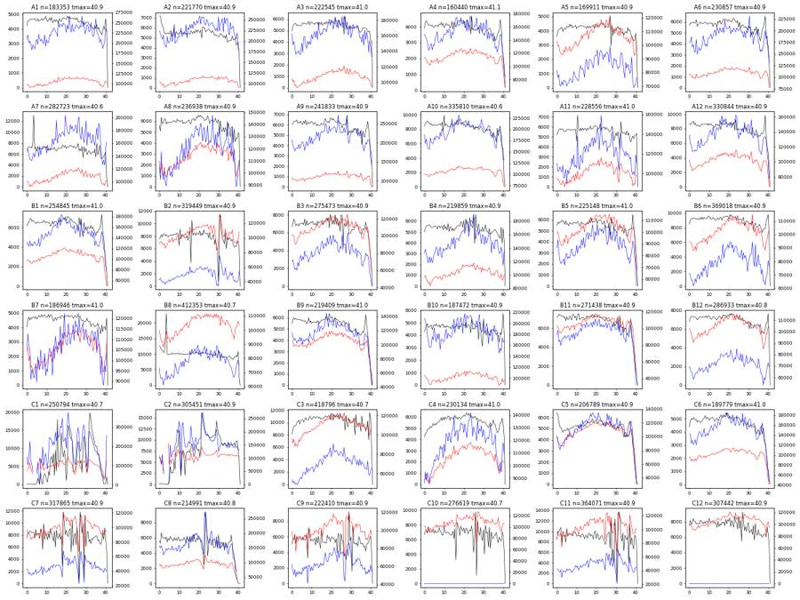
18
thinking
All 36 wells check out on voltage, acquisition time and event count. The event rate over time points to flow problems in C1, C2 and possibly C7, so I'm looking at the time bins more closely next.
19
tool call · Bash
cd /task; cat > scripts/time_fine.py <<'EOF'
import pickle, numpy as np, pandas as pd
import matplotlib; matplotlib.use('Agg'); import matplotlib.pyplot as plt
data=pickle.load(open('/tmp/data.pkl','rb'))
rows=[]
for w,df in data.items():
t=df['Time'].values
dt=np.diff(np.sort(t))
h,e=np.histogram(t,bins=np.arange(0,41,1.0))
med=np.median(h);
cv=np.std(h[1:-1])/np.mean(h[1:-1])
lowbins=np.sum(h[1:-1]<0.5*med); zerobins=np.sum(h[1:-1]<0.1*med)
# longest gap
rows.append(dict(well=w,n=len(df),medrate=med,cv=cv,low50=lowbins,low10=zerobins,maxgap=dt.max(),
gap_at=np.sort(t)[np.argmax(dt)], first=t.min(), frac_first5=np.mean(t<5)))
print(pd.DataFrame(rows).to_string())
EOF
python3 -I scripts/time_fine.py20
tool output
well n medrate cv low50 low10 maxgap gap_at first frac_first5 0 A1 183353 4566.0 0.057951 0 0 0.012 34.486 0.014 0.124798 1 A2 221770 5419.0 0.061449 0 0 0.038 37.552 0.014 0.135880 2 A3 222545 5569.0 0.041553 0 0 0.023 34.568 0.014 0.121814 3 A4 160440 4063.0 0.072953 0 0 0.015 30.088 0.014 0.128497 4 A5 169911 4245.5 0.047286 0 0 0.069 27.719 0.014 0.119533 5 A6 230857 5845.0 0.068809 0 0 0.026 34.906 0.014 0.127070 6 A7 282723 6984.5 0.107041 0 0 0.069 35.404 0.013 0.138768 7 A8 236938 5972.0 0.075174 0 0 0.085 34.925 0.014 0.123547 8 A9 241833 6099.5 0.073176 0 0 0.047 17.627 0.014 0.129635 9 A10 335810 8558.5 0.068614 0 0 0.027 29.517 0.014 0.130645 10 A11 228556 5718.0 0.060060 0 0 0.087 32.111 0.014 0.122683 11 A12 330844 8468.5 0.064906 0 0 0.028 24.299 0.014 0.130720 12 B1 254845 6484.5 0.065108 0 0 0.092 28.485 0.014 0.128906 13 B2 319449 8010.5 0.103927 0 0 0.135 30.227 0.014 0.125792 14 B3 275473 6949.5 0.071524 0 0 0.078 26.207 0.014 0.126390 15 B4 219859 5424.5 0.057283 0 0 0.024 31.606 0.014 0.124330 16 B5 225148 5655.5 0.058367 0 0 0.043 27.410 0.014 0.128436 17 B6 369018 9240.0 0.058446 0 0 0.034 33.842 0.014 0.123967 18 B7 186946 4681.5 0.059242 0 0 0.017 34.525 0.014 0.122982 19 B8 412353 10025.0 0.143260 0 0 0.012 32.736 0.013 0.151295 20 B9 219409 5658.5 0.082657 0 0 0.015 18.190 0.014 0.132679 21 B10 187472 4670.0 0.072078 0 0 0.177 29.532 0.013 0.124216 22 B11 271438 7039.0 0.083108 0 0 0.029 35.635 0.014 0.133239 23 B12 286933 7200.0 0.071437 0 0 0.014 32.633 0.014 0.125758 24 C1 250794 6265.5 0.737153 13 5 1.285 3.748 0.143 0.001033 25 C2 305451 8608.5 0.491358 9 4 0.411 3.313 0.020 0.001650 26 C3 418796 10424.0 0.055864 0 0 0.044 35.419 0.014 0.114168 27 C4 230134 5763.0 0.072634 0 0 0.010 13.410 0.014 0.106768 28 C5 206789 5240.0 0.070574 0 0 0.040 40.862 0.014 0.127134 29 C6 189779 4924.0 0.089534 0 0 0.025 40.830 0.014 0.128613 30 C7 317865 7851.5 0.155716 1 0 0.339 26.540 0.014 0.131251 31 C8 214991 5621.0 0.121667 0 0 0.324 40.374 0.014 0.137006 32 C9 222410 5580.0 0.125520 0 0 0.337 27.514 0.014 0.129500 33 C10 276619 6933.0 0.092931 0 0 0.133 30.840 0.014 0.128907 34 C11 364071 9127.0 0.145763 1 0 0.138 28.138 0.014 0.128835 35 C12 307442 7792.5 0.083364 0 0 0.055 33.437 0.014 0.128528
22
tool call · Bash
cd /task; cat > scripts/time_detail.py <<'EOF'
import pickle, numpy as np, sys
import matplotlib; matplotlib.use('Agg'); import matplotlib.pyplot as plt
data=pickle.load(open('/tmp/data.pkl','rb'))
wells=sys.argv[1].split(',')
fig,axes=plt.subplots(len(wells),3,figsize=(20,2.6*len(wells)))
for i,w in enumerate(wells):
df=data[w]; t=df['Time'].values
h,e=np.histogram(t,bins=np.arange(0,41.2,0.2))
axes[i,0].plot(e[:-1],h/0.2,'k-',lw=0.7); axes[i,0].set_title(f'{w} rate (ev/s)')
sub=np.random.default_rng(0).choice(len(df),min(30000,len(df)),replace=False)
axes[i,1].scatter(t[sub],df['FSC-A'].values[sub],s=0.3,alpha=0.3); axes[i,1].set_title(f'{w} FSC-A vs time'); axes[i,1].set_ylim(0,6e5)
axes[i,2].scatter(t[sub],np.arcsinh(df['RL3-A'].values[sub]/500),s=0.3,alpha=0.3,c='r'); axes[i,2].scatter(t[sub],np.arcsinh(df['BL1-A'].values[sub]/500),s=0.3,alpha=0.3,c='g'); axes[i,2].set_title(f'{w} asinh RL3(r) BL1(g)')
plt.tight_layout(); plt.savefig(sys.argv[2],dpi=55)
EOF
python3 -I scripts/time_detail.py C1,C2,C7,C8,C9,C11,B2,A1 plots/time_detail1.png23
tool output
(Bash completed with no output)
24
tool call · Read
{
"file_path": "/task/plots/time_detail1.png"
}25
tool output
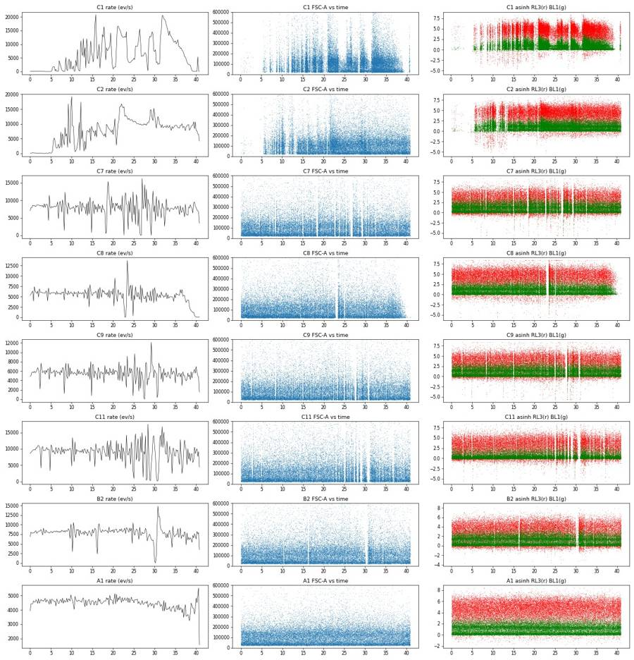
27
tool call · Bash
cd /task; cat > scripts/gaps.py <<'EOF'
import pickle, numpy as np, pandas as pd
data=pickle.load(open('/tmp/data.pkl','rb'))
rows=[]
for w,df in data.items():
t=np.sort(df['Time'].values)
h,e=np.histogram(t,bins=np.arange(0,40.8,0.1))
med=np.median(h)
low=h<0.2*med
# time with low rate
dt=np.diff(t)
ngap50=np.sum(dt>0.05); ngap100=np.sum(dt>0.1)
last_med = np.median(h[-30:])/med
# fraction of events in 1-s bins deviating >2x from median
h1,_=np.histogram(t,bins=np.arange(0,41,1.0)); m1=np.median(h1)
frac_bad=np.sum(h1[(h1<0.5*m1)|(h1>1.5*m1)])/len(t)
# time of 95% events
rows.append(dict(well=w,n=len(t),med_rate=med*10,low_bins_0p1s=low.sum(),gaps_gt50ms=ngap50,gaps_gt100ms=ngap100,
last3s_rel=round(last_med,2),t_end_rate=round(np.median(h[-10:])/med,2),bad1s_frac=round(frac_bad,3)))
print(pd.DataFrame(rows).to_string())
EOF
python3 -I scripts/gaps.py28
tool output
well n med_rate low_bins_0p1s gaps_gt50ms gaps_gt100ms last3s_rel t_end_rate bad1s_frac 0 A1 183353 4550.0 0 0 0 0.87 1.03 0.000 1 A2 221770 5420.0 0 0 0 0.83 0.81 0.000 2 A3 222545 5470.0 1 0 0 0.89 0.78 0.000 3 A4 160440 3990.0 0 0 0 0.81 0.58 0.000 4 A5 169911 4200.0 2 1 0 0.85 0.87 0.000 5 A6 230857 5800.0 0 0 0 0.85 0.64 0.000 6 A7 282723 6980.0 3 2 0 0.80 0.86 0.038 7 A8 236938 5930.0 2 2 0 0.79 0.80 0.000 8 A9 241833 6110.0 3 0 0 0.82 0.58 0.000 9 A10 335810 8490.0 1 0 0 0.72 0.60 0.000 10 A11 228556 5650.0 4 2 0 0.86 0.92 0.000 11 A12 330844 8310.0 0 0 0 0.77 0.59 0.000 12 B1 254845 6420.0 3 1 0 0.76 0.36 0.000 13 B2 319449 8040.0 8 3 1 0.84 0.90 0.000 14 B3 275473 6990.0 4 1 0 0.65 0.47 0.000 15 B4 219859 5440.0 2 0 0 0.85 0.97 0.000 16 B5 225148 5620.0 2 0 0 0.92 0.60 0.000 17 B6 369018 9160.0 3 0 0 0.88 1.02 0.000 18 B7 186946 4640.0 0 0 0 0.86 0.90 0.000 19 B8 412353 10010.0 1 0 0 0.91 0.97 0.044 20 B9 219409 5610.0 2 0 0 0.63 0.25 0.000 21 B10 187472 4650.0 4 2 1 0.90 1.10 0.000 22 B11 271438 6950.0 0 0 0 0.56 0.24 0.011 23 B12 286933 7180.0 0 0 0 0.90 1.06 0.000 24 C1 250794 4290.0 120 39 8 0.16 0.01 0.624 25 C2 305451 8640.0 78 22 10 1.05 0.86 0.152 26 C3 418796 10480.0 3 0 0 0.95 1.03 0.000 27 C4 230134 5670.0 0 0 0 0.94 0.98 0.000 28 C5 206789 5250.0 4 0 0 0.59 0.23 0.012 29 C6 189779 4890.0 2 0 0 0.51 0.22 0.010 30 C7 317865 8000.0 23 7 2 0.97 0.94 0.007 31 C8 214991 5610.0 22 6 4 0.23 0.00 0.004 32 C9 222410 5590.0 17 8 2 0.94 1.03 0.000 33 C10 276619 6960.0 21 5 3 0.90 1.00 0.000 34 C11 364071 9420.0 26 8 3 0.84 0.90 0.011 35 C12 307442 7770.0 4 2 0 0.81 0.93 0.000
30
tool call · Bash
cd /task; cat > scripts/scatter_all.py <<'EOF'
import pickle, numpy as np, sys
import matplotlib; matplotlib.use('Agg'); import matplotlib.pyplot as plt
from matplotlib.colors import LogNorm
data=pickle.load(open('/tmp/data.pkl','rb'))
x,y,kind=sys.argv[1],sys.argv[2],sys.argv[3]
def tf(v,k):
if k=='lin': return v
return np.arcsinh(v/float(k))
fig,axes=plt.subplots(6,6,figsize=(24,22))
for ax,(w,df) in zip(axes.flat,data.items()):
kx,ky=kind.split(',')
X=tf(df[x].values,kx); Y=tf(df[y].values,ky)
ax.hist2d(X,Y,bins=200,norm=LogNorm(),cmap='jet', range=[[np.percentile(X,0.01) if kx!='lin' else 0, X.max() if kx!='lin' else 1.05e6],[np.percentile(Y,0.01) if ky!='lin' else 0,Y.max() if ky!='lin' else 1.05e6]])
ax.set_title(f'{w}');
plt.suptitle(f'{x} vs {y}')
plt.tight_layout(); plt.savefig(sys.argv[4],dpi=45)
EOF
python3 -I scripts/scatter_all.py FSC-A SSC-A lin,lin plots/fsc_ssc_all.png31
tool output
(Bash completed with no output)
32
tool call · Read
{
"file_path": "/task/plots/fsc_ssc_all.png"
}33
tool output
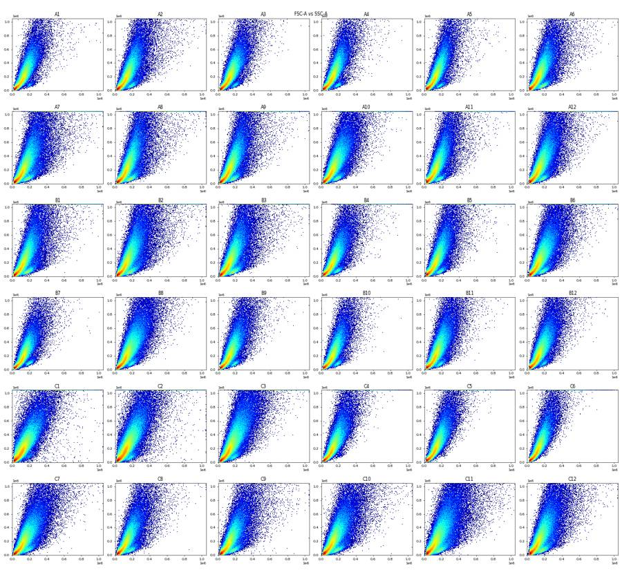
35
agent
Flow-rate analysis found clear clogs in C1/C2 and a run-dry tail in C8. Now looking at scatter distributions on log scales to place the Cells gate.
36
tool call · Bash
cd /task; python3 -I scripts/scatter_all.py FSC-A SSC-A 2000,2000 plots/fsc_ssc_all_log.png
37
tool output
(Bash completed with no output)
38
tool call · Read
{
"file_path": "/task/plots/fsc_ssc_all_log.png"
}39
tool output
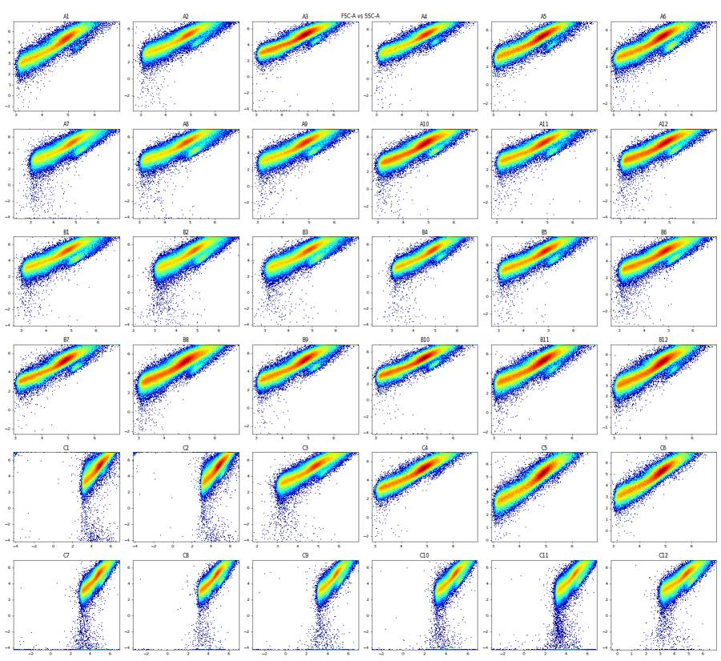
41
tool call · Bash
cd /task; python3 -I -c "
import pickle, numpy as np
d=pickle.load(open('/tmp/data.pkl','rb'))
for w,df in d.items():
f=df['FSC-A'].values; s=df['SSC-A'].values; fh=df['FSC-H'].values; sh=df['SSC-H'].values
print(w, 'FSCA<25k %.2f%%'%(100*np.mean(f<25000)), 'FSCA<=0 %d'%np.sum(f<=0), 'minF %.0f'%f.min(), 'SSC<=0 %d'%np.sum(s<=0), 'minS %.0f'%s.min(), 'FSCH<25k %.2f%%'%(100*np.mean(fh<25000)), 'SSCH min %.0f'%sh.min(), 'satSSCA %.2f%% satFSCA %.3f%%'%(100*np.mean(s>=1048575),100*np.mean(f>=1048575)))
"42
tool output
A1 FSCA<25k 2.76% FSCA<=0 0 minF 1267 SSC<=0 35 minS -20644 FSCH<25k 0.00% SSCH min 569 satSSCA 1.82% satFSCA 0.148% A2 FSCA<25k 2.72% FSCA<=0 3 minF -13964 SSC<=0 198 minS -65536 FSCH<25k 0.00% SSCH min 0 satSSCA 2.53% satFSCA 0.255% A3 FSCA<25k 2.57% FSCA<=0 7 minF -65536 SSC<=0 73 minS -65536 FSCH<25k 0.00% SSCH min 0 satSSCA 1.21% satFSCA 0.070% A4 FSCA<25k 2.42% FSCA<=0 1 minF -19993 SSC<=0 84 minS -65536 FSCH<25k 0.00% SSCH min 0 satSSCA 2.34% satFSCA 0.209% A5 FSCA<25k 3.09% FSCA<=0 0 minF 881 SSC<=0 47 minS -65536 FSCH<25k 0.00% SSCH min 0 satSSCA 2.25% satFSCA 0.099% A6 FSCA<25k 3.00% FSCA<=0 1 minF -16244 SSC<=0 89 minS -65536 FSCH<25k 0.00% SSCH min 0 satSSCA 1.79% satFSCA 0.107% A7 FSCA<25k 3.30% FSCA<=0 14 minF -39814 SSC<=0 464 minS -65536 FSCH<25k 0.00% SSCH min 0 satSSCA 3.19% satFSCA 0.334% A8 FSCA<25k 2.90% FSCA<=0 2 minF -20565 SSC<=0 261 minS -65536 FSCH<25k 0.00% SSCH min 0 satSSCA 3.64% satFSCA 0.236% A9 FSCA<25k 2.96% FSCA<=0 1 minF -24 SSC<=0 179 minS -65536 FSCH<25k 0.00% SSCH min 0 satSSCA 2.82% satFSCA 0.192% A10 FSCA<25k 3.32% FSCA<=0 3 minF -12655 SSC<=0 214 minS -65536 FSCH<25k 0.00% SSCH min 0 satSSCA 2.25% satFSCA 0.111% A11 FSCA<25k 3.58% FSCA<=0 1 minF -21478 SSC<=0 177 minS -65536 FSCH<25k 0.00% SSCH min 0 satSSCA 2.51% satFSCA 0.161% A12 FSCA<25k 3.67% FSCA<=0 17 minF -59210 SSC<=0 281 minS -65536 FSCH<25k 0.00% SSCH min 0 satSSCA 2.35% satFSCA 0.119% B1 FSCA<25k 3.47% FSCA<=0 6 minF -33733 SSC<=0 292 minS -65536 FSCH<25k 0.00% SSCH min 0 satSSCA 3.07% satFSCA 0.228% B2 FSCA<25k 3.66% FSCA<=0 15 minF -38029 SSC<=0 677 minS -65536 FSCH<25k 0.00% SSCH min 0 satSSCA 3.15% satFSCA 0.339% B3 FSCA<25k 3.25% FSCA<=0 19 minF -59112 SSC<=0 391 minS -65536 FSCH<25k 0.00% SSCH min 0 satSSCA 3.06% satFSCA 0.249% B4 FSCA<25k 3.52% FSCA<=0 11 minF -34901 SSC<=0 293 minS -65536 FSCH<25k 0.00% SSCH min 0 satSSCA 2.35% satFSCA 0.280% B5 FSCA<25k 3.48% FSCA<=0 2 minF -59078 SSC<=0 142 minS -65536 FSCH<25k 0.00% SSCH min 0 satSSCA 2.56% satFSCA 0.156% B6 FSCA<25k 3.81% FSCA<=0 9 minF -42075 SSC<=0 375 minS -65536 FSCH<25k 0.00% SSCH min 0 satSSCA 2.15% satFSCA 0.155% B7 FSCA<25k 3.41% FSCA<=0 0 minF 8228 SSC<=0 48 minS -65536 FSCH<25k 0.00% SSCH min 0 satSSCA 1.33% satFSCA 0.107% B8 FSCA<25k 3.61% FSCA<=0 0 minF 2621 SSC<=0 191 minS -65536 FSCH<25k 0.00% SSCH min 0 satSSCA 1.91% satFSCA 0.097% B9 FSCA<25k 3.35% FSCA<=0 7 minF -29840 SSC<=0 91 minS -65536 FSCH<25k 0.00% SSCH min 0 satSSCA 2.02% satFSCA 0.120% B10 FSCA<25k 3.47% FSCA<=0 2 minF -12176 SSC<=0 70 minS -65536 FSCH<25k 0.00% SSCH min 0 satSSCA 1.65% satFSCA 0.079% B11 FSCA<25k 3.46% FSCA<=0 0 minF 12953 SSC<=0 94 minS -65536 FSCH<25k 0.00% SSCH min 0 satSSCA 1.83% satFSCA 0.065% B12 FSCA<25k 3.64% FSCA<=0 0 minF 2182 SSC<=0 76 minS -65536 FSCH<25k 0.00% SSCH min 0 satSSCA 1.61% satFSCA 0.053% C1 FSCA<25k 3.05% FSCA<=0 518 minF -65536 SSC<=0 2501 minS -65536 FSCH<25k 0.00% SSCH min 0 satSSCA 2.78% satFSCA 0.329% C2 FSCA<25k 2.93% FSCA<=0 391 minF -65536 SSC<=0 2145 minS -65536 FSCH<25k 0.00% SSCH min 0 satSSCA 2.94% satFSCA 0.309% C3 FSCA<25k 3.41% FSCA<=0 25 minF -60589 SSC<=0 685 minS -65536 FSCH<25k 0.00% SSCH min 0 satSSCA 3.24% satFSCA 0.267% C4 FSCA<25k 2.99% FSCA<=0 5 minF -26361 SSC<=0 70 minS -65536 FSCH<25k 0.00% SSCH min 0 satSSCA 1.79% satFSCA 0.078% C5 FSCA<25k 3.16% FSCA<=0 0 minF 10141 SSC<=0 22 minS -17679 FSCH<25k 0.00% SSCH min 1214 satSSCA 1.81% satFSCA 0.060% C6 FSCA<25k 3.12% FSCA<=0 4 minF -34917 SSC<=0 34 minS -65536 FSCH<25k 0.00% SSCH min 0 satSSCA 1.66% satFSCA 0.041% C7 FSCA<25k 3.55% FSCA<=0 161 minF -65536 SSC<=0 1730 minS -65536 FSCH<25k 0.00% SSCH min 0 satSSCA 2.66% satFSCA 0.488% C8 FSCA<25k 3.41% FSCA<=0 57 minF -65536 SSC<=0 708 minS -65536 FSCH<25k 0.00% SSCH min 0 satSSCA 2.86% satFSCA 0.460% C9 FSCA<25k 3.38% FSCA<=0 83 minF -65536 SSC<=0 1178 minS -65536 FSCH<25k 0.00% SSCH min 0 satSSCA 3.26% satFSCA 0.674% C10 FSCA<25k 3.10% FSCA<=0 71 minF -65536 SSC<=0 1302 minS -65536 FSCH<25k 0.00% SSCH min 0 satSSCA 3.26% satFSCA 0.598% C11 FSCA<25k 3.57% FSCA<=0 135 minF -65536 SSC<=0 2593 minS -65536 FSCH<25k 0.00% SSCH min 0 satSSCA 4.33% satFSCA 0.786% C12 FSCA<25k 3.29% FSCA<=0 34 minF -61941 SSC<=0 831 minS -65536 FSCH<25k 0.00% SSCH min 0 satSSCA 3.43% satFSCA 0.422%
44
tool call · Bash
cd /task; cat > scripts/one_scatter.py <<'EOF'
import pickle, numpy as np, sys
import matplotlib; matplotlib.use('Agg'); import matplotlib.pyplot as plt
from matplotlib.colors import LogNorm
data=pickle.load(open('/tmp/data.pkl','rb'))
wells=sys.argv[1].split(',')
fig,axes=plt.subplots(2,len(wells),figsize=(6*len(wells),11))
for i,w in enumerate(wells):
df=data[w]
ax=axes[0,i]; ax.hist2d(df['FSC-A'],df['SSC-A'],bins=300,range=[[0,1.05e6],[0,1.05e6]],norm=LogNorm(),cmap='jet'); ax.set_title(w+' FSC-A vs SSC-A lin')
ax.grid(alpha=0.3)
ax=axes[1,i]; m=(df['FSC-A']>0)&(df['SSC-A']>0)
ax.hist2d(np.log10(df['FSC-A'][m]),np.log10(df['SSC-A'][m]),bins=300,range=[[3.5,6.1],[2.5,6.1]],norm=LogNorm(),cmap='jet'); ax.set_title(w+' log10'); ax.grid(alpha=0.3)
plt.tight_layout(); plt.savefig(sys.argv[2],dpi=55)
EOF
python3 -I scripts/one_scatter.py A1,B8,C7,C10 plots/scatter4.png45
tool output
(Bash completed with no output)
46
tool call · Read
{
"file_path": "/task/plots/scatter4.png"
}47
tool output
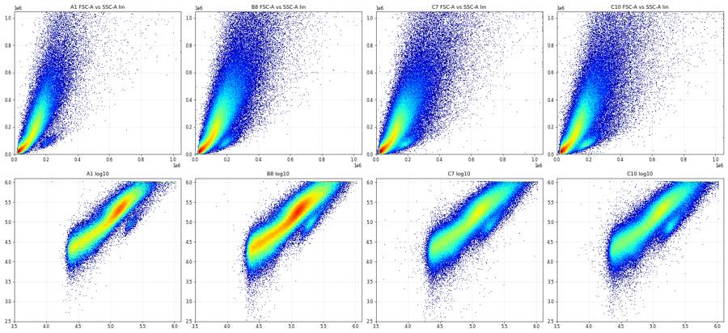
49
tool call · Bash
cd /task; cat > scripts/hist1d.py <<'EOF'
import pickle, numpy as np, sys
import matplotlib; matplotlib.use('Agg'); import matplotlib.pyplot as plt
data=pickle.load(open('/tmp/data.pkl','rb'))
ch=sys.argv[1]; lo,hi=float(sys.argv[2]),float(sys.argv[3])
fig,ax=plt.subplots(1,1,figsize=(14,7))
cm=plt.get_cmap('tab20')
for i,(w,df) in enumerate(data.items()):
v=df[ch].values; v=v[v>0]
h,e=np.histogram(np.log10(v),bins=200,range=(lo,hi),density=True)
ls='-' if w[0]!='C' else '--'
ax.plot(e[:-1],h,ls,lw=0.8,label=w,color=cm(i%20))
ax.legend(ncol=4,fontsize=7); ax.grid(alpha=0.3); ax.set_title(ch+' log10')
plt.savefig(sys.argv[4],dpi=60)
EOF
python3 -I scripts/hist1d.py FSC-A 4 6.1 plots/h_fsc.png50
tool output
(Bash completed with no output)
51
tool call · Read
{
"file_path": "/task/plots/h_fsc.png"
}52
tool output
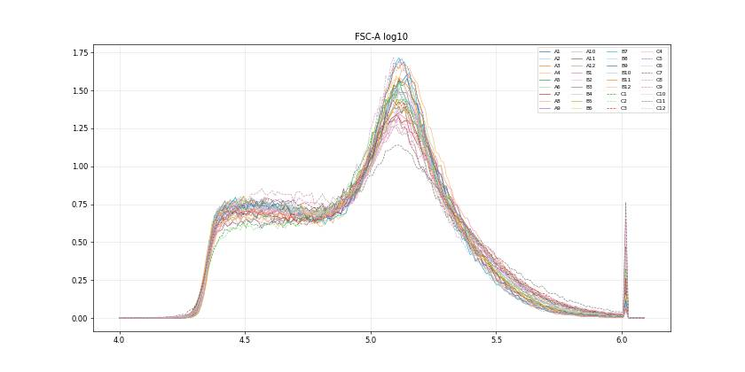
54
agent
Debris plateau sits at FSC-A ≈ 22k–70k and the cell peak is at ≈125k, the same in every well. Next: the BL1-A × RL3-A fluorescence layout across wells and controls.
55
tool call · Bash
cd /task; cat > scripts/fl_all.py <<'EOF'
import pickle, numpy as np, sys
import matplotlib; matplotlib.use('Agg'); import matplotlib.pyplot as plt
from matplotlib.colors import LogNorm
data=pickle.load(open('/tmp/data.pkl','rb'))
cof=float(sys.argv[1])
fig,axes=plt.subplots(6,6,figsize=(24,22))
for ax,(w,df) in zip(axes.flat,data.items()):
m=(df['FSC-A']>70000)&(df['FSC-A']<1e6)&(df['SSC-A']<1e6)
X=np.arcsinh(df['BL1-A'][m]/cof); Y=np.arcsinh(df['RL3-A'][m]/cof)
ax.hist2d(X,Y,bins=200,range=[[-3,7],[-3,8]],norm=LogNorm(),cmap='jet')
ax.set_title(f'{w}'); ax.grid(alpha=0.4)
plt.suptitle('BL1-A (x) vs RL3-A (y) asinh/%g'%cof)
plt.tight_layout(); plt.savefig(sys.argv[2],dpi=45)
EOF
python3 -I scripts/fl_all.py 500 plots/fl_all.png56
tool output
(Bash completed with no output)
57
tool call · Read
{
"file_path": "/task/plots/fl_all.png"
}58
tool output
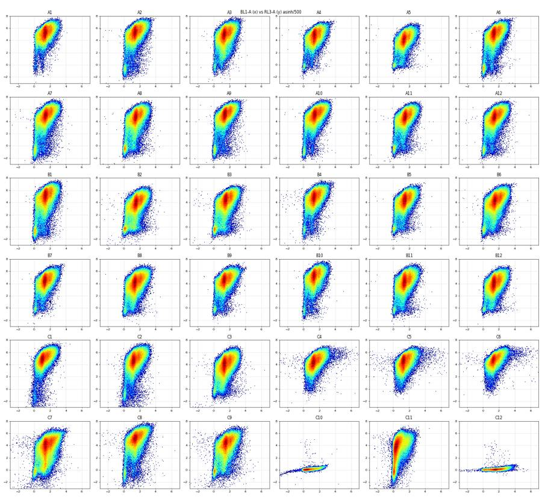
60
tool call · Bash
cd /task; cat > scripts/hist_fl.py <<'EOF'
import pickle, numpy as np, sys
import matplotlib; matplotlib.use('Agg'); import matplotlib.pyplot as plt
data=pickle.load(open('/tmp/data.pkl','rb'))
ch=sys.argv[1]; cof=float(sys.argv[2])
fig,axes=plt.subplots(2,1,figsize=(16,12))
cm=plt.get_cmap('tab20')
for i,(w,df) in enumerate(data.items()):
m=(df['FSC-A']>70000)&(df['FSC-A']<1e6)&(df['SSC-A']<1e6)
v=np.arcsinh(df[ch][m].values/cof)
h,e=np.histogram(v,bins=250,range=(-4,8),density=True)
ax=axes[0] if w[0]!='C' else axes[1]
ls='-' if w not in ('C10','C11','C12') else '--'
lw=0.8 if w not in ('C10','C11','C12') else 2
ax.plot(e[:-1],h,ls,lw=lw,label=w,color=cm(i%20))
for ax in axes:
ax.legend(ncol=4,fontsize=8); ax.grid(alpha=0.3)
ticks=[-1000,0,100,1000,1e4,1e5,1e6]; ax.set_xticks(np.arcsinh(np.array(ticks)/cof)); ax.set_xticklabels([str(int(t)) for t in ticks])
axes[0].set_title(ch+' asinh/%g'%cof)
plt.savefig(sys.argv[3],dpi=60)
EOF
python3 -I scripts/hist_fl.py RL3-A 200 plots/h_rl3.png; python3 -I scripts/hist_fl.py BL1-A 200 plots/h_bl1.png61
tool output
(Bash completed with no output)
62
tool call · Read
{
"file_path": "/task/plots/h_rl3.png"
}63
tool output
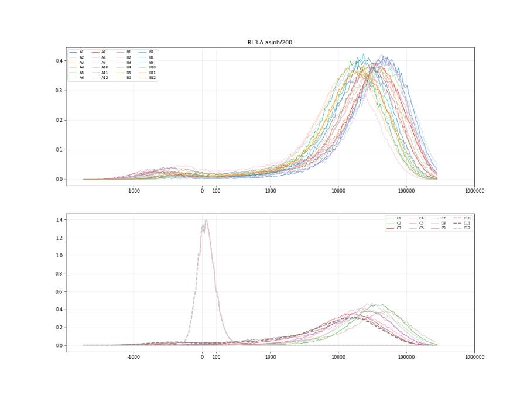
65
tool call · Read
{
"file_path": "/task/plots/h_bl1.png"
}66
tool output
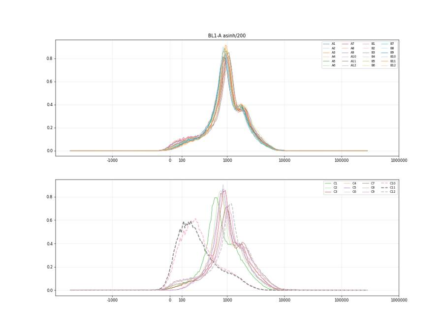
68
tool call · Bash
cd /task; cat > scripts/rl3_vs_scatter.py <<'EOF'
import pickle, numpy as np, sys
import matplotlib; matplotlib.use('Agg'); import matplotlib.pyplot as plt
from matplotlib.colors import LogNorm
data=pickle.load(open('/tmp/data.pkl','rb'))
wells=sys.argv[1].split(','); cof=200
fig,axes=plt.subplots(len(wells),4,figsize=(22,5*len(wells)))
def ash(v): return np.arcsinh(v/cof)
tk=[-1000,0,100,1000,1e4,1e5,1e6]
for i,w in enumerate(wells):
df=data[w]; m=(df['FSC-A']>0)&(df['SSC-A']>0)
d=df[m]
for j,(x,y) in enumerate([('FSC-A','RL3-A'),('SSC-A','RL3-A'),('FSC-A','BL1-A'),('BL1-A','RL3-A')]):
ax=axes[i,j]
X=np.log10(d[x]) if x in('FSC-A','SSC-A') else ash(d[x]); Y=ash(d[y])
rx=[4.2,6.05] if x in('FSC-A','SSC-A') else [-3,10]
ax.hist2d(X,Y,bins=250,range=[rx,[-3,10]],norm=LogNorm(),cmap='jet')
ax.set_yticks(ash(np.array(tk))); ax.set_yticklabels([str(int(t)) for t in tk])
if x not in('FSC-A','SSC-A'): ax.set_xticks(ash(np.array(tk))); ax.set_xticklabels([str(int(t)) for t in tk])
ax.set_title(f'{w} {x} vs {y}'); ax.grid(alpha=0.4)
plt.tight_layout(); plt.savefig(sys.argv[2],dpi=50)
EOF
python3 -I scripts/rl3_vs_scatter.py C10,C11,C12,C8,A1 plots/rl3_scatter.png69
tool output
(Bash completed with no output)
70
tool call · Read
{
"file_path": "/task/plots/rl3_scatter.png"
}71
tool output
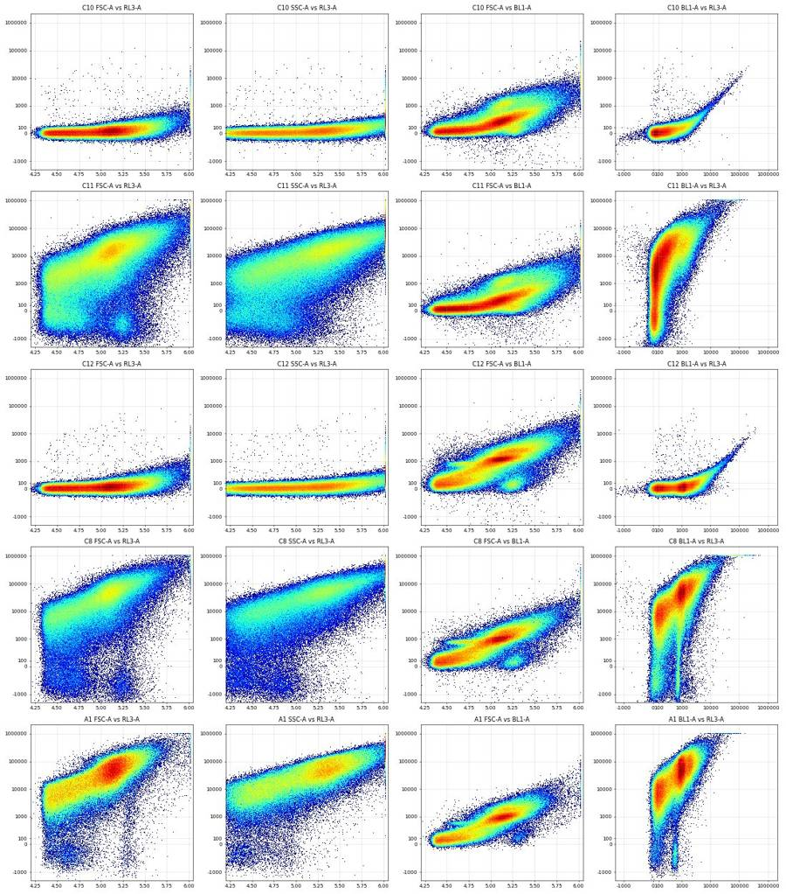
73
thinking
Zombie-negative live cells form a small cluster near RL3-A ≈ −500, while most events are Zombie-bright and unstained cells sit near 0–100. I'm checking the singlet plot and measuring the RL3-A/BL1-A boundaries next.
74
tool call · Bash
cd /task; cat > scripts/singlet.py <<'EOF'
import pickle, numpy as np, sys
import matplotlib; matplotlib.use('Agg'); import matplotlib.pyplot as plt
from matplotlib.colors import LogNorm
data=pickle.load(open('/tmp/data.pkl','rb'))
wells=sys.argv[1].split(',')
fig,axes=plt.subplots(2,len(wells),figsize=(6*len(wells),11))
for i,w in enumerate(wells):
df=data[w]; m=(df['FSC-A']>70000)
d=df[m]
axes[0,i].hist2d(d['SSC-H'],d['SSC-A'],bins=300,range=[[0,1.05e6],[0,1.05e6]],norm=LogNorm(),cmap='jet'); axes[0,i].set_title(w+' SSC-H vs SSC-A lin'); axes[0,i].grid(alpha=.3)
mm=(d['SSC-H']>0)&(d['SSC-A']>0)
axes[1,i].hist2d(np.log10(d['SSC-H'][mm]),np.log10(d['SSC-A'][mm]),bins=300,range=[[3.5,6.05],[3.5,6.05]],norm=LogNorm(),cmap='jet'); axes[1,i].grid(alpha=.3)
axes[1,i].plot([3.5,6],[3.5,6],'k--',lw=0.5)
plt.tight_layout(); plt.savefig(sys.argv[2],dpi=50)
EOF
python3 -I scripts/singlet.py A1,B8,C7,C11 plots/singlet4.png75
tool output
(Bash completed with no output)
76
tool call · Read
{
"file_path": "/task/plots/singlet4.png"
}77
tool output
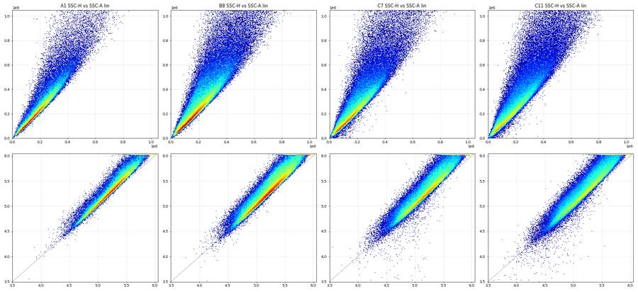
79
tool call · Bash
cd /task; python3 -I -c "
import pickle, numpy as np
d=pickle.load(open('/tmp/data.pkl','rb'))
for w in ['A1','A5','B8','C3','C7','C10','C11','C12']:
df=d[w]; m=(df['FSC-A']>70000)&(df['SSC-H']>1000)&(df['SSC-A']<1048575)
r=df['SSC-A'][m]/df['SSC-H'][m]
h,e=np.histogram(r,bins=np.arange(0.6,2.2,0.05))
print(w, ' '.join('%d'%(x/len(r)*1000) for x in h), ' p5,50,95=',np.round(np.percentile(r,[5,25,50,75,95]),3))
print('bins',np.round(np.arange(0.6,2.2,0.05),2))
"80
tool output
A1 0 0 0 0 0 0 1 11 75 150 169 142 99 69 48 37 29 24 19 16 13 11 10 9 7 6 6 5 4 4 3 p5,50,95= [1.031 1.103 1.18 1.329 1.86 ] A5 0 0 0 0 0 0 3 24 109 164 160 121 85 61 45 36 28 23 18 16 14 11 9 8 7 6 5 5 4 3 3 p5,50,95= [1.014 1.085 1.164 1.318 1.826] B8 0 0 0 0 0 1 8 40 111 154 142 102 71 52 40 33 27 23 20 17 15 14 13 11 10 10 8 8 7 6 5 p5,50,95= [0.999 1.079 1.167 1.384 2.054] C3 0 0 0 0 1 3 10 42 105 145 133 100 70 51 40 33 28 24 21 18 17 15 13 12 11 10 9 8 8 7 6 p5,50,95= [0.992 1.079 1.175 1.414 2.106] C7 0 0 0 1 1 3 10 40 107 146 126 92 65 50 40 34 29 25 22 19 17 16 14 13 12 10 10 9 7 7 6 p5,50,95= [0.991 1.078 1.179 1.439 2.154] C10 0 0 0 1 1 3 10 38 104 146 134 100 72 52 42 33 27 24 21 18 17 15 13 12 11 10 9 8 7 6 5 p5,50,95= [0.992 1.08 1.175 1.407 2.101] C11 0 0 1 1 2 5 13 41 96 122 113 88 67 54 44 36 32 28 24 21 19 17 16 14 13 11 10 10 9 8 7 p5,50,95= [0.979 1.083 1.204 1.485 2.2 ] C12 0 0 0 0 1 3 10 38 103 141 128 98 72 55 43 36 30 25 22 20 17 15 13 13 11 10 9 8 7 6 5 p5,50,95= [0.993 1.081 1.183 1.418 2.088] bins [0.6 0.65 0.7 0.75 0.8 0.85 0.9 0.95 1. 1.05 1.1 1.15 1.2 1.25 1.3 1.35 1.4 1.45 1.5 1.55 1.6 1.65 1.7 1.75 1.8 1.85 1.9 1.95 2. 2.05 2.1 2.15]
82
tool call · Bash
cd /task; cat > scripts/live_scatter.py <<'EOF'
import pickle, numpy as np, sys
import matplotlib; matplotlib.use('Agg'); import matplotlib.pyplot as plt
from matplotlib.colors import LogNorm
data=pickle.load(open('/tmp/data.pkl','rb'))
wells=sys.argv[1].split(',')
fig,axes=plt.subplots(3,len(wells),figsize=(6*len(wells),16))
for i,w in enumerate(wells):
df=data[w]; m=(df['FSC-A']>0)&(df['SSC-A']>0); d=df[m]
for j,(name,sel) in enumerate([('all',np.ones(len(d),bool)),('RL3<1000',d['RL3-A']<1000),('RL3>5000',d['RL3-A']>5000)]):
ax=axes[j,i]; dd=d[sel]
ax.hist2d(np.log10(dd['FSC-A']),np.log10(dd['SSC-A']),bins=250,range=[[4.2,6.05],[3,6.05]],norm=LogNorm(),cmap='jet')
ax.set_title(f'{w} {name} n={sel.sum()}'); ax.grid(alpha=.4)
ax.axvline(np.log10(70000),color='k',lw=0.6)
plt.tight_layout(); plt.savefig(sys.argv[2],dpi=50)
EOF
python3 -I scripts/live_scatter.py A1,C11,C8,C12 plots/live_scatter.png83
tool output
(Bash completed with no output)
84
tool call · Read
{
"file_path": "/task/plots/live_scatter.png"
}85
tool output
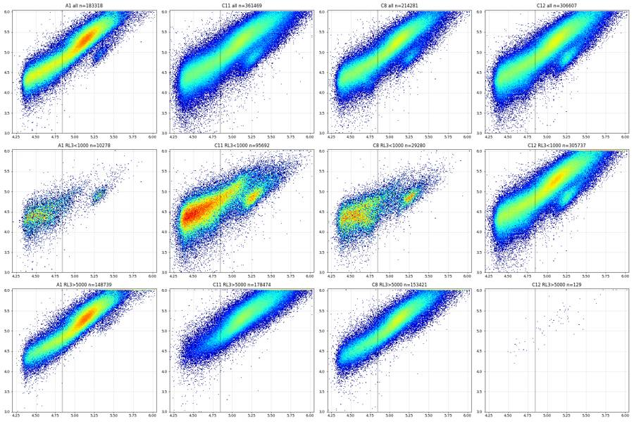
87
thinking
The scatter splits into low-FSC debris, the dead-cell diagonal and a compact live-cell island, so the Cells gate has to keep both cell groups. I'm measuring the fluorescence thresholds on the controls next.
88
tool call · Bash
cd /task; cat > scripts/pregate.py <<'EOF'
import numpy as np
def pregate(df):
f=df['FSC-A'].values; s=df['SSC-A'].values; sh=df['SSC-H'].values
cells=(f>70000)&(f<1040000)&(s>5000)&(s<1040000)
r=s/np.maximum(sh,1)
sing=cells&(r>0.85)&(r<1.35)
return cells,sing
EOF
cat > scripts/fl_hist_ctrl.py <<'EOF'
import pickle, numpy as np, sys
sys.path.insert(0,'/task/scripts'); from pregate import pregate
import matplotlib; matplotlib.use('Agg'); import matplotlib.pyplot as plt
data=pickle.load(open('/tmp/data.pkl','rb'))
cof=150
def ash(v): return np.arcsinh(v/cof)
tk=np.array([-5000,-1000,-300,0,300,1000,3000,1e4,1e5,1e6])
fig,axes=plt.subplots(2,1,figsize=(16,12))
for w,c in [('C10','k'),('C11','r'),('C12','g'),('C7','b'),('C8','c'),('C9','m'),('A1','orange'),('C5','y')]:
df=data[w]; _,s=pregate(df); d=df[s]
for ax,ch in zip(axes,['RL3-A','BL1-A']):
h,e=np.histogram(ash(d[ch].values),bins=300,range=(-6,10),density=True)
ax.plot(e[:-1],h,color=c,label=w,lw=1.5 if w[0]=='C' and int(w[1:])>=10 else 0.8)
for ax,ch in zip(axes,['RL3-A','BL1-A']):
ax.set_xticks(ash(tk)); ax.set_xticklabels([str(int(t)) for t in tk]); ax.grid(alpha=.4); ax.legend(); ax.set_title(ch+' singlets')
ax.set_yscale('log'); ax.set_ylim(1e-4,3)
plt.tight_layout(); plt.savefig('/task/plots/ctrl_hist.png',dpi=60)
EOF
python3 -I scripts/fl_hist_ctrl.py89
tool output
(Bash completed with no output)
90
tool call · Read
{
"file_path": "/task/plots/ctrl_hist.png"
}91
tool output
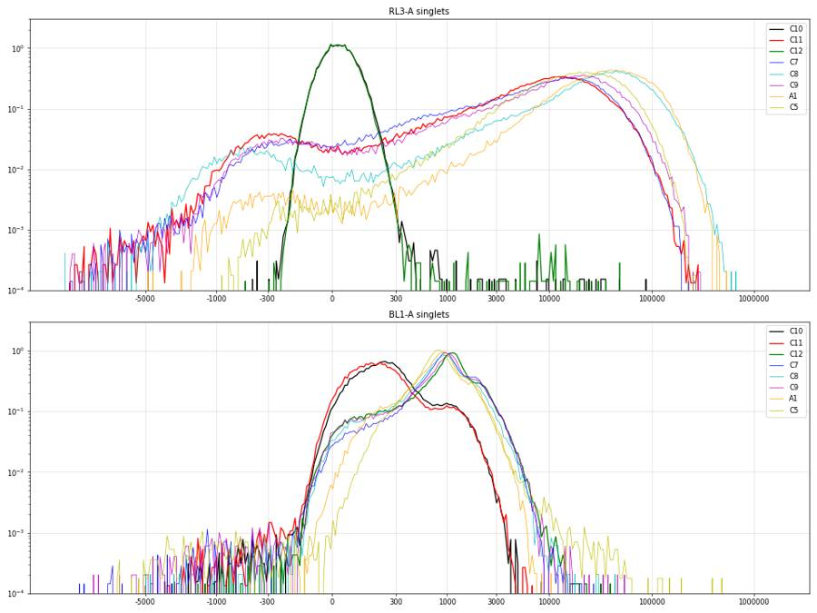
93
tool call · Bash
cd /task; cat > scripts/fl2d.py <<'EOF'
import pickle, numpy as np, sys
sys.path.insert(0,'/task/scripts'); from pregate import pregate
import matplotlib; matplotlib.use('Agg'); import matplotlib.pyplot as plt
from matplotlib.colors import LogNorm
data=pickle.load(open('/tmp/data.pkl','rb'))
cof=150
def ash(v): return np.arcsinh(v/cof)
tk=np.array([-5000,-1000,-300,0,300,1000,3000,1e4,1e5,1e6])
wells=sys.argv[1].split(',')
nc=min(4,len(wells)); nr=int(np.ceil(len(wells)/nc))
fig,axes=plt.subplots(nr,nc,figsize=(7*nc,6.5*nr)); axes=np.atleast_1d(axes).flat
for ax,w in zip(axes,wells):
df=data[w]; _,s=pregate(df); d=df[s]
ax.hist2d(ash(d['BL1-A']),ash(d['RL3-A']),bins=300,range=[[-4,10],[-5,10]],norm=LogNorm(),cmap='jet')
for a in (ax.set_xticks,ax.set_yticks): a(ash(tk))
ax.set_xticklabels([str(int(t)) for t in tk],rotation=45); ax.set_yticklabels([str(int(t)) for t in tk])
ax.grid(alpha=.5); ax.set_title(f'{w} singlets n={s.sum()}')
plt.tight_layout(); plt.savefig(sys.argv[2],dpi=55)
EOF
python3 -I scripts/fl2d.py C10,C11,C12,C7,C8,C9,A1,C5 plots/fl2d_ctrl.png94
tool output
(Bash completed with no output)
95
tool call · Read
{
"file_path": "/task/plots/fl2d_ctrl.png"
}96
tool output
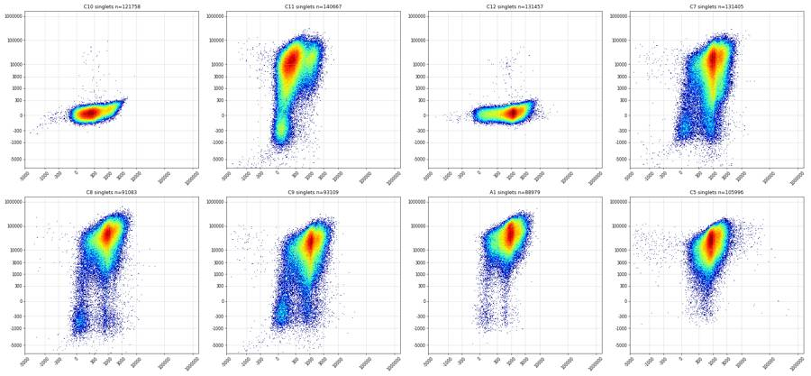
98
tool call · Bash
cd /task; cat > scripts/fine_hist.py <<'EOF'
import pickle, numpy as np, sys
sys.path.insert(0,'/task/scripts'); from pregate import pregate
data=pickle.load(open('/tmp/data.pkl','rb'))
edges=np.array([-1e6,-5000,-3000,-2000,-1500,-1000,-700,-500,-300,-200,-100,0,100,200,300,400,500,700,1000,1500,2000,3000,5000,1e4,3e4,1e5,1e7])
print('RL3-A singlets, % per bin'); print('edges', ' '.join(f'{int(e):>6}' for e in edges[1:-1]))
for w in ['C10','C11','C12','C7','C8','C9','A1','B8','C5']:
df=data[w]; _,s=pregate(df); v=df['RL3-A'].values[s]
h,_=np.histogram(v,bins=edges); print(f'{w:>5}', ' '.join(f'{x:6.2f}' for x in 100*h/len(v)))
print('BL1-A among RL3<0 singlets (live) / C12 all')
for w in ['C10','C11','C12','C7','C8','C9','A1','B8','C5']:
df=data[w]; _,s=pregate(df);
sel = s&(df['RL3-A'].values<0) if w not in('C10','C12') else s
v=df['BL1-A'].values[sel]
h,_=np.histogram(v,bins=edges); print(f'{w:>5}', ' '.join(f'{x:6.2f}' for x in 100*h/len(v)), len(v))
EOF
python3 -I scripts/fine_hist.py99
tool output
RL3-A singlets, % per bin edges -5000 -3000 -2000 -1500 -1000 -700 -500 -300 -200 -100 0 100 200 300 400 500 700 1000 1500 2000 3000 5000 10000 30000 100000 C10 0.00 0.00 0.00 0.00 0.00 0.00 0.00 0.00 0.00 0.66 28.98 59.44 10.30 0.53 0.03 0.01 0.00 0.01 0.00 0.00 0.00 0.00 0.00 0.01 0.00 0.00 C11 0.06 0.04 0.05 0.06 0.22 0.44 0.72 1.55 1.30 1.55 1.45 1.27 1.10 1.04 0.97 0.88 1.68 2.26 3.16 2.85 4.97 9.02 18.53 33.13 11.35 0.35 C12 0.00 0.00 0.00 0.00 0.00 0.00 0.00 0.00 0.00 0.73 29.93 59.52 9.28 0.45 0.03 0.01 0.00 0.00 0.00 0.00 0.00 0.01 0.01 0.02 0.00 0.00 C7 0.06 0.04 0.05 0.04 0.13 0.26 0.44 1.00 0.91 1.32 1.57 1.62 1.63 1.53 1.43 1.36 2.41 2.81 3.83 3.05 5.05 8.12 15.87 32.66 12.49 0.33 C8 0.05 0.04 0.11 0.17 0.44 0.54 0.64 0.91 0.55 0.55 0.52 0.45 0.34 0.37 0.30 0.27 0.53 0.72 1.17 1.15 2.08 3.54 7.01 26.15 42.35 9.05 C9 0.06 0.04 0.05 0.04 0.15 0.28 0.52 1.12 1.00 1.35 1.56 1.26 0.99 0.93 0.80 0.84 1.42 1.92 2.83 2.29 3.98 6.70 13.95 35.43 19.52 0.97 A1 0.00 0.00 0.00 0.01 0.03 0.05 0.09 0.16 0.12 0.16 0.15 0.14 0.11 0.10 0.10 0.09 0.19 0.29 0.46 0.46 0.96 2.15 6.76 29.51 46.39 11.51 B8 0.00 0.00 0.00 0.00 0.02 0.08 0.17 0.47 0.38 0.43 0.45 0.41 0.42 0.41 0.44 0.42 0.86 1.29 2.07 2.14 4.25 8.54 19.57 40.20 16.33 0.63 C5 0.00 0.00 0.00 0.00 0.00 0.00 0.01 0.03 0.07 0.09 0.13 0.17 0.21 0.23 0.22 0.24 0.46 0.71 1.18 1.31 2.98 6.60 15.95 39.80 28.19 1.40 BL1-A among RL3<0 singlets (live) / C12 all C10 0.00 0.00 0.00 0.00 0.01 0.01 0.01 0.02 0.01 0.04 1.78 15.89 24.67 21.97 12.36 5.89 5.49 4.47 4.74 1.83 0.74 0.08 0.00 0.00 0.00 0.00 121758 C11 0.00 0.02 0.05 0.07 0.10 0.07 0.10 0.11 0.23 0.38 16.12 60.62 16.88 2.62 0.85 0.51 0.58 0.33 0.26 0.07 0.05 0.00 0.00 0.00 0.00 0.00 10480 C12 0.00 0.00 0.00 0.00 0.00 0.01 0.00 0.01 0.00 0.02 0.83 3.92 4.14 3.54 3.28 3.39 8.20 18.07 31.90 9.92 9.32 3.03 0.40 0.02 0.00 0.00 131457 C7 0.05 0.05 0.01 0.13 0.12 0.12 0.07 0.25 0.10 0.48 8.07 22.76 9.59 4.34 4.28 4.84 12.42 16.58 9.44 3.88 1.50 0.64 0.17 0.09 0.00 0.00 7646 C8 0.00 0.00 0.05 0.05 0.00 0.05 0.00 0.15 0.10 0.36 10.89 38.52 13.46 3.55 2.04 2.70 5.03 9.77 6.08 3.16 2.28 1.09 0.63 0.05 0.00 0.00 4115 C9 0.09 0.07 0.05 0.05 0.10 0.14 0.10 0.21 0.16 0.24 9.97 36.26 12.96 4.18 3.06 2.92 6.42 10.13 6.47 2.82 2.11 1.01 0.26 0.14 0.07 0.00 5747 A1 0.00 0.00 0.00 0.00 0.00 0.00 0.00 0.00 0.00 0.00 8.04 31.58 19.74 5.85 2.05 4.24 17.25 5.85 3.22 1.75 0.44 0.00 0.00 0.00 0.00 0.00 684 B8 0.00 0.00 0.00 0.00 0.00 0.00 0.00 0.00 0.00 0.13 7.11 30.14 17.13 5.49 4.82 4.37 12.34 10.29 4.50 2.05 0.96 0.43 0.13 0.11 0.00 0.00 3753 C5 0.00 0.00 0.00 0.28 0.00 0.28 0.00 0.00 0.00 0.28 0.28 3.11 10.17 10.45 11.30 13.84 25.14 16.38 5.08 1.13 0.56 0.28 0.00 0.56 0.28 0.56 354
101
tool call · Bash
cd /task; cat > scripts/island.py <<'EOF'
import pickle, numpy as np, sys
sys.path.insert(0,'/task/scripts'); from pregate import pregate
data=pickle.load(open('/tmp/data.pkl','rb'))
edges=np.array([-1e6,-3000,-2000,-1500,-1000,-700,-500,-300,-200,-100,0,100,200,300,400,500,700,1000,1500,2000,3000,5000,1e4,3e4,1e5,1e7])
print('hdr ', ' '.join(f'{int(e):>6}' for e in edges[:-1]))
for ch in ['RL3-A','BL1-A']:
print(ch,'in scatter island (log FSC 5.2-5.42, log SSC 4.6-5.0)')
for w in ['C10','C11','C12','C7','C8','C9','A1','B8','C5']:
df=data[w]; _,s=pregate(df)
lf=np.log10(np.maximum(df['FSC-A'].values,1)); ls=np.log10(np.maximum(df['SSC-A'].values,1))
isl=s&(lf>5.2)&(lf<5.42)&(ls>4.6)&(ls<5.0)&(ls< lf-0.3)
v=df[ch].values[isl]; h,_=np.histogram(v,bins=edges)
print(f'{w:>5}', ' '.join(f'{x:6.2f}' for x in 100*h/len(v)), len(v))
EOF
python3 -I scripts/island.py102
tool output
hdr -1000000 -3000 -2000 -1500 -1000 -700 -500 -300 -200 -100 0 100 200 300 400 500 700 1000 1500 2000 3000 5000 10000 30000 100000 RL3-A in scatter island (log FSC 5.2-5.42, log SSC 4.6-5.0) C10 0.00 0.00 0.00 0.00 0.00 0.00 0.00 0.00 1.96 44.46 49.87 3.71 0.00 0.00 0.00 0.00 0.00 0.00 0.00 0.00 0.00 0.00 0.00 0.00 0.00 3716 C11 0.39 0.35 0.51 2.60 4.93 8.83 17.75 13.60 14.59 10.30 6.55 3.85 2.70 1.89 1.29 2.05 2.28 2.17 0.97 1.11 0.67 0.44 0.18 0.02 0.00 4339 C12 0.00 0.00 0.00 0.00 0.00 0.00 0.00 0.00 1.61 43.67 51.66 2.99 0.02 0.00 0.02 0.00 0.00 0.00 0.00 0.00 0.00 0.02 0.00 0.00 0.00 4479 C7 0.17 0.42 0.38 1.75 3.38 6.29 15.30 12.09 15.63 13.59 8.63 4.42 2.67 1.75 1.46 2.38 2.46 2.58 1.58 0.96 0.96 0.58 0.50 0.08 0.00 2399 C8 0.97 1.72 2.60 7.08 9.06 10.34 12.41 7.17 7.92 6.56 4.71 3.30 2.90 2.68 1.76 2.77 2.68 3.78 2.20 2.46 2.33 1.72 0.75 0.13 0.00 2273 C9 0.35 0.25 0.32 1.73 3.43 6.76 14.30 11.36 15.68 15.19 9.81 3.96 2.73 2.16 1.42 2.09 2.27 2.27 0.88 1.38 0.88 0.46 0.21 0.11 0.00 2825 A1 0.29 0.15 0.74 2.65 3.68 5.15 10.74 7.50 7.94 8.97 7.06 4.85 3.82 4.56 2.50 5.74 5.00 5.74 4.56 3.68 2.50 1.91 0.15 0.15 0.00 680 B8 0.00 0.05 0.10 1.00 4.36 7.51 19.27 13.54 12.02 9.55 6.40 3.88 3.94 2.73 1.63 2.57 2.62 3.20 1.99 1.84 0.94 0.63 0.21 0.00 0.00 1905 C5 0.00 0.00 0.00 0.00 3.33 0.00 3.33 10.00 3.33 10.00 10.00 6.67 10.00 3.33 3.33 0.00 0.00 13.33 3.33 10.00 0.00 3.33 6.67 0.00 0.00 30 BL1-A in scatter island (log FSC 5.2-5.42, log SSC 4.6-5.0) C10 0.00 0.00 0.00 0.03 0.05 0.03 0.05 0.00 0.16 15.58 67.28 16.50 0.27 0.03 0.00 0.00 0.03 0.00 0.00 0.00 0.00 0.00 0.00 0.00 0.00 3716 C11 0.00 0.02 0.00 0.00 0.00 0.02 0.05 0.12 0.21 15.33 67.71 15.56 0.65 0.18 0.05 0.05 0.02 0.05 0.00 0.00 0.00 0.00 0.00 0.00 0.00 4339 C12 0.00 0.00 0.00 0.00 0.02 0.00 0.09 0.02 0.22 11.57 50.93 23.60 4.51 1.47 1.03 2.05 1.34 1.18 0.47 0.96 0.40 0.11 0.02 0.00 0.00 4479 C7 0.00 0.00 0.04 0.04 0.04 0.00 0.08 0.04 0.75 14.38 52.44 19.67 3.88 1.88 1.08 1.17 1.21 1.33 1.00 0.54 0.25 0.13 0.04 0.00 0.00 2399 C8 0.00 0.00 0.00 0.00 0.00 0.00 0.13 0.00 0.35 11.48 53.19 22.17 4.36 1.63 1.06 1.19 1.19 1.01 0.70 0.84 0.57 0.13 0.00 0.00 0.00 2273 C9 0.00 0.00 0.00 0.07 0.04 0.04 0.18 0.07 0.18 10.76 53.52 22.69 4.11 1.88 0.81 1.45 1.45 0.88 0.42 0.74 0.57 0.14 0.00 0.00 0.00 2825 A1 0.00 0.00 0.00 0.00 0.00 0.00 0.00 0.00 0.00 6.62 46.18 32.50 6.76 1.91 1.76 1.91 1.32 0.74 0.29 0.00 0.00 0.00 0.00 0.00 0.00 680 B8 0.00 0.00 0.00 0.00 0.00 0.00 0.00 0.00 0.21 8.56 47.82 27.77 6.82 2.15 1.68 1.42 1.52 1.10 0.31 0.31 0.31 0.00 0.00 0.00 0.00 1905 C5 0.00 0.00 0.00 0.00 0.00 0.00 0.00 0.00 0.00 0.00 0.00 3.33 0.00 6.67 3.33 6.67 16.67 30.00 16.67 10.00 0.00 0.00 0.00 0.00 6.67 30
104
thinking
The live-cell gate uses Zombie-negative (RL3-A −1500 to +300) and mostly caspase-negative (BL1-A < 300) thresholds. Next I'm surveying live, GFP-bright and island counts per well to catch mislabeled or odd wells.
105
tool call · Bash
cd /task; cat > scripts/survey.py <<'EOF'
import pickle, numpy as np, sys, pandas as pd
sys.path.insert(0,'/task/scripts'); from pregate import pregate
data=pickle.load(open('/tmp/data.pkl','rb'))
rows=[]
for w,df in data.items():
c,s=pregate(df)
lf=np.log10(np.maximum(df['FSC-A'].values,1)); ls=np.log10(np.maximum(df['SSC-A'].values,1))
isl=s&(lf>5.2)&(lf<5.42)&(ls>4.6)&(ls<5.0)&(ls< lf-0.3)
b=df['BL1-A'].values; r=df['RL3-A'].values
live=s&(r<300)
rows.append(dict(well=w,n=len(df),cells=c.sum(),pc_cells=100*c.mean(),sing=s.sum(),pc_sing=100*s.sum()/c.sum(),island=isl.sum(),
live=live.sum(),pc_live=100*live.sum()/s.sum(), casp_live=(live&(b>400)).sum(), pc_casp=100*(live&(b>400)).sum()/max(live.sum(),1),
late=(s&(r>3000)&(b>400)).sum(), pc_late=100*(s&(r>3000)&(b>400)).sum()/s.sum(),
gfp10k=(s&(b>10000)).sum(), gfp5k=(s&(b>5000)).sum(), medBL1=np.median(b[s]), medRL3=np.median(r[s]), medFSC=np.median(df['FSC-A'].values[s]), medSSC=np.median(df['SSC-A'].values[s])))
out=pd.DataFrame(rows); pd.set_option('display.width',250)
print(out.round(2).to_string())
EOF
python3 -I scripts/survey.py106
tool output
well n cells pc_cells sing pc_sing island live pc_live casp_live pc_casp late pc_late gfp10k gfp5k medBL1 medRL3 medFSC medSSC 0 A1 183353 115667 63.08 88979 76.93 680 997 1.12 361 36.21 74994 84.28 1 65 881.0 36328.0 125809.0 182257.0 1 A2 221770 139220 62.78 101752 73.09 2259 4161 4.09 1018 24.47 82638 81.22 2 118 880.0 37429.0 125503.0 174258.5 2 A3 222545 145631 65.44 113171 77.71 1224 3112 2.75 1319 42.38 90802 80.23 1 115 886.0 26369.0 125252.0 176087.0 3 A4 160440 107070 66.74 82352 76.91 1349 2286 2.78 603 26.38 68058 82.64 0 90 896.0 22108.5 129204.5 188274.0 4 A5 169911 108811 64.04 84615 77.76 1265 3789 4.48 1461 38.56 66569 78.67 1 80 876.0 12853.0 124105.0 180544.0 5 A6 230857 151907 65.80 117604 77.42 4405 7661 6.51 1715 22.39 94371 80.24 4 148 906.0 30424.0 126831.5 174452.0 6 A7 282723 177753 62.87 127591 71.78 4154 7679 6.02 1553 20.22 101368 79.45 4 213 925.0 27339.0 123879.0 170341.0 7 A8 236938 152636 64.42 111709 73.19 4665 10194 9.13 2807 27.54 83226 74.50 10 244 969.0 19166.0 127372.0 174359.0 8 A9 241833 158805 65.67 119506 75.25 3047 6363 5.32 1576 24.77 97806 81.84 5 181 919.0 32470.0 125233.0 179205.5 9 A10 335810 213890 63.69 157895 73.82 3576 5364 3.40 1112 20.73 131320 83.17 1 210 929.0 31044.0 125371.0 177379.0 10 A11 228556 139538 61.05 106132 76.06 2575 6085 5.73 1907 31.34 84575 79.69 2 202 992.0 20922.5 123064.5 175211.5 11 A12 330844 204098 61.69 150532 73.75 3171 6878 4.57 2006 29.17 122813 81.59 11 269 950.0 22831.0 123586.0 175831.0 12 B1 254845 157999 62.00 116223 73.56 4909 9132 7.86 2294 25.12 87328 75.14 2 164 909.0 26320.0 126522.0 172824.0 13 B2 319449 195752 61.28 139058 71.04 4670 14737 10.60 5934 40.27 97284 69.96 18 331 1004.0 8910.0 124642.0 169761.0 14 B3 275473 175402 63.67 127212 72.53 4767 12062 9.48 3899 32.32 93897 73.81 12 287 1005.0 13682.0 126359.5 174155.0 15 B4 219859 134990 61.40 103341 76.55 1787 3443 3.33 1046 30.38 83831 81.12 3 127 845.0 24791.0 125280.0 177317.0 16 B5 225148 137796 61.20 105293 76.41 2353 5302 5.04 1642 30.97 82208 78.08 2 137 934.0 14976.0 125561.0 180726.0 17 B6 369018 226896 61.49 164966 72.71 3524 9226 5.59 3670 39.78 127224 77.12 4 383 1016.0 13583.0 122992.5 173723.5 18 B7 186946 118661 63.47 94825 79.91 1507 2808 2.96 874 31.13 78343 82.62 0 108 897.0 17604.0 126755.0 176851.0 19 B8 412353 258848 62.77 187978 72.62 1905 6104 3.25 2713 44.45 147379 78.40 5 263 911.0 12156.0 121500.5 172214.5 20 B9 219409 138151 62.97 106250 76.91 1663 3490 3.28 1164 33.35 87056 81.94 4 159 875.0 19012.0 126627.5 180482.0 21 B10 187472 116033 61.89 92150 79.42 1439 2651 2.88 769 29.01 75686 82.13 2 70 857.0 33761.5 125177.5 177859.0 22 B11 271438 173974 64.09 133450 76.71 1644 5059 3.79 2189 43.27 107804 80.78 10 219 946.0 14924.5 125370.5 181822.0 23 B12 286933 182714 63.68 140771 77.04 1151 4798 3.41 2352 49.02 111942 79.52 7 187 921.0 11365.0 123152.0 179304.0 24 C1 250794 164753 65.69 116672 70.82 550 1871 1.60 489 26.14 95965 82.25 3 34 646.0 29422.5 122323.0 187654.0 25 C2 305451 202415 66.27 145300 71.78 1443 4827 3.32 1902 39.40 120282 82.78 8 110 775.0 22421.0 122976.5 186594.0 26 C3 418796 265647 63.43 187343 70.52 1758 8930 4.77 4544 50.88 140747 75.13 12 289 885.0 10445.0 123600.0 175704.0 27 C4 230134 148366 64.47 116485 78.51 118 888 0.76 555 62.50 99836 85.71 186 544 832.0 17775.0 123977.0 180341.0 28 C5 206789 134619 65.10 105996 78.74 30 1001 0.94 663 66.23 89807 84.73 149 435 858.0 17693.0 125909.0 187396.0 29 C6 189779 121071 63.80 97402 80.45 8 609 0.63 428 70.28 86522 88.83 176 466 892.0 24119.5 122075.0 181845.5 30 C7 317865 191614 60.28 131405 68.58 2399 13923 10.60 8518 61.18 84923 64.63 22 416 986.0 8453.0 120376.0 162141.0 31 C8 214991 124799 58.05 91083 72.98 2273 5174 5.68 1754 33.90 71538 78.54 20 250 920.0 31200.0 121671.0 164982.0 32 C9 222410 132111 59.40 93109 70.48 2825 8704 9.35 3462 39.77 65219 70.05 22 384 1010.0 12312.0 123954.0 164265.0 33 C10 276619 172432 62.34 121758 70.61 3716 121658 99.92 28122 23.12 10 0.01 0 2 230.0 28.0 126280.5 170508.5 34 C11 364071 216092 59.35 140667 65.10 4339 15264 10.85 384 2.52 24654 17.53 0 6 195.0 8457.0 123252.0 164186.0 35 C12 307442 188465 61.30 131457 69.75 4479 … [104 more characters not shown]
108
tool call · Bash
cd /task; python3 -I -c "
import pickle, numpy as np
d=pickle.load(open('/tmp/data.pkl','rb'))
for w in ['C8','C7','C9','C10','C11','B2','A1','C5','C6','B11','B9']:
t=np.sort(d[w]['Time'].values)
h,e=np.histogram(t,bins=np.arange(30,41.2,0.5))
print(w, ' '.join('%5d'%x for x in h*2))
print('bins', ' '.join('%5.1f'%x for x in np.arange(30,41,0.5)))
"
109
tool output
C8 6380 4656 5162 5444 5082 5426 4360 5418 4964 4670 5284 5472 5512 6366 5114 3864 3860 1906 1272 494 20 32 C7 6090 8276 8644 6908 7276 6592 7454 7284 7638 7624 7846 7884 7088 7216 6696 6486 7002 8378 7270 9206 7398 5536 C9 5986 1546 7388 5144 5258 5010 5226 4792 6022 5668 5062 5164 5102 4702 4810 4150 5092 5114 5362 5764 6136 3466 C10 7330 4020 7958 6822 6998 4962 7692 4772 7048 6116 6192 6542 6562 6906 6044 5564 6322 5958 5768 7010 6568 4480 C11 7864 276 9262 13752 12884 8912 8110 9724 6278 9270 8822 8368 9002 3842 11414 7442 8804 7280 6626 9256 8986 7188 B2 728 9858 11488 8610 7600 7318 6752 8616 5970 7798 7364 7730 7608 7228 7468 6610 6240 6352 6306 7214 7152 6232 A1 4446 4446 4468 4318 4254 4180 4090 4052 3960 4228 4024 4292 3960 4088 3802 3762 3590 3872 4162 3976 4684 3884 C5 4860 5134 5122 4984 5406 5272 5148 4610 4246 4646 4630 4254 4972 5372 5630 4966 4560 3512 3134 1770 1112 304 C6 4558 4350 4546 4468 4524 4622 4608 4286 3846 4010 4186 3816 3808 4244 4672 3904 3296 3200 2504 1430 1094 452 B11 6426 6978 6952 5630 7330 6134 6056 6156 5574 6040 5990 5350 5388 5596 6528 6794 5456 4486 3756 2364 1740 980 B9 4756 4754 4814 4862 4974 4824 4714 4540 4680 4486 4442 4630 4796 4668 5358 6278 5318 4496 3644 2412 1390 938 bins 30.0 30.5 31.0 31.5 32.0 32.5 33.0 33.5 34.0 34.5 35.0 35.5 36.0 36.5 37.0 37.5 38.0 38.5 39.0 39.5 40.0 40.5
111
tool call · Bash
cd /task; python3 -I -c "
import pickle, numpy as np, hashlib
d=pickle.load(open('/tmp/data.pkl','rb'))
hs={}
for w,df in d.items():
a=df[['FSC-A','SSC-A','BL1-A','RL3-A']].values
# check duplicates within file
u=np.unique(a,axis=0).shape[0]
# time monotonic?
t=df['Time'].values; nonmono=np.sum(np.diff(t)<0)
first=tuple(a[0]);
print(w, 'dup rows', len(a)-u, 'nonmono time', nonmono, 'first', first)
"
112
tool output
A1 dup rows 0 nonmono time 0 first (146680.0, 89609.0, 792.0, 26310.0) A2 dup rows 0 nonmono time 0 first (67646.0, 118410.0, 889.0, 13700.0) A3 dup rows 0 nonmono time 0 first (127485.0, 150827.0, 969.0, -2351.0) A4 dup rows 0 nonmono time 0 first (64163.0, 49342.0, 157.0, 19989.0) A5 dup rows 0 nonmono time 0 first (162417.0, 391114.0, 1667.0, 8547.0) A6 dup rows 0 nonmono time 0 first (90175.0, 73716.0, 1565.0, 1543.0) A7 dup rows 0 nonmono time 1 first (97938.0, 214992.0, 1155.0, 58129.0) A8 dup rows 0 nonmono time 0 first (132670.0, 211692.0, 1090.0, 16219.0) A9 dup rows 0 nonmono time 0 first (59742.0, 44595.0, 511.0, -1703.0) A10 dup rows 0 nonmono time 0 first (59824.0, 56975.0, 156.0, 3436.0) A11 dup rows 0 nonmono time 0 first (73173.0, 34810.0, 597.0, -800.0) A12 dup rows 0 nonmono time 0 first (30051.0, 29565.0, 50.0, 3317.0) B1 dup rows 0 nonmono time 0 first (23481.0, 25672.0, 33.0, 944.0) B2 dup rows 0 nonmono time 0 first (51460.0, 60431.0, 111.0, 912.0) B3 dup rows 0 nonmono time 0 first (104185.0, 151358.0, 1119.0, 9025.0) B4 dup rows 0 nonmono time 0 first (49229.0, 15903.0, 340.0, -178.0) B5 dup rows 0 nonmono time 0 first (193301.0, 247432.0, 1469.0, 31182.0) B6 dup rows 0 nonmono time 0 first (40683.0, 33753.0, 53.0, -1164.0) B7 dup rows 0 nonmono time 0 first (324848.0, 654860.0, 3048.0, 10487.0) B8 dup rows 0 nonmono time 1 first (56263.0, 83609.0, 450.0, 7209.0) B9 dup rows 0 nonmono time 0 first (122194.0, 105309.0, 1758.0, 14047.0) B10 dup rows 0 nonmono time 0 first (139333.0, 167415.0, 813.0, 109639.0) B11 dup rows 0 nonmono time 0 first (44777.0, 39977.0, 308.0, 1357.0) B12 dup rows 0 nonmono time 0 first (101279.0, 51824.0, 855.0, 17089.0) C1 dup rows 0 nonmono time 0 first (88013.0, 93958.0, 359.0, 31763.0) C2 dup rows 0 nonmono time 0 first (143638.0, 151516.0, 277.0, 36289.0) C3 dup rows 0 nonmono time 0 first (69509.0, 49558.0, 510.0, 10112.0) C4 dup rows 1 nonmono time 0 first (34876.0, 38602.0, 244.0, 14435.0) C5 dup rows 0 nonmono time 0 first (55267.0, 35043.0, 385.0, 10302.0) C6 dup rows 1 nonmono time 0 first (160496.0, 337259.0, 1867.0, 64922.0) C7 dup rows 0 nonmono time 0 first (80718.0, 71564.0, 114.0, -79.0) C8 dup rows 1 nonmono time 0 first (173818.0, 176721.0, 1229.0, 36531.0) C9 dup rows 2 nonmono time 0 first (57349.0, 39670.0, 608.0, -1264.0) C10 dup rows 1 nonmono time 0 first (125245.0, 271033.0, 523.0, 75.0) C11 dup rows 0 nonmono time 0 first (141367.0, 43379.0, 17.0, -578.0) C12 dup rows 0 nonmono time 0 first (69204.0, 71177.0, 161.0, -33.0)
114
tool call · Bash
cd /task; python3 -I -c "
import pickle, numpy as np
d=pickle.load(open('/tmp/data.pkl','rb'))
for w in ['A1','C7','C11']:
df=d[w]; f=df['FSC-A'].values; s=df['SSC-A'].values; h=df['SSC-H'].values
m=(f>70000)&(f<1040000)&(s<1040000)&(h>0)
r=s[m]/h[m]; hh=h[m]
for lo,hi in [(0,3e4),(3e4,6e4),(6e4,1e5),(1e5,2e5),(2e5,4e5),(4e5,7e5),(7e5,1.1e6)]:
sel=(hh>=lo)&(hh<hi)
if sel.sum()<50: continue
print(w, int(lo),int(hi), sel.sum(), 'ratio pct 2,10,25,50,75,90:', np.round(np.percentile(r[sel],[2,10,25,50,75,90]),3))
"
115
tool output
A1 0 30000 364 ratio pct 2,10,25,50,75,90: [0.863 0.98 1.062 1.194 1.574 1.815] A1 30000 60000 5134 ratio pct 2,10,25,50,75,90: [0.944 0.998 1.03 1.084 1.238 1.579] A1 60000 100000 17416 ratio pct 2,10,25,50,75,90: [0.979 1.016 1.04 1.078 1.168 1.374] A1 100000 200000 46504 ratio pct 2,10,25,50,75,90: [1.027 1.062 1.094 1.139 1.222 1.413] A1 200000 400000 39678 ratio pct 2,10,25,50,75,90: [1.089 1.134 1.178 1.256 1.431 1.764] A1 400000 700000 6509 ratio pct 2,10,25,50,75,90: [1.169 1.247 1.327 1.455 1.629 1.852] A1 700000 1100000 64 ratio pct 2,10,25,50,75,90: [1.126 1.199 1.239 1.308 1.353 1.382] C7 0 30000 1829 ratio pct 2,10,25,50,75,90: [-3.024 0.857 1.057 1.302 1.659 1.979] C7 30000 60000 13437 ratio pct 2,10,25,50,75,90: [0.76 0.966 1.031 1.172 1.466 1.824] C7 60000 100000 33589 ratio pct 2,10,25,50,75,90: [0.896 0.981 1.021 1.093 1.295 1.652] C7 100000 200000 76454 ratio pct 2,10,25,50,75,90: [0.967 1.025 1.064 1.123 1.293 1.709] C7 200000 400000 57020 ratio pct 2,10,25,50,75,90: [1.047 1.1 1.155 1.274 1.597 2.078] C7 400000 700000 9453 ratio pct 2,10,25,50,75,90: [1.133 1.219 1.318 1.481 1.714 1.962] C7 700000 1100000 123 ratio pct 2,10,25,50,75,90: [1.129 1.215 1.277 1.353 1.391 1.424] C11 0 30000 2176 ratio pct 2,10,25,50,75,90: [-4.582 0.463 0.926 1.129 1.488 1.842] C11 30000 60000 17102 ratio pct 2,10,25,50,75,90: [0.645 0.936 1.02 1.15 1.429 1.801] C11 60000 100000 37978 ratio pct 2,10,25,50,75,90: [0.864 0.975 1.024 1.117 1.348 1.754] C11 100000 200000 76734 ratio pct 2,10,25,50,75,90: [0.945 1.018 1.062 1.133 1.344 1.795] C11 200000 400000 67438 ratio pct 2,10,25,50,75,90: [1.04 1.099 1.159 1.288 1.614 2.093] C11 400000 700000 14909 ratio pct 2,10,25,50,75,90: [1.133 1.224 1.315 1.471 1.693 1.939] C11 700000 1100000 218 ratio pct 2,10,25,50,75,90: [1.109 1.191 1.245 1.321 1.384 1.417]
117
tool call · Bash
cd /task; python3 -I -c "
import pickle, numpy as np
d=pickle.load(open('/tmp/data.pkl','rb'))
rs=[];hs=[]
for w in ['A1','A6','B3','B8','C3','C7','C9','C11','C12']:
df=d[w]; f=df['FSC-A'].values; s=df['SSC-A'].values; h=df['SSC-H'].values
m=(f>70000)&(f<1040000)&(s<1040000)&(h>0)&(s>0)
rs.append(np.log10(s[m]/h[m])); hs.append(h[m])
r=np.concatenate(rs); hh=np.concatenate(hs)
bins=np.arange(-0.15,0.5,0.01)
for lo,hi in [(2e4,4e4),(4e4,7e4),(7e4,1e5),(1e5,1.5e5),(1.5e5,2e5),(2e5,3e5),(3e5,4e5),(4e5,5e5),(5e5,6e5),(6e5,7e5),(7e5,8e5)]:
sel=(hh>=lo)&(hh<hi); x,_=np.histogram(r[sel],bins=bins);
pk=np.argmax(x); mode=bins[pk]+0.005
# upper where falls below 25% / 10% of peak
up25=bins[pk+np.argmax(x[pk:]<0.25*x[pk])]; up10=bins[pk+np.argmax(x[pk:]<0.1*x[pk])]
lo25=bins[pk-np.argmax(x[:pk+1][::-1]<0.25*x[pk])]; lo10=bins[pk-np.argmax(x[:pk+1][::-1]<0.1*x[pk])]
print(int(lo),int(hi),sel.sum(),'mode ratio %.3f'%10**mode,'lo10 %.3f lo25 %.3f up25 %.3f up10 %.3f'%(10**lo10,10**lo25,10**up25,10**up10))
"
118
tool output
20000 40000 28084 mode ratio 1.035 lo10 0.794 lo25 0.871 up25 1.862 up10 2.138 40000 70000 153975 mode ratio 1.012 lo10 0.871 lo25 0.912 up25 1.318 up10 1.862 70000 100000 209510 mode ratio 1.035 lo10 0.912 lo25 0.933 up25 1.202 up10 1.445 100000 150000 340393 mode ratio 1.059 lo10 0.933 lo25 0.977 up25 1.202 up10 1.380 150000 200000 312344 mode ratio 1.109 lo10 0.977 lo25 1.000 up25 1.259 up10 1.479 200000 300000 379710 mode ratio 1.135 lo10 1.000 lo25 1.023 up25 1.380 up10 1.820 300000 400000 163055 mode ratio 1.216 lo10 1.047 lo25 1.072 up25 1.778 up10 2.455 400000 500000 69217 mode ratio 1.274 lo10 1.072 lo25 1.096 up25 2.138 up10 2.344 500000 600000 27324 mode ratio 1.462 lo10 1.096 lo25 1.148 up25 1.950 up10 1.995 600000 700000 8173 mode ratio 1.496 lo10 1.122 lo25 1.202 up25 1.660 up10 1.698 700000 800000 1267 mode ratio 1.396 lo10 1.122 lo25 1.175 up25 1.479 up10 1.479
120
thinking
The singlet band ratio rises from about 1.03 to 1.45 with SSC-H, so the Single_Cells polygon needs to curve to follow it. I'm checking BL1-A background on Zombie-bright cells in the single-dye controls next, since the Late_apoptosis gate depends on it.
121
tool call · Bash
cd /task; cat > scripts/bl1_dead.py <<'EOF'
import pickle, numpy as np, sys
sys.path.insert(0,'/task/scripts'); from pregate import pregate
data=pickle.load(open('/tmp/data.pkl','rb'))
edges=np.array([-1e6,0,100,200,300,400,500,600,800,1000,1200,1500,2000,2500,3000,4000,5000,7000,1e4,1e5,1e7])
print('lower ', ' '.join(f'{int(e):>6}' for e in edges[:-1]))
def row(name,v):
h,_=np.histogram(v,bins=edges); print(f'{name:>14}', ' '.join(f'{x:6.2f}' for x in 100*h/max(len(v),1)), len(v), 'p95=%.0f p99=%.0f'%tuple(np.percentile(v,[95,99])) if len(v) else '')
for w in ['C10','C11','C12','C7','C8','C9']:
df=data[w]; _,s=pregate(df); b=df['BL1-A'].values; r=df['RL3-A'].values
lf=np.log10(np.maximum(df['FSC-A'].values,1)); ls=np.log10(np.maximum(df['SSC-A'].values,1))
isl=(lf>5.2)&(lf<5.42)&(ls>4.6)&(ls<5.0)&(ls< lf-0.3)
row(w+' all',b[s])
row(w+' island',b[s&isl])
row(w+' RL3<300',b[s&(r<300)])
row(w+' RL3>3000',b[s&(r>3000)])
row(w+' RL3>1e4',b[s&(r>1e4)])
EOF
python3 -I scripts/bl1_dead.py122
tool output
lower -1000000 0 100 200 300 400 500 600 800 1000 1200 1500 2000 2500 3000 4000 5000 7000 10000 100000
C10 all 1.88 15.89 24.67 21.97 12.36 5.89 3.33 3.83 2.80 2.33 2.40 1.83 0.56 0.17 0.07 0.01 0.00 0.00 0.00 0.00 121758 p95=1204 p99=1916
C10 island 15.90 67.28 16.50 0.27 0.03 0.00 0.00 0.03 0.00 0.00 0.00 0.00 0.00 0.00 0.00 0.00 0.00 0.00 0.00 0.00 3716 p95=134 p99=172
C10 RL3<300 1.88 15.89 24.69 21.98 12.36 5.89 3.33 3.83 2.80 2.33 2.41 1.83 0.56 0.17 0.05 0.00 0.00 0.00 0.00 0.00 121658 p95=1201 p99=1902
C10 RL3>3000 0.00 8.70 21.74 17.39 4.35 26.09 0.00 4.35 8.70 4.35 0.00 0.00 0.00 0.00 0.00 0.00 0.00 4.35 0.00 0.00 23 p95=1072 p99=7077
C10 RL3>1e4 0.00 7.14 35.71 21.43 7.14 14.29 0.00 0.00 14.29 0.00 0.00 0.00 0.00 0.00 0.00 0.00 0.00 0.00 0.00 0.00 14 p95=953 p99=975
C11 all 2.68 20.80 27.67 19.17 9.82 4.62 2.63 3.17 2.44 2.12 2.26 1.81 0.53 0.19 0.08 0.01 0.00 0.00 0.00 0.00 140667 p95=1185 p99=1905
C11 island 15.74 67.71 15.56 0.65 0.18 0.05 0.05 0.02 0.00 0.05 0.00 0.00 0.00 0.00 0.00 0.00 0.00 0.00 0.00 0.00 4339 p95=143 p99=196
C11 RL3<300 14.68 57.89 20.32 3.43 1.17 0.66 0.44 0.62 0.27 0.19 0.22 0.09 0.03 0.01 0.00 0.00 0.00 0.00 0.00 0.00 15264 p95=241 p99=710
C11 RL3>3000 0.83 13.05 27.26 22.51 12.07 5.65 3.18 3.75 2.94 2.58 2.80 2.32 0.69 0.25 0.11 0.01 0.00 0.00 0.00 0.00 101798 p95=1310 p99=2032
C11 RL3>1e4 0.52 8.42 23.53 24.17 14.62 6.85 3.76 4.14 3.22 2.94 3.47 2.93 0.91 0.34 0.16 0.01 0.01 0.00 0.00 0.00 63048 p95=1434 p99=2170
C12 all 0.87 3.92 4.14 3.54 3.28 3.39 3.85 9.33 13.08 16.10 15.80 9.92 6.10 3.22 2.32 0.71 0.34 0.06 0.02 0.00 131457 p95=2709 p99=4113
C12 island 11.92 50.93 23.60 4.51 1.47 1.03 1.23 1.27 0.89 0.67 0.51 0.47 0.67 0.29 0.29 0.11 0.07 0.04 0.02 0.00 4479 p95=630 p99=2369
C12 RL3<300 0.87 3.92 4.14 3.54 3.28 3.39 3.85 9.33 13.08 16.11 15.81 9.92 6.10 3.22 2.32 0.70 0.33 0.06 0.02 0.00 131342 p95=2705 p99=4094
C12 RL3>3000 0.00 0.00 6.25 4.17 2.08 8.33 2.08 31.25 18.75 6.25 4.17 4.17 6.25 2.08 0.00 2.08 2.08 0.00 0.00 0.00 48 p95=2554 p99=5172
C12 RL3>1e4 0.00 0.00 12.50 0.00 4.17 4.17 4.17 29.17 8.33 8.33 8.33 8.33 4.17 4.17 0.00 4.17 0.00 0.00 0.00 0.00 24 p95=2651 p99=3887
C7 all 0.74 2.41 2.73 2.67 2.97 3.96 4.84 12.95 18.01 14.65 10.76 10.59 6.36 2.95 2.42 0.67 0.27 0.03 0.02 0.00 131405 p95=2690 p99=3987
C7 island 15.38 52.44 19.67 3.88 1.88 1.08 0.71 1.04 0.63 0.71 0.63 1.00 0.33 0.21 0.21 0.04 0.13 0.00 0.04 0.00 2399 p95=565 p99=1906
C7 RL3<300 5.75 16.00 8.17 4.38 4.46 5.83 6.95 15.20 13.73 7.97 4.77 4.12 1.44 0.53 0.40 0.11 0.08 0.04 0.06 0.00 13923 p95=1674 p99=2651
C7 RL3>3000 0.11 0.42 1.62 2.19 2.58 3.41 4.20 12.37 18.61 15.64 11.81 11.89 7.44 3.55 2.93 0.83 0.34 0.04 0.01 0.00 91282 p95=2850 p99=4153
C7 RL3>1e4 0.11 0.24 0.94 1.47 1.88 2.66 3.46 11.30 18.42 16.16 12.48 13.13 8.39 4.17 3.59 1.09 0.45 0.06 0.02 0.00 59763 p95=3037 p99=4435
C8 all 0.70 3.26 3.77 3.69 3.80 4.63 5.36 14.31 17.26 13.76 10.55 9.40 4.88 2.24 1.60 0.52 0.22 0.04 0.02 0.00 91083 p95=2449 p99=3766
C8 island 11.97 53.19 22.17 4.36 1.63 1.06 0.66 1.01 0.70 0.48 0.53 0.70 0.44 0.40 0.40 0.18 0.09 0.04 0.00 0.00 2273 p95=595 p99=2609
C8 RL3<300 10.09 36.41 13.51 3.58 2.49 2.96 2.65 8.16 6.26 3.11 3.38 3.52 1.45 0.77 0.70 0.25 0.44 0.17 0.10 0.00 5174 p95=1772 p99=3922
C8 RL3>3000 0.07 0.70 2.74 3.53 3.78 4.61 5.39 14.69 18.14 14.76 11.30 10.01 5.31 2.44 1.73 0.56 0.21 0.02 0.01 0.00 80250 p95=2497 p99=3788
C8 RL3>1e4 0.05 0.53 2.15 3.14 3.53 4.32 5.18 14.54 18.42 15.14 11.65 10.38 5.64 2.59 1.87 0.61 0.22 0.02 0.01 0.00 70636 p95=2544 p99=3838
C9 all 0.93 3.84 3.78 3.31 3.27 3.92 4.54 10.76 14.83 15.45 12.44 10.04 6.28 3.04 2.44 0.71 0.34 0.05 0.02 0.00 93109 p95=2716 p99=4125
C9 island 11.33 53.52 22.69 4.11 1.88 0.81 0.71 1.20 0.99 0.50 0.39 0.42 0.21 0.53 0.50 0.07 0.14 0.00 0.00 0.00 2825 p95=594 p99=2696
C9 RL3<300 8.17 30.80 13.11 4.60 3.49 3.80 4.12 9.38 8.12 4.14 3.40 3.16 1.39 0.72 0.82 0.26 0.24 0.10 0.17 0.00 8704 p95=1748 p99=3591
C9 RL3>3000 0.13 0.50 2.12 2.78 2.95 3.57 4.21 10.38 15.49 17.19 13.96 11.46 7.42 3.65 2.90 0.85 0.40 0.05 0.01 0.00 71290 p95=2852 p99=4256
C9 RL3>1e4 0.13 0.26 1.30 1.95 2.28 2.82 3.45 9.35 15.47 17.92 15.03 12.42 8.33 4.26 3.47 1.02 0.48 0.07 0.00 0.00 52059 p95=3004 p99=4407124
tool call · Bash
cd /task; cat > scripts/valley.py <<'EOF'
import pickle, numpy as np, sys
sys.path.insert(0,'/task/scripts'); from pregate import pregate
import flowkit as fk
data=pickle.load(open('/tmp/data.pkl','rb'))
from scipy.ndimage import gaussian_filter1d
for (T,W,M) in [(1048576,1.0,6.0),(1048576,1.5,6.0),(262144,0.5,4.5)]:
xf=fk.transforms.LogicleTransform(param_t=T,param_w=W,param_m=M,param_a=0)
def lg(v): return xf.apply(np.asarray(v,dtype=float).reshape(-1,1)).ravel()
def valley(v,lo,hi,label):
x=lg(v); bins=np.linspace(lg([lo])[0],lg([hi])[0],80)
h,e=np.histogram(x,bins=bins); hs=gaussian_filter1d(h.astype(float),2)
i=np.argmin(hs[3:-3])+3; c=(e[i]+e[i+1])/2
inv=xf.inverse(np.array([[c]])).ravel()[0]
print(f' {label}: valley at raw {inv:.0f}')
print('Logicle T,W,M',T,W,M)
for w in ['C11','C7','C8','C9']:
df=data[w]; _,s=pregate(df); r=df['RL3-A'].values[s]
valley(r,-500,10000,w+' RL3 valley between -500 and 1e4')
for w in ['C7','C8','C9']:
df=data[w]; _,s=pregate(df); r=df['RL3-A'].values; b=df['BL1-A'].values
valley(b[s&(r<300)],50,1000,w+' BL1 live valley 50-1000')
df=data['C12']; _,s=pregate(df); valley(df['BL1-A'].values[s],50,1100,'C12 BL1 valley 50-1100')
EOF
python3 -I scripts/valley.py125
tool output
Logicle T,W,M 1048576 1.0 6.0 C11 RL3 valley between -500 and 1e4: valley at raw -7 C7 RL3 valley between -500 and 1e4: valley at raw 0 C8 RL3 valley between -500 and 1e4: valley at raw 22 C9 RL3 valley between -500 and 1e4: valley at raw 45 C7 BL1 live valley 50-1000: valley at raw 197 C8 BL1 live valley 50-1000: valley at raw 279 C9 BL1 live valley 50-1000: valley at raw 269 C12 BL1 valley 50-1100: valley at raw 60 Logicle T,W,M 1048576 1.5 6.0 C11 RL3 valley between -500 and 1e4: valley at raw -389 C7 RL3 valley between -500 and 1e4: valley at raw -389 C8 RL3 valley between -500 and 1e4: valley at raw 407 C9 RL3 valley between -500 and 1e4: valley at raw -389 C7 BL1 live valley 50-1000: valley at raw 297 C8 BL1 live valley 50-1000: valley at raw 307 C9 BL1 live valley 50-1000: valley at raw 317 C12 BL1 valley 50-1100: valley at raw 272 Logicle T,W,M 262144 0.5 4.5 C11 RL3 valley between -500 and 1e4: valley at raw 2 C7 RL3 valley between -500 and 1e4: valley at raw 2 C8 RL3 valley between -500 and 1e4: valley at raw 21 C9 RL3 valley between -500 and 1e4: valley at raw 51 C7 BL1 live valley 50-1000: valley at raw 221 C8 BL1 live valley 50-1000: valley at raw 279 C9 BL1 live valley 50-1000: valley at raw 270 C12 BL1 valley 50-1100: valley at raw 63
127
thinking
The valleys sit at RL3-A ≈ 0–50 and BL1-A ≈ 200–300 among live cells. Next I'm checking the autofluorescent Zombie-bright events in C11 before I set the BL1 edge.
128
tool call · Bash
cd /task; cat > scripts/af.py <<'EOF'
import pickle, numpy as np, sys
sys.path.insert(0,'/task/scripts'); from pregate import pregate
import matplotlib; matplotlib.use('Agg'); import matplotlib.pyplot as plt
from matplotlib.colors import LogNorm
data=pickle.load(open('/tmp/data.pkl','rb'))
fig,axes=plt.subplots(2,4,figsize=(26,12))
for i,w in enumerate(['C11','C10']):
df=data[w]; c,s=pregate(df); b=df['BL1-A'].values; r=df['RL3-A'].values
f=df['FSC-A'].values; ss=df['SSC-A'].values; sh=df['SSC-H'].values; fw=df['FSC-W'].values
for j,(name,sel) in enumerate([('BL1<300',c&(b<300)),('BL1>700',c&(b>700))]):
ax=axes[i,j]; ax.hist2d(np.log10(np.maximum(f[sel],1)),np.log10(np.maximum(ss[sel],1)),bins=200,range=[[4.8,6.05],[3.5,6.05]],norm=LogNorm(),cmap='jet'); ax.set_title(f'{w} cells {name} n={sel.sum()} FSC vs SSC log'); ax.grid(alpha=.4)
ax=axes[i,2]; sel=c
ax.hist2d(np.log10(np.maximum(f[sel],1)),np.arcsinh(b[sel]/150),bins=200,range=[[4.8,6.05],[-2,5]],norm=LogNorm(),cmap='jet'); ax.set_title(f'{w} FSC-A log vs BL1 asinh150'); ax.grid(alpha=.4)
ax=axes[i,3]
ax.hist2d(np.log10(np.maximum(ss[sel],1)),np.arcsinh(b[sel]/150),bins=200,range=[[3.5,6.05],[-2,5]],norm=LogNorm(),cmap='jet'); ax.set_title(f'{w} SSC-A log vs BL1'); ax.grid(alpha=.4)
for lo,hi in [(0,300),(300,700),(700,1500),(1500,5000)]:
m=c&(b>=lo)&(b<hi); rr=ss[m]/np.maximum(sh[m],1)
print(w,lo,hi,m.sum(),'medFSC %.0f medSSC %.0f med ratio %.2f frac ratio>1.35 %.2f medRL3 %.0f'%(np.median(f[m]),np.median(ss[m]),np.median(rr),np.mean(rr>1.35),np.median(r[m])))
plt.tight_layout(); plt.savefig('/task/plots/af.png',dpi=45)
EOF
python3 -I scripts/af.py129
tool output
C11 0 300 120878 medFSC 120726 medSSC 137566 med ratio 1.13 frac ratio>1.35 0.20 medRL3 6031 C11 300 700 51941 medFSC 195202 medSSC 347090 med ratio 1.34 frac ratio>1.35 0.49 medRL3 18856 C11 700 1500 25627 medFSC 205256 medSSC 399292 med ratio 1.41 frac ratio>1.35 0.55 medRL3 21304 C11 1500 5000 11941 medFSC 252393 medSSC 591969 med ratio 1.56 frac ratio>1.35 0.69 medRL3 29866 C10 0 300 90786 medFSC 120425 medSSC 136106 med ratio 1.11 frac ratio>1.35 0.15 medRL3 17 C10 300 700 47086 medFSC 177355 medSSC 307272 med ratio 1.26 frac ratio>1.35 0.38 medRL3 44 C10 700 1500 22093 medFSC 193255 medSSC 379279 med ratio 1.34 frac ratio>1.35 0.49 medRL3 83 C10 1500 5000 9178 medFSC 242390 medSSC 577426 med ratio 1.51 frac ratio>1.35 0.65 medRL3 155
130
tool call · Read
{
"file_path": "/task/plots/af.png"
}131
tool output
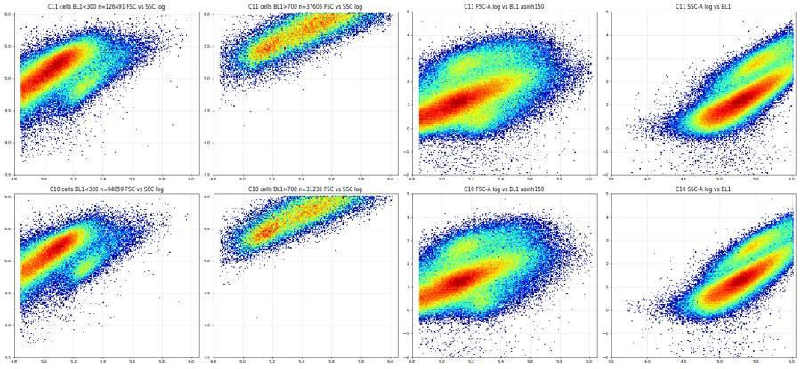
133
thinking
BL1 autofluorescence in C10/C11 comes from high-SSC events, so one BL1 edge will serve both gates, set from C12. I'm now checking where early-apoptotic live cells fall on FSC so the debris cut doesn't remove them.
134
tool call · Bash
cd /task; python3 -I -c "
import pickle, numpy as np
d=pickle.load(open('/tmp/data.pkl','rb'))
edges=[0,25e3,40e3,50e3,60e3,70e3,80e3,100e3,130e3,160e3,200e3,250e3,300e3,500e3,1.1e6]
print('FSC lower:', ' '.join('%6d'%(e/1000) for e in edges[:-1]))
for w in ['C7','C8','C9','C11','B8']:
df=d[w]; f=df['FSC-A'].values; s=df['SSC-A'].values; h=df['SSC-H'].values; b=df['BL1-A'].values; r=df['RL3-A'].values
rr=s/np.maximum(h,1); sing=(rr>0.85)&(rr<1.4)
for name,sel in [('live casp-',sing&(r<300)&(b<400)),('live casp+',sing&(r<300)&(b>=400)),('dead',sing&(r>1000))]:
x,_=np.histogram(f[sel],bins=edges); print('%4s %-11s'%(w,name),' '.join('%6.1f'%v for v in 100*x/sel.sum()), sel.sum())
"
135
tool output
FSC lower: 0 25 40 50 60 70 80 100 130 160 200 250 300 500 C7 live casp- 8.8 42.9 15.4 9.1 5.0 3.0 2.7 1.9 2.4 5.7 2.9 0.2 0.0 0.0 30024 C7 live casp+ 0.2 10.9 15.0 13.9 9.7 8.2 14.8 15.9 7.1 3.0 1.1 0.2 0.1 0.0 17455 C7 dead 1.7 11.1 6.4 5.7 5.4 5.4 11.8 20.8 15.7 10.0 3.5 0.6 0.5 1.4 166534 C8 live casp- 7.7 36.9 11.4 6.8 3.5 1.9 2.0 2.7 6.7 13.5 5.9 0.7 0.1 0.0 10586 C8 live casp+ 0.3 15.8 21.6 19.9 11.7 6.9 8.3 6.6 4.3 2.7 1.4 0.3 0.1 0.0 6038 C8 dead 2.6 15.3 8.0 6.7 5.8 5.5 10.9 17.6 13.2 8.7 3.2 0.5 0.7 1.3 147714 C9 live casp- 7.9 39.5 12.8 7.1 4.2 2.3 2.3 2.3 5.2 10.5 4.9 0.7 0.2 0.0 19418 C9 live casp+ 0.4 11.3 15.5 16.9 13.2 8.8 11.9 10.9 5.3 3.5 1.7 0.5 0.2 0.1 8584 C9 dead 1.9 12.1 7.0 6.1 5.5 5.3 10.8 18.7 15.0 10.3 4.0 0.6 0.8 1.8 129290 C11 live casp- 5.8 31.4 13.5 9.4 6.3 4.3 5.8 5.4 5.4 8.0 3.8 0.8 0.2 0.0 46550 C11 live casp+ 0.6 4.4 6.1 5.9 6.8 7.4 18.9 19.6 11.3 8.3 5.5 2.6 1.5 1.1 541 C11 dead 1.5 10.4 6.5 5.8 5.6 5.5 11.5 18.6 14.6 10.6 4.7 0.8 1.2 2.6 187109 B8 live casp- 10.9 45.8 14.7 8.1 4.4 2.1 1.8 1.0 1.7 5.8 3.4 0.3 0.0 0.0 22068 B8 live casp+ 0.1 14.7 20.6 14.6 9.7 7.2 13.5 11.1 4.6 2.7 1.1 0.2 0.0 0.0 6994 B8 dead 1.7 11.0 6.5 5.8 5.4 5.5 11.9 21.4 16.6 9.8 3.1 0.3 0.4 0.4 269059
137
tool call · Bash
cd /task; cat > scripts/subsets_scatter.py <<'EOF'
import pickle, numpy as np, sys
import matplotlib; matplotlib.use('Agg'); import matplotlib.pyplot as plt
from matplotlib.colors import LogNorm
data=pickle.load(open('/tmp/data.pkl','rb'))
wells=sys.argv[1].split(',')
fig,axes=plt.subplots(len(wells),4,figsize=(26,6*len(wells)))
for i,w in enumerate(wells):
df=data[w]; f=df['FSC-A'].values; s=df['SSC-A'].values; h=df['SSC-H'].values; b=df['BL1-A'].values; r=df['RL3-A'].values
for j,(name,sel) in enumerate([('all',np.ones(len(f),bool)),('RL3<300 BL1<400',(r<300)&(b<400)),('RL3<300 BL1>=400',(r<300)&(b>=400)),('RL3>1000',(r>1000))]):
ax=axes[i,j]; m=sel&(f>0)&(s>0)
ax.hist2d(np.log10(f[m]),np.log10(s[m]),bins=200,range=[[4.2,6.05],[3.3,6.05]],norm=LogNorm(),cmap='jet')
for x in (50e3,60e3,70e3): ax.axvline(np.log10(x),color='k',lw=0.6)
ax.set_title(f'{w} {name} n={m.sum()}'); ax.grid(alpha=.3)
plt.tight_layout(); plt.savefig(sys.argv[2],dpi=45)
EOF
python3 -I scripts/subsets_scatter.py C7,B8,C12 plots/subsets_scatter.png138
tool output
(Bash completed with no output)
139
tool call · Read
{
"file_path": "/task/plots/subsets_scatter.png"
}140
tool output
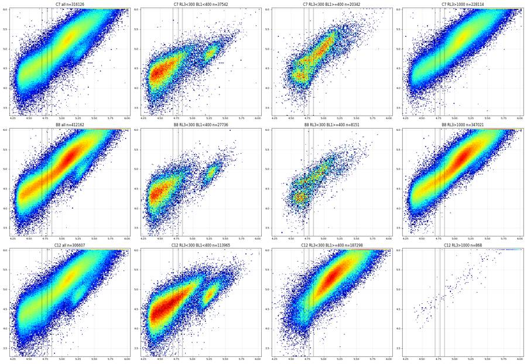
142
tool call · Bash
cd /task; python3 -I -c "
import pickle, numpy as np
from scipy.ndimage import gaussian_filter1d
d=pickle.load(open('/tmp/data.pkl','rb'))
res=[]
for w,df in d.items():
f=df['FSC-A'].values; f=f[f>0]
h,e=np.histogram(np.log10(f),bins=np.arange(4.3,5.2,0.01)); hs=gaussian_filter1d(h.astype(float),3)
pk=np.argmax(hs[:30]); i=pk+np.argmin(hs[pk:60]);
res.append((w, 10**e[pk], 10**e[i], hs[i]/hs[pk]))
for r in res: print('%4s debris-peak %.0f min %.0f min/peak %.2f'%r)
"
143
tool output
A1 debris-peak 35481 min 61660 min/peak 0.92 A2 debris-peak 37154 min 64565 min/peak 0.95 A3 debris-peak 38905 min 61660 min/peak 0.98 A4 debris-peak 34674 min 60256 min/peak 0.97 A5 debris-peak 31623 min 48978 min/peak 0.96 A6 debris-peak 38905 min 58884 min/peak 0.97 A7 debris-peak 33884 min 58884 min/peak 0.95 A8 debris-peak 34674 min 57544 min/peak 0.98 A9 debris-peak 32359 min 38019 min/peak 0.98 A10 debris-peak 38019 min 61660 min/peak 0.92 A11 debris-peak 30200 min 61660 min/peak 0.94 A12 debris-peak 29512 min 57544 min/peak 0.94 B1 debris-peak 30903 min 63096 min/peak 0.92 B2 debris-peak 30903 min 61660 min/peak 0.92 B3 debris-peak 29512 min 51286 min/peak 0.93 B4 debris-peak 30200 min 58884 min/peak 0.90 B5 debris-peak 31623 min 64565 min/peak 0.91 B6 debris-peak 32359 min 60256 min/peak 0.92 B7 debris-peak 29512 min 63096 min/peak 0.87 B8 debris-peak 30903 min 58884 min/peak 0.93 B9 debris-peak 35481 min 60256 min/peak 0.90 B10 debris-peak 32359 min 60256 min/peak 0.90 B11 debris-peak 30903 min 60256 min/peak 0.93 B12 debris-peak 29512 min 46774 min/peak 0.94 C1 debris-peak 38905 min 38905 min/peak 1.00 C2 debris-peak 38905 min 38905 min/peak 1.00 C3 debris-peak 33113 min 53703 min/peak 0.93 C4 debris-peak 30200 min 51286 min/peak 0.97 C5 debris-peak 30903 min 56234 min/peak 0.91 C6 debris-peak 30200 min 48978 min/peak 0.97 C7 debris-peak 38905 min 61660 min/peak 0.95 C8 debris-peak 38019 min 67608 min/peak 0.95 C9 debris-peak 38905 min 67608 min/peak 0.96 C10 debris-peak 38905 min 64565 min/peak 0.97 C11 debris-peak 35481 min 58884 min/peak 0.96 C12 debris-peak 33884 min 61660 min/peak 0.97
145
agent
The FSC-A debris/cell valley sits at ~60k in nearly every well, so I'll use 60k as the Cells left edge instead of 70k. Building the FlowKit gating strategy now and saving a first gates.xml.
146
tool call · Bash
cd /task; python3 -I -c " import flowkit as fk, inspect print(inspect.signature(fk.Dimension.__init__)) print(inspect.signature(fk.gates.RectangleGate.__init__)) print(inspect.signature(fk.gates.PolygonGate.__init__)) print(inspect.signature(fk.GatingStrategy.add_gate)) print(inspect.signature(fk.GatingStrategy.add_transform)) print(inspect.signature(fk.transforms.LogicleTransform.__init__)) print(inspect.signature(fk.export_gatingml)) "
147
tool output
(self, dimension_id, compensation_ref='uncompensated', transformation_ref=None, range_min=None, range_max=None) (self, gate_name, dimensions, use_complement=False) (self, gate_name, dimensions, vertices, use_complement=False) (self, gate, gate_path, sample_id=None) (self, transform_id, transform) (self, param_t, param_w, param_m, param_a) (gating_strategy, file_handle, sample_id=None)
148
tool call · Bash
cd /task; cat > scripts/build_gates.py <<'EOF'
"""Build the single gating strategy for all 36 wells and save /task/outputs/gates.xml."""
import flowkit as fk, numpy as np, json, sys
P = json.load(open('/task/scripts/params.json'))
T, W, M, A = 1048576.0, 1.0, 6.0, 0.0
lgc = fk.transforms.LogicleTransform(param_t=T, param_w=W, param_m=M, param_a=A)
def L(v): # raw -> logicle display units
return float(lgc.apply(np.array([[float(v)]]))[0, 0])
g = fk.GatingStrategy()
g.add_transform('logicle_fl', lgc)
U = 'uncompensated'
# 1. Cells: polygon on linear FSC-A x SSC-A
cells = fk.gates.PolygonGate('Cells',
[fk.Dimension('FSC-A', compensation_ref=U), fk.Dimension('SSC-A', compensation_ref=U)],
[tuple(map(float, v)) for v in P['cells_vertices']])
g.add_gate(cells, gate_path=('root',))
# 2. Single_Cells: polygon on linear SSC-H x SSC-A
sing = fk.gates.PolygonGate('Single_Cells',
[fk.Dimension('SSC-H', compensation_ref=U), fk.Dimension('SSC-A', compensation_ref=U)],
[tuple(map(float, v)) for v in P['singlet_vertices']])
g.add_gate(sing, gate_path=('root', 'Cells'))
lo, hi = L(-1e6), L(1.2e6) # beyond the data range on both logicle axes
bl1 = P['bl1_pos']; rl3_live = P['rl3_live_max']; rl3_bright = P['rl3_bright_min']
# 3. Live: rectangle BL1-A x RL3-A, full BL1 range, RL3 below the Zombie-negative upper edge
live = fk.gates.RectangleGate('Live', [
fk.Dimension('BL1-A', compensation_ref=U, transformation_ref='logicle_fl', range_min=lo, range_max=hi),
fk.Dimension('RL3-A', compensation_ref=U, transformation_ref='logicle_fl', range_min=lo, range_max=L(rl3_live))])
g.add_gate(live, gate_path=('root', 'Cells', 'Single_Cells'))
# 4. Caspase_pos: rectangle inside Live, BL1 above the CellEvent boundary, RL3 spanning Live's range
casp = fk.gates.RectangleGate('Caspase_pos', [
fk.Dimension('BL1-A', compensation_ref=U, transformation_ref='logicle_fl', range_min=L(bl1), range_max=hi),
fk.Dimension('RL3-A', compensation_ref=U, transformation_ref='logicle_fl', range_min=lo, range_max=L(rl3_live))])
g.add_gate(casp, gate_path=('root', 'Cells', 'Single_Cells', 'Live'))
# 5. Late_apoptosis: polygon, CellEvent-positive AND Zombie-bright (sibling of Live)
late_v = [(L(bl1), L(rl3_bright)), (hi, L(rl3_bright)), (hi, hi), (L(bl1), hi)]
late = fk.gates.PolygonGate('Late_apoptosis', [
fk.Dimension('BL1-A', compensation_ref=U, transformation_ref='logicle_fl'),
fk.Dimension('RL3-A', compensation_ref=U, transformation_ref='logicle_fl')], late_v)
g.add_gate(late, gate_path=('root', 'Cells', 'Single_Cells'))
out = sys.argv[1] if len(sys.argv) > 1 else '/task/outputs/gates.xml'
with open(out, 'wb') as fh:
fk.export_gatingml(g, fh)
g2 = fk.parse_gating_xml(out)
print('saved', out); print(g2.get_gate_hierarchy(output='ascii'))
EOF
cat > scripts/params.json <<'EOF'
{
"cells_vertices": [[60000, 5000], [1040000, 5000], [1040000, 1040000], [60000, 1040000]],
"singlet_vertices": [[0, 0], [100000, 85000], [250000, 237500], [500000, 515000], [800000, 864000], [1100000, 1210000],
[1100000, 1300000], [620000, 1300000], [500000, 825000], [400000, 620000], [300000, 435000],
[200000, 276000], [100000, 135000], [20000, 29000], [0, 8000]],
"bl1_pos": 400,
"rl3_live_max": 300,
"rl3_bright_min": 1000
}
EOF
python3 -I scripts/build_gates.py149
tool output
saved /task/outputs/gates.xml
root
╰── Cells
╰── Single_Cells
├── Live
│ ╰── Caspase_pos
╰── Late_apoptosis151
tool call · Bash
cd /task; cat > scripts/count.py <<'EOF'
"""Apply saved gates.xml to all 36 files; write counts.csv."""
import flowkit as fk, pandas as pd, numpy as np, os, sys
lay = pd.read_csv('/task/inputs/plate_layout.csv')
g = fk.parse_gating_xml('/task/outputs/gates.xml')
POPS = [('Cells','All_events'),('Single_Cells','Cells'),('Live','Single_Cells'),('Caspase_pos','Live'),('Late_apoptosis','Single_Cells')]
rows=[]
for _,r in lay.iterrows():
s = fk.Sample(os.path.join('/task/inputs/raw', r.file))
res = g.gate_sample(s)
rep = res.report.set_index('gate_name')
cnt = {'All_events': s.event_count}
for pop,_ in POPS: cnt[pop] = int(rep.loc[pop,'count'])
for pop,par in POPS:
pc = cnt[par]
rows.append(dict(file=r.file, well=r.well, population=pop, count=cnt[pop], parent_population=par,
pct_of_parent=round(100.0*cnt[pop]/pc, 4) if pc>0 else 0.0))
out = pd.DataFrame(rows)
out.to_csv(sys.argv[1] if len(sys.argv)>1 else '/task/outputs/counts.csv', index=False)
w = out.pivot(index='well', columns='population', values='pct_of_parent').reindex(lay.well)[[p for p,_ in POPS]]
c = out.pivot(index='well', columns='population', values='count').reindex(lay.well)[[p for p,_ in POPS]]
pd.set_option('display.width',200)
print(pd.concat([c.add_prefix('n_'), w.round(2).add_prefix('%')],axis=1).to_string())
EOF
python3 -I -c "
import flowkit as fk
g=fk.parse_gating_xml('/task/outputs/gates.xml'); s=fk.Sample('/task/inputs/raw/Caspase_KO_RNAswap-rep2_caspase_Group_A1.fcs')
r=g.gate_sample(s); print(r.report)"
152
tool output
sample gate_path ... relative_percent level 0 A1.fcs (root,) ... 67.652016 0 1 A1.fcs (root, Cells) ... 84.353687 1 3 A1.fcs (root, Cells, Single_Cells) ... 81.828086 2 2 A1.fcs (root, Cells, Single_Cells) ... 1.277787 2 4 A1.fcs (root, Cells, Single_Cells, Live) ... 43.231114 3 [5 rows x 10 columns]
154
tool call · Bash
cd /task; time python3 -I scripts/count.py
155
tool output
population n_Cells n_Single_Cells n_Live n_Caspase_pos n_Late_apoptosis %Cells %Single_Cells %Live %Caspase_pos %Late_apoptosis well A1 124042 104634 1337 578 85620 67.65 84.35 1.28 43.23 81.83 A2 149514 120732 4927 1381 95628 67.42 80.75 4.08 28.03 79.21 A3 155890 131034 4089 1834 106892 70.05 84.06 3.12 44.85 81.58 A4 113790 96332 2765 859 79350 70.92 84.66 2.87 31.07 82.37 A5 116914 100197 4665 1782 80216 68.81 85.70 4.66 38.20 80.06 A6 162078 135791 8800 2309 108830 70.21 83.78 6.48 26.24 80.15 A7 190423 150445 8851 2102 118642 67.35 79.01 5.88 23.75 78.86 A8 162940 132594 11818 3601 101969 68.77 81.38 8.91 30.47 76.90 A9 169616 140453 7227 1984 113718 70.14 82.81 5.15 27.45 80.97 A10 228757 184472 6375 1686 150951 68.12 80.64 3.46 26.45 81.83 A11 150368 125934 7262 2480 100673 65.79 83.75 5.77 34.15 79.94 A12 219759 177924 8174 2630 144183 66.42 80.96 4.59 32.18 81.04 B1 169378 137429 10499 2954 104883 66.46 81.14 7.64 28.14 76.32 B2 210447 164978 17556 7132 122795 65.88 78.39 10.64 40.62 74.43 B3 187616 150382 14003 4734 116016 68.11 80.15 9.31 33.81 77.15 B4 145153 120827 4190 1461 96584 66.02 83.24 3.47 34.87 79.94 B5 148287 124679 6300 2102 98513 65.86 84.08 5.05 33.37 79.01 B6 244062 193718 11073 4529 154810 66.14 79.37 5.72 40.90 79.92 B7 126698 108354 3497 1295 89514 67.77 85.52 3.23 37.03 82.61 B8 277795 219453 7877 3433 179072 67.37 79.00 3.59 43.58 81.60 B9 147883 123684 4303 1567 100999 67.40 83.64 3.48 36.42 81.66 B10 124777 107482 3299 1117 87104 66.56 86.14 3.07 33.86 81.04 B11 185980 155447 6271 2681 127539 68.52 83.58 4.03 42.75 82.05 B12 195855 163844 5984 2798 135236 68.26 83.66 3.65 46.76 82.54 C1 176212 135736 2330 589 108824 70.26 77.03 1.72 25.28 80.17 C2 216186 169838 5865 2327 140515 70.78 78.56 3.45 39.68 82.73 C3 283993 219677 11252 5292 175452 67.81 77.35 5.12 47.03 79.87 C4 158973 135344 1281 671 114232 69.08 85.14 0.95 52.38 84.40 C5 143737 122873 1461 775 104514 69.51 85.48 1.19 53.05 85.06 C6 130229 113627 919 533 98485 68.62 87.25 0.81 58.00 86.67 C7 207054 154605 17381 10343 111621 65.14 74.67 11.24 59.51 72.20 C8 135888 108157 6399 2521 84610 63.21 79.59 5.92 39.40 78.23 C9 143139 110822 10945 4706 82413 64.36 77.42 9.88 43.00 74.37 C10 184963 142727 142503 36178 16 66.87 77.17 99.84 25.39 0.01 C11 233594 168929 18576 433 37063 64.16 72.32 11.00 2.33 21.94 C12 202849 156184 155900 127875 60 65.98 77.00 99.82 82.02 0.04 real 0m9.721s user 0m9.845s sys 0m0.544s
157
agent
First full pass done (counts.csv written). Now overlaying the gates on the data to check placement visually.
158
tool call · Bash
cd /task; cat > scripts/overlay.py <<'EOF'
import flowkit as fk, pandas as pd, numpy as np, os, sys, json
import matplotlib; matplotlib.use('Agg'); import matplotlib.pyplot as plt
from matplotlib.colors import LogNorm
P=json.load(open('/task/scripts/params.json'))
lay = pd.read_csv('/task/inputs/plate_layout.csv').set_index('well')
g = fk.parse_gating_xml('/task/outputs/gates.xml')
wells=sys.argv[1].split(','); cof=150
def ash(v): return np.arcsinh(np.asarray(v)/cof)
tk=np.array([-5000,-1000,-300,0,300,1000,3000,1e4,1e5,1e6])
fig,axes=plt.subplots(len(wells),3,figsize=(21,6.3*len(wells)))
for i,w in enumerate(wells):
s=fk.Sample(os.path.join('/task/inputs/raw',lay.loc[w,'file'])); df=pd.DataFrame(s.get_events(source='raw'),columns=s.pnn_labels)
res=g.gate_sample(s)
cm=res.get_gate_membership('Cells'); sm=res.get_gate_membership('Single_Cells')
ax=axes[i,0]; ax.hist2d(df['FSC-A'],df['SSC-A'],bins=300,range=[[-2e4,1.06e6],[-2e4,1.06e6]],norm=LogNorm(),cmap='jet')
v=np.array(P['cells_vertices']+[P['cells_vertices'][0]]); ax.plot(v[:,0],v[:,1],'k-',lw=1.5); ax.set_title(f'{w} FSC-A x SSC-A Cells {cm.mean()*100:.1f}%')
ax=axes[i,1]; d=df[cm]; ax.hist2d(d['SSC-H'],d['SSC-A'],bins=300,range=[[0,1.06e6],[0,1.06e6]],norm=LogNorm(),cmap='jet')
v=np.array(P['singlet_vertices']+[P['singlet_vertices'][0]]); ax.plot(v[:,0],v[:,1],'k-',lw=1.5); ax.set_xlim(0,1.06e6); ax.set_ylim(0,1.06e6)
ax.set_title(f'{w} Cells: SSC-H x SSC-A Singlets {sm.sum()/cm.sum()*100:.1f}%')
ax=axes[i,2]; d=df[sm]; ax.hist2d(ash(d['BL1-A']),ash(d['RL3-A']),bins=300,range=[[-4,10],[-5,10]],norm=LogNorm(),cmap='jet')
b=ash(P['bl1_pos']); r1=ash(P['rl3_live_max']); r2=ash(P['rl3_bright_min'])
ax.plot([-4,10],[r1,r1],'k-',lw=1.5); ax.plot([b,b],[-5,r1],'m-',lw=1.5); ax.plot([b,b,10],[10,r2,r2],'r-',lw=1.5)
for a in (ax.set_xticks,ax.set_yticks): a(ash(tk))
ax.set_xticklabels([str(int(t)) for t in tk],rotation=45); ax.set_yticklabels([str(int(t)) for t in tk]); ax.grid(alpha=.3)
n=lambda x: res.get_gate_membership(x).sum()
ax.set_title(f"{w} singlets BL1 x RL3: Live {n('Live')} Casp+ {n('Caspase_pos')} Late {n('Late_apoptosis')}")
plt.tight_layout(); plt.savefig(sys.argv[2],dpi=50)
EOF
python3 -I scripts/overlay.py A1,C7,C11,C12 plots/overlay1.png159
tool output
(Bash completed with no output)
160
tool call · Read
{
"file_path": "/task/plots/overlay1.png"
}161
tool output
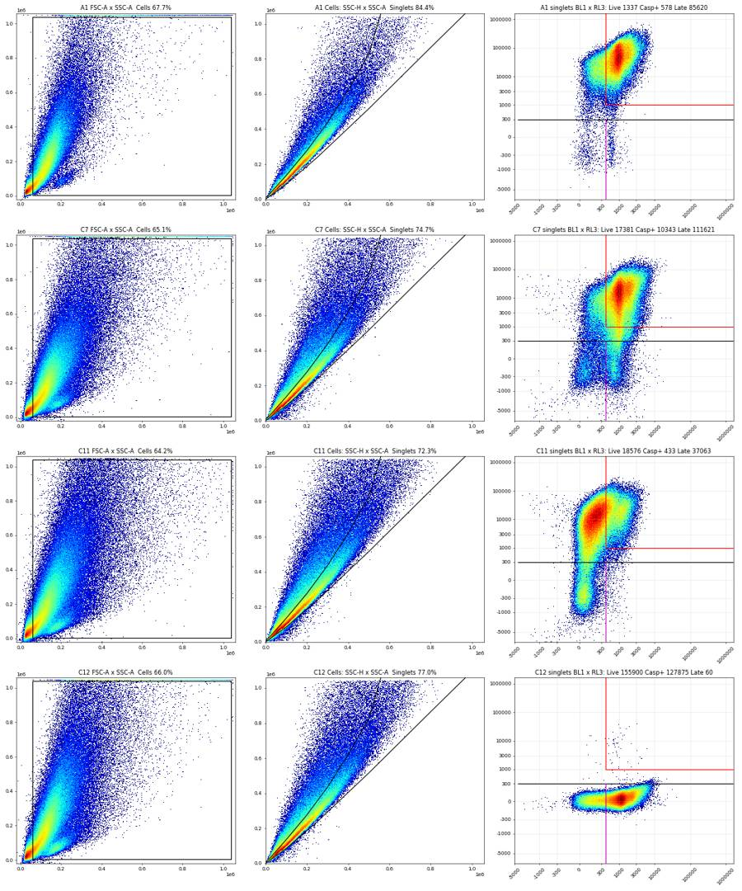
163
tool call · Bash
cd /task; python3 -I -c "
import pickle, numpy as np, sys
sys.path.insert(0,'/task/scripts')
import flowkit as fk
d=pickle.load(open('/tmp/data.pkl','rb'))
g=fk.parse_gating_xml('/task/outputs/gates.xml')
import pandas as pd
lay=pd.read_csv('/task/inputs/plate_layout.csv').set_index('well')
S={}
for w in ['C10','C11','C12','C7','C8','C9','B8']:
s=fk.Sample('/task/inputs/raw/'+lay.loc[w,'file']); r=g.gate_sample(s)
S[w]=(d[w], r.get_gate_membership('Single_Cells'))
# crossing of C10 and C12 BL1 density (singlets), log-binned
b10=S['C10'][0]['BL1-A'].values[S['C10'][1]]; b12=S['C12'][0]['BL1-A'].values[S['C12'][1]]
bins=np.logspace(1.5,3.6,60); h10,_=np.histogram(b10,bins=bins); h12,_=np.histogram(b12,bins=bins)
h10=h10/len(b10); h12=h12/len(b12)
cross=[bins[i] for i in range(len(h10)-1) if h10[i]>h12[i] and h10[i+1]<=h12[i+1]]
print('C10/C12 BL1 crossing (singlets):', [round(c) for c in cross])
print('thr C11casp%live C10casp%live C12casp%live C7casp% C8casp% C9casp% | C11late%sing C7late% C8late% C9late% B8late%')
for thr in [250,300,350,400,450,500,600,700,1000]:
out=[]
for w in ['C11','C10','C12','C7','C8','C9']:
df,sm=S[w]; b=df['BL1-A'].values; r=df['RL3-A'].values; live=sm&(r<300)
out.append(100*np.sum(live&(b>=thr))/live.sum())
out2=[]
for w in ['C11','C7','C8','C9','B8']:
df,sm=S[w]; b=df['BL1-A'].values; r=df['RL3-A'].values
out2.append(100*np.sum(sm&(b>=thr)&(r>=1000))/sm.sum())
print('%4d '%thr+' '.join('%11.1f'%x for x in out)+' | '+' '.join('%8.1f'%x for x in out2))
"
164
tool output
C10/C12 BL1 crossing (singlets): [473] thr C11casp%live C10casp%live C12casp%live C7casp% C8casp% C9casp% | C11late%sing C7late% C8late% C9late% B8late% 250 4.6 45.9 87.8 68.0 44.1 49.8 | 37.9 76.3 84.6 79.3 87.3 300 3.6 36.9 85.9 65.4 42.3 47.3 | 30.9 75.1 82.5 77.7 85.5 350 2.8 30.2 84.0 62.7 40.7 45.2 | 25.7 73.7 80.3 76.0 83.6 400 2.3 25.4 82.0 59.5 39.4 43.0 | 21.9 72.2 78.2 74.4 81.6 450 2.0 21.9 80.1 56.1 37.7 40.6 | 19.2 70.6 75.9 72.6 79.5 500 1.7 19.4 78.1 52.4 36.3 38.3 | 17.2 68.8 73.5 70.7 77.2 600 1.2 15.7 74.1 44.8 33.1 33.8 | 14.1 65.1 68.5 66.8 72.4 700 0.9 13.2 69.8 36.1 27.7 27.8 | 12.0 60.9 62.8 62.9 66.4 1000 0.5 8.2 53.3 16.4 12.4 12.7 | 7.8 42.6 41.6 46.8 40.1
166
tool call · Bash
cd /task; python3 -I -c "
import pickle, numpy as np, pandas as pd, flowkit as fk
d=pickle.load(open('/tmp/data.pkl','rb'))
g=fk.parse_gating_xml('/task/outputs/gates.xml'); lay=pd.read_csv('/task/inputs/plate_layout.csv').set_index('well')
for w in ['C10','C12','C11','C7','C8','C9','A1','B8']:
s=fk.Sample('/task/inputs/raw/'+lay.loc[w,'file']); sm=g.gate_sample(s).get_gate_membership('Single_Cells')
r=d[w]['RL3-A'].values[sm]; b=d[w]['BL1-A'].values[sm]
print(w, 'RL3 pct 50,90,99,99.5,99.9: ', np.round(np.percentile(r,[50,90,99,99.5,99.9])), ' Live%% <0 %.1f <100 %.1f <300 %.1f <500 %.1f | Late%% (BL1>=450) RL3>=300 %.1f >=1000 %.1f >=3000 %.1f'%tuple([100*np.mean(r<t) for t in (0,100,300,500)]+[100*np.mean((b>=450)&(r>=t)) for t in (300,1000,3000)]))
"
167
tool output
C10 RL3 pct 50,90,99,99.5,99.9: [ 29. 108. 203. 236. 335.] Live% <0 29.4 <100 87.7 <300 99.8 <500 100.0 | Late% (BL1>=450) RL3>=300 0.1 >=1000 0.0 >=3000 0.0 C12 RL3 pct 50,90,99,99.5,99.9: [ 27. 105. 202. 236. 359.] Live% <0 30.3 <100 88.6 <300 99.8 <500 99.9 | Late% (BL1>=450) RL3>=300 0.2 >=1000 0.0 >=3000 0.0 C11 RL3 pct 50,90,99,99.5,99.9: [ 8300. 36071. 91598. 112029. 160395.] Live% <0 7.4 <100 8.7 <300 11.0 <500 13.0 | Late% (BL1>=450) RL3>=300 19.6 >=1000 19.2 >=3000 18.0 C7 RL3 pct 50,90,99,99.5,99.9: [ 8084. 36094. 89746. 108003. 157087.] Live% <0 6.2 <100 8.0 <300 11.2 <500 14.0 | Late% (BL1>=450) RL3>=300 76.8 >=1000 70.6 >=3000 61.0 C8 RL3 pct 50,90,99,99.5,99.9: [ 29837. 103931. 240430. 289907. 410343.] Live% <0 4.6 <100 5.1 <300 5.9 <500 6.6 | Late% (BL1>=450) RL3>=300 77.0 >=1000 75.9 >=3000 73.0 C9 RL3 pct 50,90,99,99.5,99.9: [ 11849. 48776. 116559. 142531. 206162.] Live% <0 6.3 <100 7.7 <300 9.9 <500 11.6 | Late% (BL1>=450) RL3>=300 75.9 >=1000 72.6 >=3000 65.8 A1 RL3 pct 50,90,99,99.5,99.9: [ 35745. 113563. 237028. 280695. 370430.] Live% <0 0.9 <100 1.0 <300 1.3 <500 1.5 | Late% (BL1>=450) RL3>=300 79.4 >=1000 79.1 >=3000 78.1 B8 RL3 pct 50,90,99,99.5,99.9: [ 11896. 42557. 103324. 125420. 178443.] Live% <0 2.1 <100 2.6 <300 3.6 <500 4.5 | Late% (BL1>=450) RL3>=300 81.4 >=1000 79.5 >=3000 73.5
169
thinking
Thresholds are set (Live below RL3-A 300, Late_apoptosis at RL3-A 1000 or above, BL1-A at 450); I'm updating the gates and rechecking all 36 wells.
170
tool call · Bash
cd /task; cat > scripts/params.json <<'EOF'
{
"cells_vertices": [[60000, 5000], [1040000, 5000], [1040000, 1040000], [60000, 1040000]],
"singlet_vertices": [[0, 0], [100000, 85000], [250000, 237500], [500000, 515000], [800000, 864000], [1100000, 1210000],
[1100000, 1300000], [650000, 1300000], [500000, 775000], [400000, 592000], [300000, 426000],
[200000, 276000], [100000, 135000], [20000, 29000], [0, 8000]],
"bl1_pos": 450,
"rl3_live_max": 300,
"rl3_bright_min": 1000
}
EOF
python3 -I scripts/build_gates.py >/dev/null && python3 -I scripts/count.py > /tmp/counts_v2.txt && cat /tmp/counts_v2.txt
cat > scripts/fl_overlay_all.py <<'EOF'
import flowkit as fk, pandas as pd, numpy as np, os, sys, json
import matplotlib; matplotlib.use('Agg'); import matplotlib.pyplot as plt
from matplotlib.colors import LogNorm
P=json.load(open('/task/scripts/params.json'))
lay = pd.read_csv('/task/inputs/plate_layout.csv')
g = fk.parse_gating_xml('/task/outputs/gates.xml'); cof=150
def ash(v): return np.arcsinh(np.asarray(v)/cof)
tk=np.array([-1000,0,300,1000,1e4,1e5])
fig,axes=plt.subplots(6,6,figsize=(24,22))
for ax,(_,row) in zip(axes.flat,lay.iterrows()):
s=fk.Sample(os.path.join('/task/inputs/raw',row.file)); df=pd.DataFrame(s.get_events(source='raw'),columns=s.pnn_labels)
res=g.gate_sample(s); sm=res.get_gate_membership('Single_Cells'); d=df[sm]
ax.hist2d(ash(d['BL1-A']),ash(d['RL3-A']),bins=200,range=[[-4,9],[-5,10]],norm=LogNorm(),cmap='jet')
b=ash(P['bl1_pos']); r1=ash(P['rl3_live_max']); r2=ash(P['rl3_bright_min'])
ax.plot([-4,9],[r1,r1],'k-',lw=1); ax.plot([b,b],[-5,r1],'m-',lw=1); ax.plot([b,b,9],[10,r2,r2],'r-',lw=1)
for a in (ax.set_xticks,ax.set_yticks): a(ash(tk))
ax.set_xticklabels([str(int(t)) for t in tk],fontsize=7); ax.set_yticklabels([str(int(t)) for t in tk],fontsize=7)
n=lambda x: res.get_gate_membership(x).sum()
ax.set_title(f"{row.well} {row.construct} L{n('Live')} C{n('Caspase_pos')} La{n('Late_apoptosis')}",fontsize=10)
plt.tight_layout(); plt.savefig('/task/plots/fl_overlay_all.png',dpi=45)
EOF
python3 -I scripts/fl_overlay_all.py171
tool output
population n_Cells n_Single_Cells n_Live n_Caspase_pos n_Late_apoptosis %Cells %Single_Cells %Live %Caspase_pos %Late_apoptosis well A1 124042 103109 1336 545 81261 67.65 83.12 1.30 40.79 78.81 A2 149514 118941 4924 1272 90877 67.42 79.55 4.14 25.83 76.41 A3 155890 129505 4087 1635 102263 70.05 83.07 3.16 40.00 78.96 A4 113790 94948 2764 792 75737 70.92 83.44 2.91 28.65 79.77 A5 116914 98752 4661 1612 76568 68.81 84.47 4.72 34.58 77.54 A6 162078 134208 8799 2176 104449 70.21 82.80 6.56 24.73 77.83 A7 190423 148375 8844 1972 113399 67.35 77.92 5.96 22.30 76.43 A8 162940 130512 11806 3356 97681 68.77 80.10 9.05 28.43 74.84 A9 169616 138383 7225 1862 108697 70.14 81.59 5.22 25.77 78.55 A10 228757 181967 6375 1607 144417 68.12 79.55 3.50 25.21 79.36 A11 150368 124162 7257 2316 96466 65.79 82.57 5.84 31.91 77.69 A12 219759 175517 8170 2472 137974 66.42 79.87 4.65 30.26 78.61 B1 169378 135500 10496 2741 100239 66.46 80.00 7.75 26.11 73.98 B2 210447 162639 17545 6635 117886 65.88 77.28 10.79 37.82 72.48 B3 187616 148163 14000 4404 111354 68.11 78.97 9.45 31.46 75.16 B4 145153 119277 4189 1377 91987 66.02 82.17 3.51 32.87 77.12 B5 148287 122840 6298 1952 94188 65.86 82.84 5.13 30.99 76.68 B6 244062 191094 11067 4217 148523 66.14 78.30 5.79 38.10 77.72 B7 126698 107225 3497 1211 86032 67.77 84.63 3.26 34.63 80.24 B8 277795 216701 7876 3154 171679 67.37 78.01 3.63 40.05 79.22 B9 147883 122103 4301 1420 96472 67.40 82.57 3.52 33.02 79.01 B10 124777 106193 3299 1036 83171 66.56 85.11 3.11 31.40 78.32 B11 185980 153383 6269 2453 122490 68.52 82.47 4.09 39.13 79.86 B12 195855 161793 5980 2577 129684 68.26 82.61 3.70 43.09 80.15 C1 176212 133913 2321 484 100662 70.26 76.00 1.73 20.85 75.17 C2 216186 167404 5855 2067 133543 70.78 77.44 3.50 35.30 79.77 C3 283993 216453 11249 4760 167810 67.81 76.22 5.20 42.31 77.53 C4 158973 133647 1280 577 108695 69.08 84.07 0.96 45.08 81.33 C5 143737 121293 1460 664 99871 69.51 84.39 1.20 45.48 82.34 C6 130229 112228 919 462 94004 68.62 86.18 0.82 50.27 83.76 C7 207054 152790 17369 9739 107340 65.14 73.79 11.37 56.07 70.25 C8 135888 106813 6396 2407 80776 63.21 78.60 5.99 37.63 75.62 C9 143139 109344 10942 4443 78991 64.36 76.39 10.01 40.60 72.24 C10 184963 140762 140565 29700 11 66.87 76.10 99.86 21.13 0.01 C11 233594 166260 18565 371 30483 64.16 71.17 11.17 2.00 18.33 C12 202849 153985 153732 122671 56 65.98 75.91 99.84 79.80 0.04
172
tool call · Read
{
"file_path": "/task/plots/fl_overlay_all.png"
}173
tool output
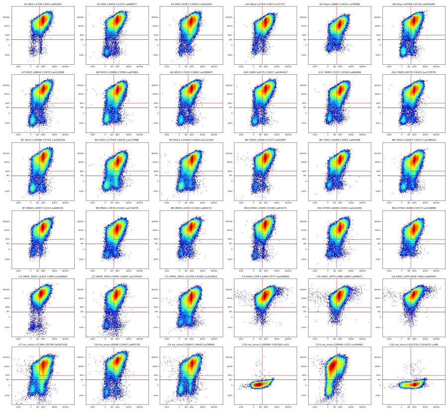
175
agent
Gate placement looks consistent across the plate. Now finishing the QC side: run-dry tails at the end of acquisition, and whether the flow disturbances actually change the readout.
176
tool call · Bash
cd /task; cat > scripts/qc_time.py <<'EOF'
import pickle, numpy as np, pandas as pd, flowkit as fk, os
d=pickle.load(open('/tmp/data.pkl','rb'))
lay=pd.read_csv('/task/inputs/plate_layout.csv').set_index('well')
g=fk.parse_gating_xml('/task/outputs/gates.xml')
rows=[]
for w,df in d.items():
t=df['Time'].values; T=t.max()
h,e=np.histogram(t,bins=np.arange(0,41.0+1e-9,0.1)); med=np.median(h)
low=h<0.2*med
# tail: last time rate >=50% median
ok=np.where(h>=0.5*med)[0]; t_last_ok=e[ok[-1]+1]
# start: first time rate >=50% median
t_first_ok=e[ok[0]]
s=fk.Sample(os.path.join('/task/inputs/raw',lay.loc[w,'file'])); res=g.gate_sample(s)
sm=res.get_gate_membership('Single_Cells'); lv=res.get_gate_membership('Live'); la=res.get_gate_membership('Late_apoptosis'); cp=res.get_gate_membership('Caspase_pos')
# stable vs disturbed time: event in a 0.1-s bin with rate within 50-150% of median
idx=np.clip(np.digitize(t,e)-1,0,len(h)-1); stable=(h[idx]>=0.5*med)&(h[idx]<=1.5*med)
def pct(a,b,m): return 100*np.sum(a&m)/max(np.sum(b&m),1)
rows.append(dict(well=w, n=len(t), t_first_ok=round(t_first_ok,1), t_last_ok=round(t_last_ok,1), last1s_rel=round(np.mean(h[-10:])/med,2),
low_bins=int(low.sum()), pct_ev_disturbed=round(100*np.mean(~stable),1),
live_st=round(pct(lv,sm,stable),2), live_dis=round(pct(lv,sm,~stable),2), casp_st=round(pct(cp,lv,stable),1), casp_dis=round(pct(cp,lv,~stable),1),
late_st=round(pct(la,sm,stable),1), late_dis=round(pct(la,sm,~stable),1), n_dis_sing=int(np.sum(sm&~stable))))
out=pd.DataFrame(rows); pd.set_option('display.width',250); print(out.to_string())
out.to_csv('/task/scripts/qc_time.csv',index=False)
EOF
python3 -I scripts/qc_time.py177
tool output
well n t_first_ok t_last_ok last1s_rel low_bins pct_ev_disturbed live_st live_dis casp_st casp_dis late_st late_dis n_dis_sing 0 A1 183353 0.0 40.9 0.94 1 0.0 1.30 0.00 40.8 0.0 78.8 0.0 0 1 A2 221770 0.0 40.9 0.74 1 0.6 4.14 4.38 25.9 10.7 76.4 73.1 640 2 A3 222545 0.0 41.0 0.75 1 1.4 3.15 3.82 39.9 45.6 79.0 77.1 1778 3 A4 160440 0.0 40.4 0.47 0 2.5 2.91 2.98 28.6 29.0 79.8 78.3 2313 4 A5 169911 0.0 40.9 0.80 3 1.0 4.73 4.01 34.5 48.6 77.6 75.7 922 5 A6 230857 0.0 40.7 0.53 1 0.5 6.56 5.64 24.8 18.2 77.8 75.6 585 6 A7 282723 0.0 40.6 0.59 6 5.6 5.96 6.05 22.3 22.2 76.4 76.2 8262 7 A8 236938 0.0 40.9 0.83 2 1.2 9.05 8.95 28.4 28.2 74.8 75.7 1463 8 A9 241833 0.0 40.9 0.52 4 1.9 5.23 4.51 25.6 34.2 78.6 78.4 2658 9 A10 335810 0.0 40.5 0.37 4 1.0 3.51 2.81 25.3 16.0 79.4 78.6 1777 10 A11 228556 0.0 41.0 0.93 4 1.7 5.84 5.87 31.9 34.2 77.7 79.0 2045 11 A12 330844 0.0 40.4 0.44 1 1.6 4.67 3.93 30.2 37.0 78.6 76.9 2748 12 B1 254845 0.0 39.9 0.29 3 1.8 7.76 6.83 26.1 30.3 74.0 69.9 2226 13 B2 319449 0.0 40.9 0.83 9 4.2 10.76 11.37 37.8 37.5 72.4 73.4 6612 14 B3 275473 0.0 40.3 0.33 6 5.9 9.45 9.47 31.4 31.6 75.2 75.1 8385 15 B4 219859 0.0 40.9 0.87 2 4.4 3.49 4.08 32.9 32.5 77.1 76.6 5128 16 B5 225148 0.0 40.4 0.48 2 1.2 5.15 3.46 31.0 34.0 76.7 75.7 1444 17 B6 369018 0.0 40.9 0.92 4 1.1 5.79 5.81 38.1 36.2 77.7 77.6 1995 18 B7 186946 0.0 41.0 0.92 0 0.5 3.26 3.82 34.6 31.6 80.3 75.5 497 19 B8 412353 0.0 40.6 0.67 4 4.0 3.61 4.14 40.1 38.4 79.3 78.3 8869 20 B9 219409 0.0 39.6 0.21 4 1.4 3.52 3.53 33.0 32.7 79.1 75.2 1558 21 B10 187472 0.0 41.0 1.07 4 1.3 3.10 3.41 31.4 29.5 78.3 77.0 1290 22 B11 271438 0.0 39.4 0.20 3 1.6 4.10 3.53 39.2 30.3 79.9 73.9 2151 23 B12 286933 0.0 40.8 0.85 2 0.2 3.70 3.52 43.1 25.0 80.2 75.3 227 24 C1 250794 5.9 40.6 0.28 122 83.5 1.41 1.79 27.3 20.0 70.5 76.0 114206 25 C2 305451 5.6 40.9 0.76 79 20.5 3.31 4.27 33.7 40.4 79.3 81.8 32222 26 C3 418796 0.0 40.7 0.76 5 1.5 5.20 5.29 42.3 42.5 77.5 77.4 3156 27 C4 230134 0.0 41.0 0.85 0 0.0 0.96 0.00 45.1 0.0 81.3 0.0 0 28 C5 206789 0.0 39.4 0.13 7 0.9 1.20 1.21 45.4 54.5 82.4 71.9 912 29 C6 189779 0.0 39.4 0.16 5 1.1 0.82 0.68 50.1 71.4 83.8 74.9 1036 30 C7 317865 0.0 40.9 0.81 23 15.8 11.13 12.76 55.6 58.3 70.2 70.4 22539 31 C8 214991 0.0 38.4 0.00 23 10.2 5.97 6.19 37.5 38.7 75.5 76.4 10320 32 C9 222410 0.0 40.9 0.86 18 15.5 9.94 10.40 40.5 41.2 72.2 72.2 16064 33 C10 276619 0.0 40.8 0.79 23 14.8 99.87 99.80 21.0 22.0 0.0 0.0 20318 34 C11 364071 0.0 40.9 0.86 27 14.5 11.12 11.48 1.9 2.6 18.2 19.0 22860 35 C12 307442 0.0 40.9 0.75 5 4.1 99.84 99.84 79.8 79.5 0.0 0.1 6201
179
tool call · Bash
cd /task; python3 -I -c "
import pandas as pd, numpy as np
c=pd.read_csv('/task/outputs/counts.csv'); lay=pd.read_csv('/task/inputs/plate_layout.csv')
p=c.pivot(index='well',columns='population',values='pct_of_parent')
p=p.join(lay.set_index('well')[['construct']])
for con,grp in p.groupby('construct',sort=False):
g=grp.drop(columns='construct')
print(con, '\n', g.round(2).to_string(), '\n mean', g.mean().round(2).to_dict())
" | head -120180
tool output
RSV
Caspase_pos Cells Late_apoptosis Live Single_Cells
well
A1 40.79 67.65 78.81 1.30 83.12
A2 25.83 67.42 76.41 4.14 79.55
A3 40.00 70.05 78.96 3.16 83.07
mean {'Caspase_pos': 35.54, 'Cells': 68.37, 'Late_apoptosis': 78.06, 'Live': 2.86, 'Single_Cells': 81.92}
3945
Caspase_pos Cells Late_apoptosis Live Single_Cells
well
A10 25.21 68.12 79.36 3.50 79.55
A11 31.91 65.79 77.69 5.84 82.57
A12 30.26 66.42 78.61 4.65 79.87
mean {'Caspase_pos': 29.13, 'Cells': 66.78, 'Late_apoptosis': 78.56, 'Live': 4.67, 'Single_Cells': 80.66}
hSyn
Caspase_pos Cells Late_apoptosis Live Single_Cells
well
A4 28.65 70.92 79.77 2.91 83.44
A5 34.58 68.81 77.54 4.72 84.47
A6 24.73 70.21 77.83 6.56 82.80
mean {'Caspase_pos': 29.32, 'Cells': 69.98, 'Late_apoptosis': 78.38, 'Live': 4.73, 'Single_Cells': 83.57}
9523
Caspase_pos Cells Late_apoptosis Live Single_Cells
well
A7 22.30 67.35 76.43 5.96 77.92
A8 28.43 68.77 74.84 9.05 80.10
A9 25.77 70.14 78.55 5.22 81.59
mean {'Caspase_pos': 25.5, 'Cells': 68.75, 'Late_apoptosis': 76.61, 'Live': 6.74, 'Single_Cells': 79.87}
9421
Caspase_pos Cells Late_apoptosis Live Single_Cells
well
B1 26.11 66.46 73.98 7.75 80.00
B2 37.82 65.88 72.48 10.79 77.28
B3 31.46 68.11 75.16 9.45 78.97
mean {'Caspase_pos': 31.8, 'Cells': 66.82, 'Late_apoptosis': 73.87, 'Live': 9.33, 'Single_Cells': 78.75}
8790
Caspase_pos Cells Late_apoptosis Live Single_Cells
well
B10 31.40 66.56 78.32 3.11 85.11
B11 39.13 68.52 79.86 4.09 82.47
B12 43.09 68.26 80.15 3.70 82.61
mean {'Caspase_pos': 37.88, 'Cells': 67.78, 'Late_apoptosis': 79.44, 'Live': 3.63, 'Single_Cells': 83.4}
3503
Caspase_pos Cells Late_apoptosis Live Single_Cells
well
B4 32.87 66.02 77.12 3.51 82.17
B5 30.99 65.86 76.68 5.13 82.84
B6 38.10 66.14 77.72 5.79 78.30
mean {'Caspase_pos': 33.99, 'Cells': 66.01, 'Late_apoptosis': 77.17, 'Live': 4.81, 'Single_Cells': 81.1}
8820
Caspase_pos Cells Late_apoptosis Live Single_Cells
well
B7 34.63 67.77 80.24 3.26 84.63
B8 40.05 67.37 79.22 3.63 78.01
B9 33.02 67.40 79.01 3.52 82.57
mean {'Caspase_pos': 35.9, 'Cells': 67.51, 'Late_apoptosis': 79.49, 'Live': 3.47, 'Single_Cells': 81.74}
3945_3503
Caspase_pos Cells Late_apoptosis Live Single_Cells
well
C1 20.85 70.26 75.17 1.73 76.00
C2 35.30 70.78 79.77 3.50 77.44
C3 42.31 67.81 77.53 5.20 76.22
mean {'Caspase_pos': 32.82, 'Cells': 69.62, 'Late_apoptosis': 77.49, 'Live': 3.48, 'Single_Cells': 76.55}
no_virus
Caspase_pos Cells Late_apoptosis Live Single_Cells
well
C10 21.13 66.87 0.01 99.86 76.10
C11 2.00 64.16 18.33 11.17 71.17
C12 79.80 65.98 0.04 99.84 75.91
C7 56.07 65.14 70.25 11.37 73.79
C8 37.63 63.21 75.62 5.99 78.60
C9 40.60 64.36 72.24 10.01 76.39
mean {'Caspase_pos': 39.54, 'Cells': 64.95, 'Late_apoptosis': 39.42, 'Live': 39.7, 'Single_Cells': 75.33}
AAV1_GFP
Caspase_pos Cells Late_apoptosis Live Single_Cells
well
C4 45.08 69.08 81.33 0.96 84.07
C5 45.48 69.51 82.34 1.20 84.39
C6 50.27 68.62 83.76 0.82 86.18
mean {'Caspase_pos': 46.94, 'Cells': 69.07, 'Late_apoptosis': 82.48, 'Live': 0.99, 'Single_Cells': 84.88}182
tool call · Bash
cd /task; python3 -I -c "
import flowkit as fk, pandas as pd, os
lay=pd.read_csv('/task/inputs/plate_layout.csv')
M={}
for _,r in lay.iterrows():
s=fk.Sample(os.path.join('/task/inputs/raw',r.file)); M[r.well]=s.metadata
keys=set().union(*[set(m) for m in M.values()])
for k in sorted(keys):
vals={w:M[w].get(k) for w in M}
if len(set(map(str,vals.values())))>1 and k not in ('tot','btim','etim','fil','wellid','#coincidentcount','enddata','vol'):
print(k, vals)
missing=[w for w in M if k not in M[w]]
if missing: print('MISSING',k,missing)
print({w:M[w]['vol'] for w in M})
"
183
tool output
{'A1': '137000', 'A2': '137000', 'A3': '137000', 'A4': '137000', 'A5': '137000', 'A6': '137000', 'A7': '136000', 'A8': '137000', 'A9': '137000', 'A10': '136000', 'A11': '137000', 'A12': '137000', 'B1': '137000', 'B2': '137000', 'B3': '137000', 'B4': '137000', 'B5': '137000', 'B6': '137000', 'B7': '137000', 'B8': '136000', 'B9': '137000', 'B10': '137000', 'B11': '137000', 'B12': '136000', 'C1': '136000', 'C2': '137000', 'C3': '136000', 'C4': '137000', 'C5': '137000', 'C6': '137000', 'C7': '137000', 'C8': '137000', 'C9': '137000', 'C10': '136000', 'C11': '137000', 'C12': '137000'}185
tool call · Bash
cd /task; python3 -I -c "
import pickle, numpy as np
d=pickle.load(open('/tmp/data.pkl','rb'))
for w in ['C8','C7','B2','C11']:
df=d[w]; t=df['Time'].values
h,e=np.histogram(t,bins=np.arange(0,41.01,0.1)); med=np.median(h)
hi=np.where(h>2*med)[0]; lo=np.where(h<0.2*med)[0]
print(w,'med/0.1s',med,'spike bins(>2x):',[(round(e[i],1),int(h[i])) for i in hi][:15])
print(' low bins(<0.2x):',[round(e[i],1) for i in lo][:40])
"
186
tool output
C8 med/0.1s 558.5 spike bins(>2x): [(20.4, 1196), (21.3, 1126), (23.4, 1134), (23.5, 1621), (23.6, 1150)] low bins(<0.2x): [20.3, 21.0, 22.8, 22.9, 23.0, 23.1, 23.2, 24.8, 24.9, 39.6, 39.7, 39.8, 39.9, 40.0, 40.1, 40.2, 40.3, 40.4, 40.5, 40.6, 40.7, 40.8, 40.9] C7 med/0.1s 799.5 spike bins(>2x): [(7.9, 1704), (15.1, 1602), (18.8, 1708), (22.9, 1828), (27.0, 1831), (27.7, 1874), (28.0, 1673), (29.5, 1692), (30.5, 1682)] low bins(<0.2x): [8.3, 14.8, 14.9, 18.2, 18.3, 18.4, 20.8, 22.6, 22.7, 23.7, 24.1, 26.4, 26.5, 26.6, 26.7, 26.8, 26.9, 29.1, 29.2, 29.3, 29.4, 32.5, 38.0] B2 med/0.1s 804.0 spike bins(>2x): [(30.8, 1615)] low bins(<0.2x): [10.3, 16.2, 30.0, 30.1, 30.2, 30.3, 30.5, 34.2, 40.9] C11 med/0.1s 941.0 spike bins(>2x): [(27.8, 1925), (28.4, 1939), (31.9, 1954)] low bins(<0.2x): [15.6, 22.2, 23.0, 24.3, 24.9, 25.0, 25.1, 27.3, 27.4, 28.0, 28.1, 28.2, 28.3, 28.8, 28.9, 29.0, 29.1, 30.5, 30.6, 30.7, 30.8, 30.9, 31.0, 33.3, 34.3, 36.8, 40.9]
188
tool call · Bash
cd /task; python3 -I -c "
import pickle, numpy as np, pandas as pd, flowkit as fk
d=pickle.load(open('/tmp/data.pkl','rb')); lay=pd.read_csv('/task/inputs/plate_layout.csv').set_index('well')
g=fk.parse_gating_xml('/task/outputs/gates.xml')
for w in ['C8','C5','C6','B11','B9','A1']:
s=fk.Sample('/task/inputs/raw/'+lay.loc[w,'file']); r=g.gate_sample(s)
t=d[w]['Time'].values; c=r.get_gate_membership('Cells'); sm=r.get_gate_membership('Single_Cells'); lv=r.get_gate_membership('Live'); la=r.get_gate_membership('Late_apoptosis')
for a,b in [(0,30),(30,37),(37,38.5),(38.5,39.5),(39.5,42)]:
m=(t>=a)&(t<b); n=m.sum()
if n==0: continue
print(w,'%4.1f-%4.1f n=%6d rate=%6.0f/s cells%%=%5.1f sing%%=%5.1f live%%=%5.2f late%%=%5.1f'%(a,min(b,t.max()),n,n/(min(b,t.max())-a),100*c[m].mean(),100*sm[m].sum()/max(c[m].sum(),1),100*lv[m].sum()/max(sm[m].sum(),1),100*la[m].sum()/max(sm[m].sum(),1)))
"
189
tool output
C8 0.0-30.0 n=169612 rate= 5654/s cells%= 63.6 sing%= 77.8 live%= 6.03 late%= 76.2 C8 30.0-37.0 n= 37098 rate= 5300/s cells%= 62.9 sing%= 80.2 live%= 6.00 late%= 73.7 C8 37.0-38.5 n= 6419 rate= 4279/s cells%= 60.7 sing%= 86.5 live%= 5.55 late%= 74.1 C8 38.5-39.5 n= 1589 rate= 1589/s cells%= 43.9 sing%= 96.8 live%= 3.11 late%= 65.5 C8 39.5-40.8 n= 273 rate= 208/s cells%= 21.6 sing%= 96.6 live%= 5.26 late%= 59.6 C5 0.0-30.0 n=159967 rate= 5332/s cells%= 69.7 sing%= 83.9 live%= 1.21 late%= 82.7 C5 30.0-37.0 n= 34328 rate= 4904/s cells%= 69.6 sing%= 85.2 live%= 1.24 late%= 81.3 C5 37.0-38.5 n= 7578 rate= 5052/s cells%= 70.7 sing%= 86.5 live%= 1.14 late%= 81.5 C5 38.5-39.5 n= 3323 rate= 3323/s cells%= 64.5 sing%= 90.7 live%= 0.82 late%= 79.8 C5 39.5-40.9 n= 1593 rate= 1127/s cells%= 49.8 sing%= 96.0 live%= 1.31 late%= 71.1 C6 0.0-30.0 n=149564 rate= 4985/s cells%= 69.0 sing%= 85.9 live%= 0.82 late%= 84.2 C6 30.0-37.0 n= 29936 rate= 4277/s cells%= 68.5 sing%= 87.0 live%= 0.81 late%= 82.6 C6 37.0-38.5 n= 5936 rate= 3957/s cells%= 68.0 sing%= 86.3 live%= 0.89 late%= 82.3 C6 38.5-39.5 n= 2852 rate= 2852/s cells%= 63.5 sing%= 91.0 live%= 0.85 late%= 78.4 C6 39.5-41.0 n= 1491 rate= 983/s cells%= 46.9 sing%= 96.9 live%= 0.74 late%= 72.1 B11 0.0-30.0 n=212586 rate= 7086/s cells%= 68.9 sing%= 82.1 live%= 4.13 late%= 80.2 B11 30.0-37.0 n= 42800 rate= 6114/s cells%= 68.3 sing%= 83.4 live%= 4.00 late%= 79.0 B11 37.0-38.5 n= 9389 rate= 6259/s cells%= 69.0 sing%= 82.1 live%= 4.12 late%= 79.1 B11 38.5-39.5 n= 4121 rate= 4121/s cells%= 63.6 sing%= 89.4 live%= 3.33 late%= 78.2 B11 39.5-40.9 n= 2542 rate= 1765/s cells%= 48.1 sing%= 95.3 live%= 2.75 late%= 70.2 B9 0.0-30.0 n=171522 rate= 5717/s cells%= 68.0 sing%= 81.9 live%= 3.52 late%= 79.5 B9 30.0-37.0 n= 32970 rate= 4710/s cells%= 66.0 sing%= 84.6 live%= 3.61 late%= 77.3 B9 37.0-38.5 n= 8477 rate= 5651/s cells%= 68.0 sing%= 82.9 live%= 3.45 late%= 77.5 B9 38.5-39.5 n= 4070 rate= 4070/s cells%= 63.8 sing%= 87.3 live%= 3.22 late%= 77.9 B9 39.5-41.0 n= 2370 rate= 1621/s cells%= 51.5 sing%= 94.8 live%= 3.02 late%= 72.7 A1 0.0-30.0 n=138084 rate= 4603/s cells%= 67.6 sing%= 83.0 live%= 1.29 late%= 79.5 A1 30.0-37.0 n= 29403 rate= 4200/s cells%= 68.5 sing%= 82.5 live%= 1.20 late%= 77.3 A1 37.0-38.5 n= 5577 rate= 3718/s cells%= 64.4 sing%= 86.0 live%= 1.55 late%= 74.9 A1 38.5-39.5 n= 4017 rate= 4017/s cells%= 64.0 sing%= 86.3 live%= 1.76 late%= 74.7 A1 39.5-40.9 n= 6272 rate= 4503/s cells%= 69.2 sing%= 85.1 live%= 1.41 late%= 76.9
191
thinking
C1 and C2 are clear clogs, and C8 ran dry about 2.4 s before the stop. I'm checking the singlet polygon on a log view next.
192
tool call · Bash
cd /task; cat > scripts/singlet_overlay.py <<'EOF'
import flowkit as fk, pandas as pd, numpy as np, os, sys, json
import matplotlib; matplotlib.use('Agg'); import matplotlib.pyplot as plt
from matplotlib.colors import LogNorm
P=json.load(open('/task/scripts/params.json'))
lay = pd.read_csv('/task/inputs/plate_layout.csv').set_index('well')
g = fk.parse_gating_xml('/task/outputs/gates.xml')
wells=sys.argv[1].split(',')
fig,axes=plt.subplots(2,len(wells),figsize=(6*len(wells),12))
v=np.array(P['singlet_vertices']+[P['singlet_vertices'][0]],dtype=float)
# densify polygon edges for log plotting
dv=[];
for a,b in zip(v[:-1],v[1:]):
for t in np.linspace(0,1,50): dv.append(a+(b-a)*t)
dv=np.array(dv)
for i,w in enumerate(wells):
s=fk.Sample(os.path.join('/task/inputs/raw',lay.loc[w,'file'])); df=pd.DataFrame(s.get_events(source='raw'),columns=s.pnn_labels)
res=g.gate_sample(s); cm=res.get_gate_membership('Cells'); d=df[cm]
ax=axes[0,i]; ax.hist2d(d['SSC-H'],d['SSC-A'],bins=300,range=[[0,1.06e6],[0,1.06e6]],norm=LogNorm(),cmap='jet'); ax.plot(v[:,0],v[:,1],'k-'); ax.set_xlim(0,1.06e6); ax.set_ylim(0,1.06e6); ax.set_title(w)
m=(d['SSC-H']>0)&(d['SSC-A']>0)
ax=axes[1,i]; ax.hist2d(np.log10(d['SSC-H'][m]),np.log10(d['SSC-A'][m]),bins=300,range=[[3.5,6.05],[3.5,6.05]],norm=LogNorm(),cmap='jet')
q=dv[(dv[:,0]>0)&(dv[:,1]>0)]; ax.plot(np.log10(q[:,0]),np.log10(q[:,1]),'k-'); ax.set_xlim(3.5,6.05); ax.set_ylim(3.5,6.05)
plt.tight_layout(); plt.savefig(sys.argv[2],dpi=50)
EOF
python3 -I scripts/singlet_overlay.py A1,B8,C7,C12 plots/singlet_overlay.png193
tool output
(Bash completed with no output)
194
tool call · Read
{
"file_path": "/task/plots/singlet_overlay.png"
}195
tool output
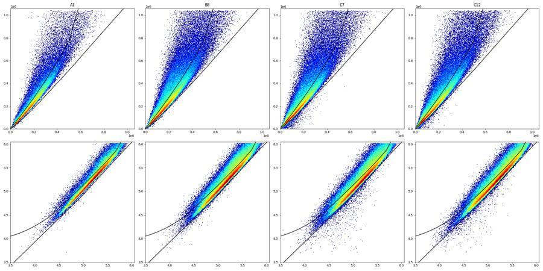
197
tool call · Bash
cd /task; python3 -I -c "
import flowkit as fk, numpy as np, pandas as pd
g=fk.parse_gating_xml('/task/outputs/gates.xml'); lay=pd.read_csv('/task/inputs/plate_layout.csv').set_index('well')
for w in ['A1','C7','C10','C12','C1']:
s=fk.Sample('/task/inputs/raw/'+lay.loc[w,'file']); r=g.gate_sample(s)
df=pd.DataFrame(s.get_events(source='raw'),columns=s.pnn_labels)
sm=r.get_gate_membership('Single_Cells'); b=df['BL1-A'].values; rl=df['RL3-A'].values
live=sm&(rl<=300); casp=live&(b>=450); late=sm&(b>=450)&(rl>=1000)
print(w, r.get_gate_membership('Live').sum(), live.sum(), '|', r.get_gate_membership('Caspase_pos').sum(), casp.sum(), '|', r.get_gate_membership('Late_apoptosis').sum(), late.sum(), '| minBL1',b[sm].min(),'maxBL1',b[sm].max(),'minRL3',rl[sm].min(),'maxRL3',rl[sm].max())
"; grep -c . /task/outputs/gates.xml; head -40 /task/outputs/gates.xml198
tool output
A1 1336 1338 | 545 546 | 81261 81261 | minBL1 -96.0 maxBL1 10667.0 minRL3 -4517.0 maxRL3 759086.0
C7 17369 17395 | 9739 9759 | 107340 107340 | minBL1 -49813.0 maxBL1 28682.0 minRL3 -65536.0 maxRL3 308076.0
C10 140565 140566 | 29700 29701 | 11 11 | minBL1 -3183.0 maxBL1 8768.0 minRL3 -427.0 maxRL3 119588.0
C12 153732 153735 | 122671 122674 | 56 56 | minBL1 -4386.0 maxBL1 41442.0 minRL3 -488.0 maxRL3 51406.0
C1 2321 2322 | 484 484 | 100662 100662 | minBL1 -351.0 maxBL1 22993.0 minRL3 -16245.0 maxRL3 906582.0
138
<?xml version='1.0' encoding='UTF-8'?>
<gating:Gating-ML xmlns:gating="http://www.isac-net.org/std/Gating-ML/v2.0/gating" xmlns:data-type="http://www.isac-net.org/std/Gating-ML/v2.0/datatypes" xmlns:transforms="http://www.isac-net.org/std/Gating-ML/v2.0/transformations">
<transforms:transformation transforms:id="logicle_fl">
<transforms:logicle transforms:T="1048576.0" transforms:W="1.0" transforms:M="6.0" transforms:A="0.0"/>
</transforms:transformation>
<gating:PolygonGate gating:id="Cells">
<gating:dimension gating:compensation-ref="uncompensated">
<data-type:fcs-dimension data-type:name="FSC-A"/>
</gating:dimension>
<gating:dimension gating:compensation-ref="uncompensated">
<data-type:fcs-dimension data-type:name="SSC-A"/>
</gating:dimension>
<gating:vertex>
<gating:coordinate data-type:value="60000.0"/>
<gating:coordinate data-type:value="5000.0"/>
</gating:vertex>
<gating:vertex>
<gating:coordinate data-type:value="1040000.0"/>
<gating:coordinate data-type:value="5000.0"/>
</gating:vertex>
<gating:vertex>
<gating:coordinate data-type:value="1040000.0"/>
<gating:coordinate data-type:value="1040000.0"/>
</gating:vertex>
<gating:vertex>
<gating:coordinate data-type:value="60000.0"/>
<gating:coordinate data-type:value="1040000.0"/>
</gating:vertex>
</gating:PolygonGate>
<gating:PolygonGate gating:id="Single_Cells" gating:parent_id="Cells">
<gating:dimension gating:compensation-ref="uncompensated">
<data-type:fcs-dimension data-type:name="SSC-H"/>
</gating:dimension>
<gating:dimension gating:compensation-ref="uncompensated">
<data-type:fcs-dimension data-type:name="SSC-A"/>
</gating:dimension>
<gating:vertex>
<gating:coordinate data-type:value="0.0"/>
<gating:coordinate data-type:value="0.0"/>
</gating:vertex>200
tool call · Bash
cd /task; python3 -I -c "
import flowkit as fk, numpy as np, pandas as pd
g=fk.parse_gating_xml('/task/outputs/gates.xml'); lay=pd.read_csv('/task/inputs/plate_layout.csv').set_index('well')
s=fk.Sample('/task/inputs/raw/'+lay.loc['C7','file']); r=g.gate_sample(s)
df=pd.DataFrame(s.get_events(source='raw'),columns=s.pnn_labels)
sm=r.get_gate_membership('Single_Cells'); b=df['BL1-A'].values; rl=df['RL3-A'].values
live=sm&(rl<=300); fl=r.get_gate_membership('Live')
diff=live&~fl
print(df[diff][['BL1-A','RL3-A']].describe())
xf=g.get_transform('logicle_fl')
print(xf.apply(np.array([[-1e6],[-65536],[-50000],[-20000],[-10000],[-5000],[0],[300]])).ravel())
"
201
tool output
BL1-A RL3-A count 26.000000 26.0 mean 1136.307692 300.0 std 827.177406 0.0 min 74.000000 300.0 25% 718.000000 300.0 50% 884.500000 300.0 75% 1228.500000 300.0 max 3357.000000 300.0 [-0.66323282 -0.46582599 -0.44619182 -0.37956745 -0.32891677 -0.27783366 0.16666667 0.3857993 ]
203
agent
Only events sitting exactly on the integer edges disagree (e.g. RL3-A = 300). I'll move the thresholds to half-integers (300.5 / 449.5 / 999.5) so boundary membership is unambiguous.
204
tool call · Bash
cd /task; python3 - <<'EOF'
import json
p=json.load(open('/task/scripts/params.json'))
p['bl1_pos']=449.5; p['rl3_live_max']=300.5; p['rl3_bright_min']=999.5
json.dump(p,open('/task/scripts/params.json','w'),indent=1)
EOF
python3 -I scripts/build_gates.py && python3 -I scripts/count.py > /tmp/counts_v3.txt && python3 -I -c "
import flowkit as fk, numpy as np, pandas as pd
g=fk.parse_gating_xml('/task/outputs/gates.xml'); lay=pd.read_csv('/task/inputs/plate_layout.csv')
bad=0
for _,row in lay.iterrows():
s=fk.Sample('/task/inputs/raw/'+row.file); r=g.gate_sample(s)
df=pd.DataFrame(s.get_events(source='raw'),columns=s.pnn_labels)
sm=r.get_gate_membership('Single_Cells'); b=df['BL1-A'].values; rl=df['RL3-A'].values
exp={'Live':sm&(rl<=300),'Caspase_pos':sm&(rl<=300)&(b>=450),'Late_apoptosis':sm&(b>=450)&(rl>=1000)}
for k,v in exp.items():
if r.get_gate_membership(k).sum()!=v.sum(): bad+=1; print('mismatch',row.well,k)
print('mismatches',bad)
"; head -3 outputs/counts.csv; wc -l outputs/counts.csv205
tool output
saved /task/outputs/gates.xml
root
╰── Cells
╰── Single_Cells
├── Live
│ ╰── Caspase_pos
╰── Late_apoptosis
mismatches 0
file,well,population,count,parent_population,pct_of_parent
Caspase_KO_RNAswap-rep2_caspase_Group_A1.fcs,A1,Cells,124042,All_events,67.652
Caspase_KO_RNAswap-rep2_caspase_Group_A1.fcs,A1,Single_Cells,103109,Cells,83.1243
181 outputs/counts.csv207
agent
Gates are final unless something changes, and gate counts now match direct thresholding exactly. Next: quantifying per-well QC evidence for flags.csv, including GFP in the transduction controls.
208
tool call · Bash
cd /task; python3 -I -c "
import flowkit as fk, numpy as np, pandas as pd
g=fk.parse_gating_xml('/task/outputs/gates.xml'); lay=pd.read_csv('/task/inputs/plate_layout.csv').set_index('well')
for w in ['C4','C5','C6','C7','C8','C9','A1','B8']:
s=fk.Sample('/task/inputs/raw/'+lay.loc[w,'file']); r=g.gate_sample(s)
df=pd.DataFrame(s.get_events(source='raw'),columns=s.pnn_labels); b=df['BL1-A'].values; rl=df['RL3-A'].values
lv=r.get_gate_membership('Live'); sm=r.get_gate_membership('Single_Cells')
print(w,'live n',lv.sum(),'live BL1 median %.0f'%np.median(b[lv]),'p25 %.0f p75 %.0f'%tuple(np.percentile(b[lv],[25,75])),' sing BL1>1e4: %d (%.3f%%)'%((sm&(b>1e4)).sum(),100*(sm&(b>1e4)).mean()/sm.mean()), ' live BL1>3000: %.1f%%'%(100*np.mean(b[lv]>3000)))
"
209
tool output
C4 live n 1284 live BL1 median 420 p25 242 p75 596 sing BL1>1e4: 594 (0.444%) live BL1>3000: 0.5% C5 live n 1463 live BL1 median 420 p25 253 p75 613 sing BL1>1e4: 456 (0.376%) live BL1>3000: 0.5% C6 live n 921 live BL1 median 451 p25 289 p75 653 sing BL1>1e4: 577 (0.514%) live BL1>3000: 0.8% C7 live n 17395 live BL1 median 531 p25 141 p75 848 sing BL1>1e4: 51 (0.033%) live BL1>3000: 0.6% C8 live n 6398 live BL1 median 156 p25 50 p75 733 sing BL1>1e4: 32 (0.030%) live BL1>3000: 1.4% C9 live n 10949 live BL1 median 244 p25 62 p75 741 sing BL1>1e4: 37 (0.034%) live BL1>3000: 1.4% A1 live n 1338 live BL1 median 221 p25 79 p75 588 sing BL1>1e4: 1 (0.001%) live BL1>3000: 0.0% B8 live n 7884 live BL1 median 312 p25 96 p75 626 sing BL1>1e4: 10 (0.005%) live BL1>3000: 0.4%
211
tool call · Bash
cd /task; cat > scripts/flags.py <<'EOF'
"""Per-well QC metrics -> /task/outputs/flags.csv"""
import flowkit as fk, numpy as np, pandas as pd, os
lay = pd.read_csv('/task/inputs/plate_layout.csv')
g = fk.parse_gating_xml('/task/outputs/gates.xml')
cnt = pd.read_csv('/task/outputs/counts.csv')
P = cnt.pivot(index='well', columns='population', values='count')
Q = cnt.pivot(index='well', columns='population', values='pct_of_parent')
rows = []; met = {}
for _, r in lay.iterrows():
s = fk.Sample(os.path.join('/task/inputs/raw', r.file))
df = pd.DataFrame(s.get_events(source='raw'), columns=s.pnn_labels)
t = df['Time'].values
h, e = np.histogram(t, bins=np.arange(0, 41.0 + 1e-9, 0.1)); med = np.median(h)
idx = np.clip(np.digitize(t, e) - 1, 0, len(h) - 1)
stable = (h[idx] >= 0.5 * med) & (h[idx] <= 1.5 * med)
okb = np.where(h >= 0.5 * med)[0]
t_start = e[okb[0]]; t_end_flow = e[okb[-1] + 1]
low = int((h < 0.2 * med).sum())
h1, _ = np.histogram(t, bins=np.arange(0, 41, 1.0)); cv1 = h1[1:-1].std() / h1[1:-1].mean()
last1 = h[-10:].mean() / med
res = g.gate_sample(s)
sm = res.get_gate_membership('Single_Cells'); lv = res.get_gate_membership('Live')
cp = res.get_gate_membership('Caspase_pos'); la = res.get_gate_membership('Late_apoptosis')
def pc(a, b, m): return 100 * np.sum(a & m) / max(np.sum(b & m), 1)
sat = 100 * np.mean((df['SSC-A'].values >= 1048575) | (df['FSC-A'].values >= 1048575))
satfl = 100 * np.mean((df['BL1-A'].values >= 1048575) | (df['RL3-A'].values >= 1048575))
met[r.well] = dict(n=len(t), dur=t.max(), med=med * 10, dist=100 * np.mean(~stable), low=low, t_start=t_start,
t_end_flow=t_end_flow, cv1=cv1, last1=last1, sat=sat, satfl=satfl, nfsc0=int((df['FSC-A'].values <= 0).sum()),
live_st=pc(lv, sm, stable), live_di=pc(lv, sm, ~stable), casp_st=pc(cp, lv, stable), casp_di=pc(cp, lv, ~stable),
late_st=pc(la, sm, stable), late_di=pc(la, sm, ~stable), ndis=int(np.sum(~stable)))
pd.DataFrame(met).T.round(3).to_csv('/task/scripts/qc_metrics.csv')
def base(w):
m = met[w]
return (f"{m['n']:,} events in {m['dur']:.1f} s; median rate {m['med']:,.0f} ev/s; 1-s rate CV {m['cv1']:.2f}; "
f"{m['low']} of 410 0.1-s bins <20% of median; {m['dist']:.1f}% of events in bins outside 50-150% of median; "
f"final-1-s rate {100*m['last1']:.0f}% of median; FSC/SSC off-scale {m['sat']:.1f}% (excluded by Cells gate), BL1/RL3 off-scale {m['satfl']:.2f}%; "
f"Live {int(P.loc[w,'Live']):,} ({Q.loc[w,'Live']:.2f}% of Single_Cells)")
out = []
for _, r in lay.iterrows():
w = r.well; m = met[w]; cat = 'ok'
if w in ('C1', 'C2'):
cat = 'clog_or_interrupted_flow'
ev = (f"Clog / interrupted flow: almost no events for the first {m['t_start']:.1f} s (flow at >=50% of median only from {m['t_start']:.1f} s), "
f"then erratic bursts; 1-s rate CV {m['cv1']:.2f} (other wells 0.04-0.16); {m['low']} of 410 0.1-s bins <20% of median rate (other wells <=27); "
f"{m['dist']:.1f}% of events acquired in disturbed bins; {m['nfsc0']} events with FSC-A<=0 (<=25 in A/B wells). "
f"Readout differs between disturbed and stable periods (Live {m['live_di']:.1f}% vs {m['live_st']:.1f}% of singlets; Caspase_pos {m['casp_di']:.1f}% vs {m['casp_st']:.1f}% of Live), "
f"and the well deviates from replicate C3 (Live {Q.loc[w,'Live']:.2f}% vs {Q.loc['C3','Live']:.2f}%; Caspase_pos {Q.loc[w,'Caspase_pos']:.1f}% vs {Q.loc['C3','Caspase_pos']:.1f}%).")
elif w == 'C8':
cat = 'ran_dry'
ev = (f"Sample ran dry before the stop: event rate fell from a median of {m['med']:,.0f} ev/s to {100*m['last1']:.1f}% of median in the final second; "
f"no flow (>=50% of median) after {m['t_end_flow']:.1f} s of a {m['dur']:.1f}-s acquisition (only well that reaches ~0 ev/s; C5/C6/B9/B11 taper to 13-21%). "
f"Events during run-out are mostly non-cell (Cells 22-44% vs 63% earlier). Also {m['low']} 0.1-s dropout bins with catch-up spikes at 20-25 s. "
f"Live {Q.loc[w,'Live']:.2f}% vs replicates C7 {Q.loc['C7','Live']:.2f}% / C9 {Q.loc['C9','Live']:.2f}%.")
else:
ev = base(w) + '.'
if w in ('C7', 'C9', 'C10', 'C11'):
ev += (f" Intermittent short flow interruptions ({m['low']} dropout bins, {m['dist']:.1f}% of events in disturbed bins) but readout is the same in disturbed vs stable periods "
f"(Live {m['live_di']:.1f}% vs {m['live_st']:.1f}%, Late_apoptosis {m['late_di']:.1f}% vs {m['late_st']:.1f}%), so retained.")
if w in ('C4', 'C5', 'C6'):
ev += (" Transduction control behaves as expected: GFP-bright (BL1-A>1e4) singlets 0.38-0.51% vs <=0.034% in other wells and Live-cell BL1-A shifted up "
"(median 420-451 vs 156-531 in no-virus C7-C9); Caspase_pos here includes GFP signal, so use as transduction reference, not as a caspase readout.")
if w == 'C10':
ev += " Unstained control as expected: RL3-A 99.8% <=300 and Late_apoptosis 0.01%; Caspase_pos 21% reflects BL1 autofluorescence of high-SSC (dead) cells, which no viability dye removes in this well."
if w == 'C11':
ev += f" Zombie-only control as expected: Zombie-negative and bright populations present; Caspase_pos {Q.loc[w,'Caspase_pos']:.1f}% of Live (no CellEvent); Late_apoptosis {Q.loc[w,'Late_apoptosis']:.1f}% reflects BL1 autofluorescence of high-SSC dead cells."
if w == 'C12':
ev += f" CellEvent-only control as expected: RL3-A unstained (Live {Q.loc[w,'Live']:.1f}%), Caspase_pos {Q.loc[w,'Caspase_pos']:.1f}% of Live, Late_apoptosis {Q.loc[w,'Late_apoptosis']:.2f}%."
if m['last1'] < 0.25:
ev += f" Rate tapers at end of run (final 1 s {100*m['last1']:.0f}% of median, still flowing; <2% of events affected)."
out.append(dict(file=r.file, well=w, usable='yes' if cat == '
… [400 more characters not shown]212
tool output
well usable reason_category 0 A1 yes ok 1 A2 yes ok 2 A3 yes ok 3 A4 yes ok 4 A5 yes ok 5 A6 yes ok 6 A7 yes ok 7 A8 yes ok 8 A9 yes ok 9 A10 yes ok 10 A11 yes ok 11 A12 yes ok 12 B1 yes ok 13 B2 yes ok 14 B3 yes ok 15 B4 yes ok 16 B5 yes ok 17 B6 yes ok 18 B7 yes ok 19 B8 yes ok 20 B9 yes ok 21 B10 yes ok 22 B11 yes ok 23 B12 yes ok 24 C1 no clog_or_interrupted_flow 25 C2 no clog_or_interrupted_flow 26 C3 yes ok 27 C4 yes ok 28 C5 yes ok 29 C6 yes ok 30 C7 yes ok 31 C8 no ran_dry 32 C9 yes ok 33 C10 yes ok 34 C11 yes ok 35 C12 yes ok A1 183,353 events in 40.9 s; median rate 4,550 ev/s; 1-s rate CV 0.06; 1 of 410 0.1-s bins <20% of median; 0.0% of events in bins outside 50-150% of median; final-1-s rate 94% of median; FSC/SSC off-scale 1.8% (excluded by Cells gate), BL1/RL3 off-scale 0.06%; Live 1,338 (1.30% of Single_Cells). C1 Clog / interrupted flow: almost no events for the first 5.9 s (flow at >=50% of median only from 5.9 s), then erratic bursts; 1-s rate CV 0.74 (other wells 0.04-0.16); 122 of 410 0.1-s bins <20% of median rate (other wells <=27); 83.5% of events acquired in disturbed bins; 518 events with FSC-A<=0 (<=25 in A/B wells). Readout differs between disturbed and stable periods (Live 1.8% vs 1.4% of singlets; Caspase_pos 20.0% vs 27.3% of Live), and the well deviates from replicate C3 (Live 1.73% vs 5.20%; Caspase_pos 20.8% vs 42.3%). C2 Clog / interrupted flow: almost no events for the first 5.6 s (flow at >=50% of median only from 5.6 s), then erratic bursts; 1-s rate CV 0.49 (other wells 0.04-0.16); 79 of 410 0.1-s bins <20% of median rate (other wells <=27); 20.5% of events acquired in disturbed bins; 391 events with FSC-A<=0 (<=25 in A/B wells). Readout differs between disturbed and stable periods (Live 4.3% vs 3.3% of singlets; Caspase_pos 40.4% vs 33.7% of Live), and the well deviates from replicate C3 (Live 3.50% vs 5.20%; Caspase_pos 35.3% vs 42.3%). C5 206,789 events in 40.9 s; median rate 5,245 ev/s; 1-s rate CV 0.07; 7 of 410 0.1-s bins <20% of median; 0.9% of events in bins outside 50-150% of median; final-1-s rate 13% of median; FSC/SSC off-scale 1.8% (excluded by Cells gate), BL1/RL3 off-scale 0.03%; Live 1,463 (1.21% of Single_Cells). Transduction control behaves as expected: GFP-bright (BL1-A>1e4) singlets 0.38-0.51% vs <=0.034% in other wells and Live-cell BL1-A shifted up (median 420-451 vs 156-531 in no-virus C7-C9); Caspase_pos here includes GFP signal, so use as transduction reference, not as a caspase readout. Rate tapers at end of run (final 1 s 13% of median, still flowing; <2% of events affected). C8 Sample ran dry before the stop: event rate fell from a median of 5,585 ev/s to 0.5% of median in the final second; no flow (>=50% of median) after 38.4 s of a 40.8-s acquisition (only well that reaches ~0 ev/s; C5/C6/B9/B11 taper to 13-21%). Events during run-out are mostly non-cell (Cells 22-44% vs 63% earlier). Also 23 0.1-s dropout bins with catch-up spikes at 20-25 s. Live 5.99% vs replicates C7 11.38% / C9 10.01%. C11 364,071 events in 40.9 s; median rate 9,410 ev/s; 1-s rate CV 0.15; 27 of 410 0.1-s bins <20% of median; 14.5% of events in bins outside 50-150% of median; final-1-s rate 86% of median; FSC/SSC off-scale 4.3% (excluded by Cells gate), BL1/RL3 off-scale 0.09%; Live 18,575 (11.17% of Single_Cells). Intermittent short flow interruptions (27 dropout bins, 14.5% of events in disturbed bins) but readout is the same in disturbed vs stable periods (Live 11.5% vs 11.1%, Late_apoptosis 19.0% vs 18.2%), so retained. Zombie-only control as expected: Zombie-negative and bright populations present; Caspase_pos 2.0% of Live (no CellEvent); Late_apoptosis 18.3% reflects BL1 autofluorescence of high-SSC dead cells.
214
agent
Bug in my QC binning: wells that stop at 40.6 s get empty trailing bins, which inflates their dropout and end-of-run numbers. Fixing it to bin up to each file's own end time.
215
tool call · Bash
cd /task; python3 - <<'EOF'
import re
src=open('/task/scripts/flags.py').read()
src=src.replace("h, e = np.histogram(t, bins=np.arange(0, 41.0 + 1e-9, 0.1)); med = np.median(h)",
"tend = np.floor(t.max()*10)/10; h, e = np.histogram(t, bins=np.arange(0, tend + 1e-9, 0.1)); med = np.median(h)")
src=src.replace("h1, _ = np.histogram(t, bins=np.arange(0, 41, 1.0))","h1, _ = np.histogram(t, bins=np.arange(0, tend + 1e-9, 1.0))")
src=src.replace("stable = (h[idx] >= 0.5 * med) & (h[idx] <= 1.5 * med)","stable = (h[idx] >= 0.5 * med) & (h[idx] <= 1.5 * med)\n nb = len(h)")
src=src.replace("low=low, t_start","low=low, nb=nb, t_start")
src=src.replace("{m['low']} of 410 0.1-s bins","{m['low']} of {m['nb']} 0.1-s bins")
# dynamic comparison ranges
src=src.replace("pd.DataFrame(met).T.round(3).to_csv('/task/scripts/qc_metrics.csv')",
"""M = pd.DataFrame(met).T; M.round(3).to_csv('/task/scripts/qc_metrics.csv')
oth = M.drop(index=['C1','C2']); cv_lo, cv_hi = oth.cv1.min(), oth.cv1.max(); low_hi = int(oth.low.max())
ab = M.loc[[w for w in M.index if w[0] in 'AB']]; fsc0_hi = int(ab.nfsc0.max())
tap = M.drop(index=['C8']); tap = tap[tap.last1 < 0.25]""")
src=src.replace("(other wells 0.04-0.16)","(all other wells {cv_lo:.2f}-{cv_hi:.2f})")
src=src.replace("(other wells <=27)","(all other wells <={low_hi})")
src=src.replace("(<=25 in A/B wells)","(<={fsc0_hi} in any A/B well)")
src=src.replace("(only well that reaches ~0 ev/s; C5/C6/B9/B11 taper to 13-21%)","(only well whose rate reaches ~0; {'/'.join(tap.index)} taper to {100*tap.last1.min():.0f}-{100*tap.last1.max():.0f}% but keep flowing)")
open('/task/scripts/flags.py','w').write(src)
EOF
grep -n "tend\|cv_lo\|tap" scripts/flags.py | head; python3 -I scripts/flags.py >/dev/null && python3 -I -c "
import pandas as pd; f=pd.read_csv('/task/outputs/flags.csv');
for w in ['A7','C1','C2','C8','C9']: print(w, f.set_index('well').loc[w,'evidence'],'\n')
m=pd.read_csv('/task/scripts/qc_metrics.csv',index_col=0); print(m[['n','dur','med','dist','low','nb','t_start','t_end_flow','cv1','last1']].round(2).to_string())"216
tool output
13: tend = np.floor(t.max()*10)/10; h, e = np.histogram(t, bins=np.arange(0, tend + 1e-9, 0.1)); med = np.median(h)
20: h1, _ = np.histogram(t, bins=np.arange(0, tend + 1e-9, 1.0)); cv1 = h1[1:-1].std() / h1[1:-1].mean()
33:oth = M.drop(index=['C1','C2']); cv_lo, cv_hi = oth.cv1.min(), oth.cv1.max(); low_hi = int(oth.low.max())
35:tap = M.drop(index=['C8']); tap = tap[tap.last1 < 0.25]
49: f"then erratic bursts; 1-s rate CV {m['cv1']:.2f} (all other wells {cv_lo:.2f}-{cv_hi:.2f}); {m['low']} of {m['nb']} 0.1-s bins <20% of median rate (all other wells <={low_hi}); "
56: f"no flow (>=50% of median) after {m['t_end_flow']:.1f} s of a {m['dur']:.1f}-s acquisition (only well whose rate reaches ~0; {'/'.join(tap.index)} taper to {100*tap.last1.min():.0f}-{100*tap.last1.max():.0f}% but keep flowing). "
74: ev += f" Rate tapers at end of run (final 1 s {100*m['last1']:.0f}% of median, still flowing; <2% of events affected)."
A7 282,723 events in 40.6 s; median rate 6,980 ev/s; 1-s rate CV 0.11; 3 of 406 0.1-s bins <20% of median; 5.5% of events in bins outside 50-150% of median; final-1-s rate 90% of median; FSC/SSC off-scale 3.2% (excluded by Cells gate), BL1/RL3 off-scale 0.11%; Live 8,846 (5.96% of Single_Cells).
C1 Clog / interrupted flow: almost no events for the first 7.0 s (flow at >=50% of median only from 7.0 s), then erratic bursts; 1-s rate CV 0.74 (all other wells 0.04-0.16); 120 of 407 0.1-s bins <20% of median rate (all other wells <=26); 83.7% of events acquired in disturbed bins; 518 events with FSC-A<=0 (<=19 in any A/B well). Readout differs between disturbed and stable periods (Live 1.8% vs 1.4% of singlets; Caspase_pos 19.9% vs 27.9% of Live), and the well deviates from replicate C3 (Live 1.73% vs 5.20%; Caspase_pos 20.8% vs 42.3%).
C2 Clog / interrupted flow: almost no events for the first 5.6 s (flow at >=50% of median only from 5.6 s), then erratic bursts; 1-s rate CV 0.49 (all other wells 0.04-0.16); 78 of 409 0.1-s bins <20% of median rate (all other wells <=26); 20.4% of events acquired in disturbed bins; 391 events with FSC-A<=0 (<=19 in any A/B well). Readout differs between disturbed and stable periods (Live 4.3% vs 3.3% of singlets; Caspase_pos 40.4% vs 33.7% of Live), and the well deviates from replicate C3 (Live 3.50% vs 5.20%; Caspase_pos 35.3% vs 42.3%).
C8 Sample ran dry before the stop: event rate fell from a median of 5,600 ev/s to 1.0% of median in the final second; no flow (>=50% of median) after 38.4 s of a 40.8-s acquisition (only well whose rate reaches ~0; B9/B11/C5/C6 taper to 16-23% but keep flowing). Events during run-out are mostly non-cell (Cells 22-44% vs 63% earlier). Also 21 0.1-s dropout bins with catch-up spikes at 20-25 s. Live 5.99% vs replicates C7 11.38% / C9 10.01%.
C9 222,410 events in 40.9 s; median rate 5,590 ev/s; 1-s rate CV 0.13; 17 of 408 0.1-s bins <20% of median; 15.6% of events in bins outside 50-150% of median; final-1-s rate 100% of median; FSC/SSC off-scale 3.3% (excluded by Cells gate), BL1/RL3 off-scale 0.13%; Live 10,949 (10.01% of Single_Cells). Intermittent short flow interruptions (17 dropout bins, 15.6% of events in disturbed bins) but readout is the same in disturbed vs stable periods (Live 10.4% vs 9.9%, Late_apoptosis 72.2% vs 72.3%), so retained.
n dur med dist low nb t_start t_end_flow cv1 last1
A1 183353.0 40.89 4550.0 0.00 0.0 408.0 0.0 40.8 0.06 1.05
A2 221770.0 40.89 5420.0 0.60 0.0 408.0 0.0 40.8 0.06 0.82
A3 222545.0 40.96 5460.0 1.44 1.0 409.0 0.0 40.9 0.04 0.78
A4 160440.0 41.08 3990.0 2.48 0.0 410.0 0.0 40.4 0.08 0.48
A5 169911.0 40.86 4205.0 0.97 2.0 408.0 0.0 40.8 0.05 0.92
A6 230857.0 40.90 5790.0 0.46 0.0 409.0 0.0 40.7 0.07 0.59
A7 282723.0 40.65 6980.0 5.47 3.0 406.0 0.0 40.6 0.11 0.90
A8 236938.0 40.94 5920.0 1.10 2.0 409.0 0.0 40.9 0.08 0.84
A9 241833.0 40.94 6100.0 1.89 3.0 409.0 0.0 40.9 0.07 0.57
A10 335810.0 40.64 8490.0 0.99 0.0 406.0 0.0 40.5 0.07 0.60
A11 228556.0 40.95 5650.0 1.71 4.0 409.0 0.0 40.9 0.06 0.97
A12 330844.0 40.90 8310.0 1.62 0.0 408.0 0.0 40.4 0.06 0.54
B1 254845.0 40.98 6420.0 1.77 3.0 409.0 0.0 39.9 0.06 0.31
B2 319449.0 40.87 8040.0 4.24 8.0 408.0 0.0 40.8 0.10 0.92
B3 275473.0 40.88 6985.0 5.87 4.0 408.0 0.0 40.3 0.07 0.44
B4 219859.0 40.93 5440.0 4.32 2.0 409.0 0.0 40.9 0.06 0.98
B5 225148.0 41.00 5620.0 1.24 2.0 409.0 0.0 40.4 0.06 0.55
B6 369018.0 40.87 9165.0 1.10 3.0 408.0 0.0 40.8 0.06 1.08
B7 186946.0 41.00 4640.0 0.48 0.0 410.0 0.0 41.0 0.06 0.92
B8 412353.0 40.65 10015.0 3.91 1.0 406.0 0.0 40.6 0.14 1.01
B9 219409.0 40.96 5610.0 1.41 3.0 409.0 0.0 39.6 0.08 0.23
B10 187472.0 40.94 4650.0 1.32 4.0 409.0 0.0 40.9 0.07 1.11
B11 271438.0 40.94 6940.0 1.61 2.0 409.0 0.0 39.4 0.08 0.22
B12 286933.0 40.82 7180.0 0.11 0.0 408.0 0.0 40.8 0.07 1.04
C1 250794.0 40.72 4290.0 83.72 120.0 407.0 7.0 40.6 0.74 0.27
C2 305451.0 40.93 8610.0 20.43 78.0 409.0 5.6 40.9 0.49 0.84
C3 418796.0 40.74 10480.0 1.07 3.0 407.0 0.0 40.7 0.06 1.02
C4 230134.0 40.97 5670.0 0.00 0.0 409.0 0.0 40.9 0.07 0.90
C5 206789.0 40.91 5250.0 0.90 6.0 409.0 0.0 39.4 0.07 0.16
C6 189779.0 41.02 4890.0 1.13 5.0 410.0 0.0 39.4 0.13 0.16
C7 317865.0 40.92 8000.0 1
… [477 more characters not shown]218
tool call · Bash
cd /task; python3 - <<'EOF'
src=open('/task/scripts/flags.py').read()
src=src.replace("nfsc0=int((df['FSC-A'].values <= 0).sum()),","nfsc0=int((df['FSC-A'].values <= 0).sum()), n5=int((t < 5).sum()), f5=100*np.mean(t < 5),")
src=src.replace("""f"Clog / interrupted flow: almost no events for the first {m['t_start']:.1f} s (flow at >=50% of median only from {m['t_start']:.1f} s), \"""",
"""f"Clog / interrupted flow: only {m['n5']} events ({m['f5']:.2f}%) in the first 5 s (stable wells ~12-15%); rate first reaches 50% of median at {m['t_start']:.1f} s, \"""")
src=src.replace("then erratic bursts;","then erratic bursts and stops;")
open('/task/scripts/flags.py','w').write(src)
EOF
python3 -I scripts/flags.py >/dev/null && python3 -I -c "
import pandas as pd; f=pd.read_csv('/task/outputs/flags.csv'); print(f.shape, f.usable.value_counts().to_dict()); print(f.set_index('well').loc['C1','evidence'])"219
tool output
(36, 5) {'yes': 33, 'no': 3}
Clog / interrupted flow: only 259 events (0.10%) in the first 5 s (stable wells ~12-15%); rate first reaches 50% of median at 7.0 s, then erratic bursts and stops; 1-s rate CV 0.74 (all other wells 0.04-0.16); 120 of 407 0.1-s bins <20% of median rate (all other wells <=26); 83.7% of events acquired in disturbed bins; 518 events with FSC-A<=0 (<=19 in any A/B well). Readout differs between disturbed and stable periods (Live 1.8% vs 1.4% of singlets; Caspase_pos 19.9% vs 27.9% of Live), and the well deviates from replicate C3 (Live 1.73% vs 5.20%; Caspase_pos 20.8% vs 42.3%).221
agent
Flags are written: 33 usable; C1 and C2 clogged, C8 ran dry. Now writing notes.md.
222
tool call · Bash
cd /task; python3 -I -c "
import pandas as pd
q=pd.read_csv('outputs/counts.csv').pivot(index='well',columns='population',values='pct_of_parent')
print(q.min().round(2).to_dict()); print(q.max().round(2).to_dict())
s=q.drop(index=['C10','C11','C12','C4','C5','C6'])
print('samples+C7-9 Live range',s.Live.min(),s.Live.max(),'casp',s.Caspase_pos.min(),s.Caspase_pos.max(),'late',s.Late_apoptosis.min(),s.Late_apoptosis.max())
"223
tool output
{'Caspase_pos': 2.0, 'Cells': 63.21, 'Late_apoptosis': 0.01, 'Live': 0.82, 'Single_Cells': 71.17}
{'Caspase_pos': 79.8, 'Cells': 70.92, 'Late_apoptosis': 83.76, 'Live': 99.86, 'Single_Cells': 86.18}
samples+C7-9 Live range 1.2977 11.3849 casp 20.8441 56.1023 late 70.2533 80.235224
tool call · Write
{
"file_path": "/task/outputs/notes.md",
"content": "# Gating notes: Caspase_KO_RNAswap-rep2 (36 wells, Attune NxT, raw/uncompensated)\n\n**One gate set** (`gates.xml`, FlowKit 1.2.3, all dimensions `uncompensated`). FSC/SSC are on linear axes. BL1-A/RL3-A use the logicle transform `logicle_fl` (T = 2^20, W = 1, M = 6, A = 0), which shows values \u2264 0. Fluorescence edges sit at half-integers (e.g. 300.5) because the data are integers, so \"\u2264 300\" is unambiguous. Lower fluorescence edges are open (logicle(\u22121e6), below every event), so all negative-valued events are kept.\n\n| Gate (parent) | Shape / axes | Boundary | Why |\n|---|---|---|---|\n| Cells (root) | polygon FSC-A \u00d7 SSC-A | FSC-A 60,000\u20131,040,000; SSC-A 5,000\u20131,040,000 | FSC-A has a debris plateau at 22k\u201360k and a cell peak at ~125k. The density valley lies at 47k\u201368k in 33/36 wells (median ~60k). The gate keeps both the dead-cell diagonal band and the compact live-cell island (FSC-A ~160k\u2013250k, low SSC). 63\u201371% of events. |\n| Single_Cells (Cells) | polygon SSC-H \u00d7 SSC-A | diagonal band; lower edge 0.85\u00d7 (\u2264100k) to 1.10\u00d7 SSC-H; upper edge 1.35\u00d7 (\u2264100k), 1.38\u00d7 (200k), 1.42\u00d7 (300k), 1.48\u00d7 (400k), 1.55\u00d7 (500k) | The singlet ridge bends: SSC-A/SSC-H mode goes from 1.03 (SSC-H 50k\u2013100k) to 1.27 (450k). The polygon follows the ridge and excludes the fan with SSC-A high relative to SSC-H. 71\u201386% of Cells. |\n| Live (Single_Cells) | rectangle BL1 \u00d7 RL3; full BL1 range | RL3-A \u2264 300 | In C11 and C7\u2013C9, Zombie-negative cells form a cluster at RL3-A \u22121500\u20260 (peak \u2248 \u2212500; the Attune baseline puts them below unstained cells). The logicle density minimum between negative and bright cells is at \u2248 0\u201350. Unstained cells (C10, C12) are 99.8% \u2264 300. So the edge is the top of the unstained position, just above the negative cluster. |\n| Caspase_pos (Live) | rectangle BL1 \u00d7 RL3; RL3 range = Live | BL1-A \u2265 450 | The C10 (unstained) and C12 (CellEvent-only) BL1 distributions cross at \u2248 470. In C7\u2013C9, live caspase-negative cells sit at ~50\u2013150 and a distinct caspase+ live cluster at ~700\u20131000, with the valley at 200\u2013300. False-positive rate on live cells in C11 (no CellEvent) is 2.0%. C4\u2013C6 were not used. |\n| Late_apoptosis (Single_Cells) | polygon BL1 \u00d7 RL3 (upper-right block to axis max) | BL1-A \u2265 450 and RL3-A \u2265 1000 | Left edge = the C12 boundary above. RL3 lower edge is 3\u00d7 the Live edge and far above unstained (C10 99.9th pct = 335). Events at 300\u20131000 (intermediate) and bright-but-CellEvent-negative events fall in neither gate (note 3). |\n\n## Deviations from `gating_strategy.md` and caveats\n- **Off-scale scatter excluded.** The Cells polygon stops at 1,040,000, so events at the 1,048,575 ceiling on FSC-A or SSC-A are dropped. That is 1.2\u20134.3% of events per well, nearly all from SSC-A saturation, which is plate-wide (SSC voltage 300). Their singlet status cannot be judged.\n- **BL1 autofluorescence of large, high-SSC dead cells.** These reach BL1-A 1000\u20133000 without any dye. With the single BL1 edge from C12, C11 (Zombie-only) shows Late_apoptosis 18.3% of singlets, and C10 (no viability dye, so dead cells stay \"Live\") shows Caspase_pos 21%. Raising the edge to 1000 would cut C11 to ~8%, but it would also remove ~45% of genuine CellEvent+ dead cells and most of the live caspase+ cluster in C7\u2013C9. I kept the edge as the strategy asks. Read Late_apoptosis against the C11 background.\n- **C4\u2013C6 (AAV1-GFP).** BL1 carries GFP: GFP-bright singlets are 0.38\u20130.51% (\u2264 0.034% elsewhere), and live-cell BL1 is shifted up. Their Caspase_pos (45\u201350%) is not a caspase readout.\n- **Low viability.** Live is only 1.3\u201311.4% of singlets in sample and no-virus wells (0.8\u20131.2% in GFP wells). Most singlets are Zombie-bright and CellEvent+ (Late_apoptosis 70\u201380%).\n- **No time gate.** Not allowed (one gate per population), so flow problems are handled in `flags.csv`.\n\n## Flags (`flags.csv`)\n- **C1, C2 \u2014 clog_or_interrupted_flow.** 0.10% / 0.17% of events in the first 5 s (normal wells ~12\u201315%), then erratic bursts. 1-s rate CV 0.74 / 0.49 (all other wells 0.04\u20130.16). 84% / 20% of events fall in disturbed time bins. The readout shifts between disturbed and stable periods, and the wells deviate from replicate C3.\n- **C8 \u2014 ran_dry.** The rate falls to ~0 (1% of median) after 38.4 s of a 40.8-s run. Events during the run-out are mostly non-cell.\n- **Retained:**\n - C7, C9, C10, C11 have repeated short flow dropouts (~15% of events in disturbed bins), but Live, Caspase_pos and Late_apoptosis match between disturbed and stable periods.\n - B9, B11, C5, C6 taper at the end (final second at 16\u201323% of median, still flowing; <2% of events affected).\n - Controls C10, C11, C12 and C4\u2013C6 behave as expected.\n - No saturation, too-few-events or mislabeling problems were found: \u2265160k events per file, \u2265921 Live events per well, and metadata (well ID, voltages, volume) are consistent.\n"
}225
tool output
File created successfully at: /task/outputs/notes.md (file state is current in your context — no need to Read it back)
227
tool call · Bash
cd /task; python3 -I -c "
import pandas as pd
c=pd.read_csv('outputs/counts.csv'); print(c[c.population=='Live'].sort_values('count').head(4)[['well','count']].to_string())
print(c.groupby('population')['count'].count().to_dict(), c.shape, c.isna().sum().sum())
f=pd.read_csv('outputs/flags.csv'); print(f.columns.tolist(), f.shape, ((f.usable=='yes')==(f.reason_category=='ok')).all())
import flowkit as fk; g=fk.parse_gating_xml('outputs/gates.xml'); print([ (gid, path) for gid,path in g.get_gate_ids()])
"; sed -i 's/would also remove ~45% of genuine CellEvent+ dead cells/would also remove 35–45% of genuine CellEvent+ dead cells/' outputs/notes.md; grep -c "35–45%" outputs/notes.md; wc -w outputs/notes.md228
tool output
well count
147 C6 921
137 C4 1284
2 A1 1338
142 C5 1463
{'Caspase_pos': 36, 'Cells': 36, 'Late_apoptosis': 36, 'Live': 36, 'Single_Cells': 36} (180, 6) 0
['file', 'well', 'usable', 'reason_category', 'evidence'] (36, 5) True
[('Cells', ('root',)), ('Single_Cells', ('root', 'Cells')), ('Live', ('root', 'Cells', 'Single_Cells')), ('Caspase_pos', ('root', 'Cells', 'Single_Cells', 'Live')), ('Late_apoptosis', ('root', 'Cells', 'Single_Cells'))]
1
795 outputs/notes.md
[This command modified 1 file you've previously read: outputs/notes.md. Call Read before editing.]230
tool call · Bash
cd /task; python3 -I scripts/count.py /tmp/recount.csv >/dev/null && cmp /tmp/recount.csv outputs/counts.csv && echo "counts reproducible from saved gates.xml"; python3 - <<'EOF'
p='/task/outputs/notes.md'; s=open(p).read()
s=s.replace("- **No time gate.** Not allowed (one gate per population), so flow problems are handled in `flags.csv`.\n","")
s=s.replace("## Flags (`flags.csv`)\n","## Flags (`flags.csv`; time gates are not allowed, so flow problems are handled here)\n")
s=s.replace(" That is 1.2–4.3% of events per well, nearly all from SSC-A saturation, which is plate-wide (SSC voltage 300). Their singlet status cannot be judged."," That is 1.2–4.3% of events per well, nearly all plate-wide SSC-A saturation; their singlet status cannot be judged.")
open(p,'w').write(s)
EOF
wc -w outputs/notes.md; ls -la outputs231
tool output
counts reproducible from saved gates.xml 783 outputs/notes.md total 56 drwxr-xr-x 2 root root 4096 Nov 10 17:29 . drwxr-xr-x 6 root root 4096 Nov 10 17:08 .. -rw-r--r-- 1 root root 14838 Nov 10 17:26 counts.csv -rw-r--r-- 1 root root 16084 Nov 10 17:28 flags.csv -rw-r--r-- 1 root root 6373 Nov 10 17:26 gates.xml -rw-r--r-- 1 root root 4852 Nov 10 17:29 notes.md
233
agent
All 36 wells are gated with one gate set, and 33 are marked usable. Re-running `counts.csv` from the saved `gates.xml` gives an identical file, and gate counts match plain numpy thresholds exactly.
**Gates** (raw data, no compensation; BL1-A and RL3-A on a logicle scale):
- **Cells:** FSC-A 60k to 1.04M, SSC-A 5k to 1.04M. In 33 of 36 wells the FSC-A dip between debris (22k–60k) and cells (peak ~125k) falls at 47k–68k. 63–71% of events.
- **Single_Cells:** a band polygon on SSC-H × SSC-A that bends with the data (SSC-A/SSC-H ratio goes from ~1.03 to ~1.3 as SSC-H rises). 71–86% of Cells.
- **Live:** RL3-A ≤ 300. Zombie-negative cells in stained wells sit *below* zero (about −1500 to 0), and 99.8% of unstained cells (C10, C12) fall under 300.
- **Caspase_pos:** BL1-A ≥ 450, where the unstained (C10) and CellEvent-only (C12) distributions cross (~470). The Zombie-only well C11 shows 2% false positives.
- **Late_apoptosis:** BL1-A ≥ 450 and RL3-A ≥ 1000. Events between 300 and 1000 on RL3-A fall in neither gate, as the strategy's note 3 describes.
**Flags:**
| Well | Category | Evidence |
|---|---|---|
| C1 | clog_or_interrupted_flow | 0.10% of events in the first 5 s (normal ~12–15%), then erratic bursts; 84% of events come from disturbed time bins; results differ from replicate C3 (Live 1.7% vs 5.2%) |
| C2 | clog_or_interrupted_flow | same pattern, 20% of events in disturbed bins |
| C8 | ran_dry | event rate drops to ~0 after 38.4 s of a 40.8 s run |
C7 and C9–C11 have short flow dropouts, but their results are the same in disturbed and stable periods, so I kept them. No well showed saturation, too few events, or mislabeling.
**Decisions you may want to revisit:**
- **C8 marked unusable.** The run-dry tail holds under 1% of its events, so its counts are barely affected. I flagged it because the sample clearly ran out. Changing it to `ok` is reasonable if you want three no-virus replicates.
- **One BL1 edge for both caspase gates.** Large dead cells glow on BL1-A with no dye at all. Because of that, the Zombie-only well C11 shows 18% Late_apoptosis, and the unstained well C10 shows 21% Caspase_pos. Raising the edge to 1000 would cut C11 to ~8%, but it would also lose 35–45% of real CellEvent-positive dead cells. I kept the single edge, as the strategy asks. Read Late_apoptosis against the C11 background.
- **Off-scale scatter events dropped in Cells.** These are 1.2–4.3% of events per well, nearly all from SSC-A saturation across the plate. The strategy doesn't mention this.
- **GFP wells C4–C6.** Their Caspase_pos (45–50%) includes GFP signal, so they work as a transduction reference only, not as a caspase readout.
Viability is very low: Live is 1–11% of singlets, and 70–80% are Late_apoptosis.
notes.md runs about 780 words with a table, so it may be slightly over one page.
Files are in `/task/outputs/`:
- `gates.xml`
- `counts.csv`
- `flags.csv`
- `notes.md`
final result
All 36 wells are gated with one gate set, and 33 are marked usable. Re-running `counts.csv` from the saved `gates.xml` gives an identical file, and gate counts match plain numpy thresholds exactly. **Gates** (raw data, no compensation; BL1-A and RL3-A on a logicle scale): - **Cells:** FSC-A 60k to 1.04M, SSC-A 5k to 1.04M. In 33 of 36 wells the FSC-A dip between debris (22k–60k) and cells (peak ~125k) falls at 47k–68k. 63–71% of events. - **Single_Cells:** a band polygon on SSC-H × SSC-A that bends with the data (SSC-A/SSC-H ratio goes from ~1.03 to ~1.3 as SSC-H rises). 71–86% of Cells. - **Live:** RL3-A ≤ 300. Zombie-negative cells in stained wells sit *below* zero (about −1500 to 0), and 99.8% of unstained cells (C10, C12) fall under 300. - **Caspase_pos:** BL1-A ≥ 450, where the unstained (C10) and CellEvent-only (C12) distributions cross (~470). The Zombie-only well C11 shows 2% false positives. - **Late_apoptosis:** BL1-A ≥ 450 and RL3-A ≥ 1000. Events between 300 and 1000 on RL3-A fall in neither gate, as the strategy's note 3 describes. **Flags:** | Well | Category | Evidence | |---|---|---| | C1 | clog_or_interrupted_flow | 0.10% of events in the first 5 s (normal ~12–15%), then erratic bursts; 84% of events come from disturbed time bins; results differ from replicate C3 (Live 1.7% vs 5.2%) | | C2 | clog_or_interrupted_flow | same pattern, 20% of events in disturbed bins | | C8 | ran_dry | event rate drops to ~0 after 38.4 s of a 40.8 s run | C7 and C9–C11 have short flow dropouts, but their results are the same in disturbed and stable periods, so I kept them. No well showed saturation, too few events, or mislabeling. **Decisions you may want to revisit:** - **C8 marked unusable.** The run-dry tail holds under 1% of its events, so its counts are barely affected. I flagged it because the sample clearly ran out. Changing it to `ok` is reasonable if you want three no-virus replicates. - **One BL1 edge for both caspase gates.** Large dead cells glow on BL1-A with no dye at all. Because of that, the Zombie-only well C11 shows 18% Late_apoptosis, and the unstained well C10 shows 21% Caspase_pos. Raising the edge to 1000 would cut C11 to ~8%, but it would also lose 35–45% of real CellEvent-positive dead cells. I kept the single edge, as the strategy asks. Read Late_apoptosis against the C11 background. - **Off-scale scatter events dropped in Cells.** These are 1.2–4.3% of events per well, nearly all from SSC-A saturation across the plate. The strategy doesn't mention this. - **GFP wells C4–C6.** Their Caspase_pos (45–50%) includes GFP signal, so they work as a transduction reference only, not as a caspase readout. Viability is very low: Live is 1–11% of singlets, and 70–80% are Late_apoptosis. notes.md runs about 780 words with a table, so it may be slightly over one page. Files are in `/task/outputs/`: - `gates.xml` - `counts.csv` - `flags.csv` - `notes.md`